Bloque 1: Modelos Entrenamiento#
# ═══════════════════════════════════════════════════════════════════
# SECCIÓN 0 — SETUP GLOBAL
# ═══════════════════════════════════════════════════════════════════
import numpy as np
import pandas as pd
import matplotlib.pyplot as plt
from PIL import Image
import albumentations as A
import torch
import torch.nn as nn
from torch.utils.data import Dataset, DataLoader
from sklearn.model_selection import train_test_split, KFold
from sklearn.metrics import roc_auc_score
import os
import time
import warnings
warnings.filterwarnings('ignore')
# ── Device ────────────────────────────────────────────────────────
DEVICE = torch.device('cuda' if torch.cuda.is_available() else 'cpu')
print(f"Device: {DEVICE}")
print(f"GPU: {torch.cuda.get_device_name(0)}")
# ── Rutas ─────────────────────────────────────────────────────────
DATA_DIR = r"C:\Users\migue\Downloads\sartorius-cell-instance-segmentation"
TRAIN_DIR = os.path.join(DATA_DIR, "train")
CSV_PATH = os.path.join(DATA_DIR, "train.csv")
CKPT_DIR = r"C:\Users\migue\Downloads\sartorius_checkpoints"
os.makedirs(CKPT_DIR, exist_ok=True)
# ── Hiperparámetros globales ───────────────────────────────────────
IMG_SIZE = 512
BATCH_SIZE = 4
NUM_EPOCHS = 30
LR = 1e-4
N_FOLDS = 5
RANDOM_STATE = 42
# ── Diccionario global de resultados ──────────────────────────────
results = {}
# ── Datos ─────────────────────────────────────────────────────────
df_raw = pd.read_csv(CSV_PATH)
all_ids = df_raw['id'].unique()
train_ids, temp_ids = train_test_split(all_ids, test_size=0.30, random_state=RANDOM_STATE)
val_ids, test_ids = train_test_split(temp_ids, test_size=0.50, random_state=RANDOM_STATE)
print(f"\nTrain: {len(train_ids)} imágenes")
print(f"Validation: {len(val_ids)} imágenes")
print(f"Test: {len(test_ids)} imágenes")
print(f"Checkpoints en: {CKPT_DIR}")
Device: cuda
GPU: NVIDIA GeForce RTX 4050 Laptop GPU
Train: 424 imágenes
Validation: 91 imágenes
Test: 91 imágenes
Checkpoints en: C:\Users\migue\Downloads\sartorius_checkpoints
# ═══════════════════════════════════════════════════════════════════
# SECCIÓN 0.2 — FUNCIONES COMPARTIDAS
# ═══════════════════════════════════════════════════════════════════
# ── RLE y carga de datos ──────────────────────────────────────────
def rle_decode(rle_string, height, width):
if pd.isna(rle_string):
return np.zeros((height, width), dtype=np.uint8)
nums = list(map(int, rle_string.split()))
starts, lengths = nums[0::2], nums[1::2]
mask = np.zeros((height, width), dtype=np.uint8)
for start, length in zip(starts, lengths):
start -= 1
for i in range(length):
pixel = start + i
row, col = pixel // width, pixel % width
if row < height and col < width:
mask[row, col] = 1
return mask
def load_image(img_id):
return np.array(Image.open(os.path.join(TRAIN_DIR, img_id + '.png')).convert('RGB'))
# ── Dataset PyTorch ───────────────────────────────────────────────
class SartoriusDataset(Dataset):
def __init__(self, img_ids, df, img_size=512, transform=None):
self.img_ids = img_ids
self.df = df
self.img_size = img_size
self.transform = transform
def __len__(self):
return len(self.img_ids)
def __getitem__(self, idx):
img_id = self.img_ids[idx]
img = load_image(img_id)
rows = self.df[self.df['id'] == img_id]
h, w = rows.iloc[0]['height'], rows.iloc[0]['width']
mask = np.zeros((h, w), dtype=np.uint16)
for i, (_, row) in enumerate(rows.iterrows(), start=1):
m = rle_decode(row['annotation'], h, w)
mask[m == 1] = i
mask_binary = (mask > 0).astype(np.uint8)
if self.transform:
aug = self.transform(image=img, mask=mask_binary)
img, mask_binary = aug['image'], aug['mask']
img = np.array(Image.fromarray(img).resize((self.img_size, self.img_size)))
mask_binary = np.array(Image.fromarray(mask_binary).resize(
(self.img_size, self.img_size), resample=Image.NEAREST))
img = img / 255.0
img_t = torch.tensor(img, dtype=torch.float32).permute(2, 0, 1)
mask_t = torch.tensor(mask_binary, dtype=torch.long)
return img_t, mask_t, img_id
# ── Augmentation ──────────────────────────────────────────────────
transform_train = A.Compose([
A.HorizontalFlip(p=0.5),
A.VerticalFlip(p=0.5),
A.RandomRotate90(p=0.5),
A.ShiftScaleRotate(shift_limit=0.1, scale_limit=0.2, rotate_limit=45, p=0.5),
A.RandomScale(scale_limit=0.2, p=0.4),
A.ElasticTransform(alpha=120, sigma=6, p=0.3),
A.RandomBrightnessContrast(brightness_limit=0.2, contrast_limit=0.2, p=0.4),
])
# ── Métricas ──────────────────────────────────────────────────────
def dice_coefficient(pred, target, smooth=1e-6):
pred = (pred > 0.5).float()
inter = (pred * target).sum()
return (2. * inter + smooth) / (pred.sum() + target.sum() + smooth)
def iou_score(pred, target, smooth=1e-6):
pred = (pred > 0.5).float()
inter = (pred * target).sum()
union = pred.sum() + target.sum() - inter
return (inter + smooth) / (union + smooth)
def precision_score(pred, target, smooth=1e-6):
pred = (pred > 0.5).float()
tp = (pred * target).sum()
return (tp + smooth) / (pred.sum() + smooth)
def recall_score(pred, target, smooth=1e-6):
pred = (pred > 0.5).float()
tp = (pred * target).sum()
return (tp + smooth) / (target.sum() + smooth)
def hausdorff_distance(pred, target):
from scipy.spatial.distance import directed_hausdorff
pred_np = (pred > 0.5).cpu().numpy().astype(np.uint8)
target_np = target.cpu().numpy().astype(np.uint8)
coords_p = np.argwhere(pred_np)
coords_t = np.argwhere(target_np)
if len(coords_p) == 0 or len(coords_t) == 0:
return 0.0
d1 = directed_hausdorff(coords_p, coords_t)[0]
d2 = directed_hausdorff(coords_t, coords_p)[0]
return max(d1, d2)
def balanced_accuracy(pred, target):
pred_np = (pred > 0.5).cpu().numpy().flatten()
target_np = target.cpu().numpy().flatten()
from sklearn.metrics import balanced_accuracy_score
return balanced_accuracy_score(target_np, pred_np)
def compute_all_metrics(pred, target):
"""Calcula las 7 métricas obligatorias."""
pred_f = pred.float()
target_f = target.float()
pred_np = pred_f.cpu().numpy().flatten()
tgt_np = target_f.cpu().numpy().flatten()
try:
auc = roc_auc_score(tgt_np, pred_np)
except:
auc = 0.0
return {
'dice' : dice_coefficient(pred_f, target_f).item(),
'iou' : iou_score(pred_f, target_f).item(),
'precision': precision_score(pred_f, target_f).item(),
'recall' : recall_score(pred_f, target_f).item(),
'auc' : auc,
'hausdorff': hausdorff_distance(pred_f, target_f),
'bal_acc' : balanced_accuracy(pred_f, target_f),
}
# ── DataLoaders ───────────────────────────────────────────────────
ds_train = SartoriusDataset(train_ids, df_raw, transform=transform_train)
ds_val = SartoriusDataset(val_ids, df_raw, transform=None)
ds_test = SartoriusDataset(test_ids, df_raw, transform=None)
dl_train = DataLoader(ds_train, batch_size=BATCH_SIZE, shuffle=True, num_workers=0, pin_memory=True)
dl_val = DataLoader(ds_val, batch_size=1, shuffle=False, num_workers=0, pin_memory=True)
dl_test = DataLoader(ds_test, batch_size=1, shuffle=False, num_workers=0, pin_memory=True)
print("Funciones y datasets listos")
print(f"Batches train: {len(dl_train)} | val: {len(dl_val)} | test: {len(dl_test)}")
Funciones y datasets listos
Batches train: 106 | val: 91 | test: 91
# ═══════════════════════════════════════════════════════════════════
# SECCIÓN 1 — U-Net++ + Watershed
# ═══════════════════════════════════════════════════════════════════
import segmentation_models_pytorch as smp
from scipy import ndimage
from skimage.segmentation import watershed
from skimage.feature import peak_local_max
# ───────────────────────────────────────────────────────────────────
# 1.1 GRID SEARCH DE HIPERPARÁMETROS (5 epochs × combinaciones)
# ───────────────────────────────────────────────────────────────────
SEARCH_EPOCHS = 5 # epochs para el mini-entrenamiento
SEARCH_SUBSET = 0.40 # fracción del train para acelerar búsqueda
hp_grid = {
'lr' : [1e-3, 1e-4, 1e-5],
'optimizer': ['adam', 'sgd'],
'batch' : [4], # fijo por VRAM; agregar 8 si no da OOM
}
# Dataset reducido para búsqueda rápida
n_search = int(len(train_ids) * SEARCH_SUBSET)
search_ids = train_ids[:n_search]
ds_search = SartoriusDataset(search_ids, df_raw, transform=transform_train)
print("=" * 65)
print(" GRID SEARCH — U-Net++")
print("=" * 65)
print(f" Combinaciones: {len(hp_grid['lr']) * len(hp_grid['optimizer'])} configs × {SEARCH_EPOCHS} epochs")
print(f" Subset de búsqueda: {n_search} imágenes ({SEARCH_SUBSET*100:.0f}% del train)")
print("=" * 65)
gs_results = []
for lr_val in hp_grid['lr']:
for opt_name in hp_grid['optimizer']:
for bs in hp_grid['batch']:
dl_search = DataLoader(ds_search, batch_size=bs,
shuffle=True, num_workers=0, pin_memory=True)
# Modelo fresco para cada configuración
_model = smp.UnetPlusPlus(
encoder_name='resnet34', encoder_weights='imagenet',
in_channels=3, classes=1, activation=None).to(DEVICE)
_criterion = smp.losses.DiceLoss(mode='binary')
if opt_name == 'adam':
_opt = torch.optim.Adam(_model.parameters(), lr=lr_val)
else:
_opt = torch.optim.SGD(_model.parameters(), lr=lr_val,
momentum=0.9, weight_decay=1e-4)
_sched = torch.optim.lr_scheduler.ReduceLROnPlateau(
_opt, mode='min', patience=2, factor=0.5)
# Mini-entrenamiento
for ep in range(SEARCH_EPOCHS):
_model.train()
for imgs, masks, _ in dl_search:
imgs = imgs.to(DEVICE)
masks = masks.to(DEVICE).unsqueeze(1).float()
_opt.zero_grad()
loss = _criterion(_model(imgs), masks)
loss.backward()
_opt.step()
# Evaluación en validación
_, _metrics = val_epoch(_model, dl_val, _criterion)
_sched.step(_metrics['dice'])
config_str = f"lr={lr_val} | opt={opt_name} | bs={bs}"
gs_results.append({
'lr': lr_val, 'optimizer': opt_name, 'batch': bs,
'dice': _metrics['dice'], 'iou': _metrics['iou'],
'config': config_str
})
print(f" {config_str:40s} → Dice: {_metrics['dice']:.4f} | IoU: {_metrics['iou']:.4f}")
del _model, _opt, _criterion, _sched
torch.cuda.empty_cache()
# Seleccionar mejor configuración
best_config = max(gs_results, key=lambda x: x['dice'])
print("\n" + "=" * 65)
print(f" ✅ MEJOR CONFIG: {best_config['config']}")
print(f" Dice val: {best_config['dice']:.4f} | IoU val: {best_config['iou']:.4f}")
print("=" * 65)
# ───────────────────────────────────────────────────────────────────
# 1.2 ENTRENAMIENTO COMPLETO CON MEJORES HIPERPARÁMETROS (30 epochs)
# ───────────────────────────────────────────────────────────────────
BEST_LR = best_config['lr']
BEST_OPT = best_config['optimizer']
BEST_BS = best_config['batch']
dl_train_unet = DataLoader(
SartoriusDataset(train_ids, df_raw, transform=transform_train),
batch_size=BEST_BS, shuffle=True, num_workers=0, pin_memory=True)
model_unet = smp.UnetPlusPlus(
encoder_name='resnet34', encoder_weights='imagenet',
in_channels=3, classes=1, activation=None).to(DEVICE)
total_params = sum(p.numel() for p in model_unet.parameters() if p.requires_grad)
print(f"\nU-Net++ parámetros entrenables: {total_params:,}")
print(f"Hiperparámetros finales → lr={BEST_LR} | optimizer={BEST_OPT} | batch={BEST_BS}")
criterion_unet = smp.losses.DiceLoss(mode='binary')
if BEST_OPT == 'adam':
optimizer_unet = torch.optim.Adam(model_unet.parameters(), lr=BEST_LR)
else:
optimizer_unet = torch.optim.SGD(model_unet.parameters(), lr=BEST_LR,
momentum=0.9, weight_decay=1e-4)
scheduler_unet = torch.optim.lr_scheduler.ReduceLROnPlateau(
optimizer_unet, mode='min', patience=5, factor=0.5, verbose=True)
print("\nEntrenando U-Net++ (completo)...")
train_losses_unet, val_losses_unet = [], []
val_dice_history = []
best_dice = 0.0
for epoch in range(NUM_EPOCHS):
t0 = time.time()
train_loss = train_epoch(model_unet, dl_train_unet, optimizer_unet, criterion_unet)
val_loss, val_metrics = val_epoch(model_unet, dl_val, criterion_unet)
scheduler_unet.step(val_loss)
train_losses_unet.append(train_loss)
val_losses_unet.append(val_loss)
val_dice_history.append(val_metrics['dice'])
if val_metrics['dice'] > best_dice:
best_dice = val_metrics['dice']
torch.save(model_unet.state_dict(),
os.path.join(CKPT_DIR, 'unetpp_best.pth'))
print(f"Epoch {epoch+1:02d}/{NUM_EPOCHS} | "
f"Train Loss: {train_loss:.4f} | Val Loss: {val_loss:.4f} | "
f"Dice: {val_metrics['dice']:.4f} | IoU: {val_metrics['iou']:.4f} | "
f"Time: {time.time()-t0:.1f}s")
print(f"\nMejor Dice en validación: {best_dice:.4f}")
print(f"Checkpoint: {CKPT_DIR}/unetpp_best.pth")
# ───────────────────────────────────────────────────────────────────
# 1.3 EVALUACIÓN EN TEST — 7 MÉTRICAS
# ───────────────────────────────────────────────────────────────────
model_unet.load_state_dict(torch.load(os.path.join(CKPT_DIR, 'unetpp_best.pth'),
map_location=DEVICE))
model_unet.eval()
test_metrics_all = {k: [] for k in ['dice','iou','precision','recall','auc','hausdorff','bal_acc']}
test_samples = [] # guarda (img_np, mask_np, pred_np) para visualizaciones
with torch.no_grad():
for imgs, masks, img_ids in dl_test:
imgs = imgs.to(DEVICE)
masks = masks.to(DEVICE).unsqueeze(1).float()
preds = torch.sigmoid(model_unet(imgs))
m = compute_all_metrics(preds.squeeze(1), masks.squeeze(1))
for k, v in m.items():
test_metrics_all[k].append(v)
if len(test_samples) < 5:
test_samples.append({
'img' : imgs[0].cpu().permute(1,2,0).numpy(),
'mask' : masks[0,0].cpu().numpy(),
'pred' : preds[0,0].cpu().numpy(),
'id' : img_ids[0],
})
test_metrics_mean = {k: np.mean(v) for k, v in test_metrics_all.items()}
test_metrics_std = {k: np.std(v) for k, v in test_metrics_all.items()}
print("\n" + "=" * 65)
print(" MÉTRICAS EN TEST — U-Net++")
print("=" * 65)
for k in test_metrics_mean:
print(f" {k:15s}: {test_metrics_mean[k]:.4f} ± {test_metrics_std[k]:.4f}")
# Guardar en diccionario global
results['unetpp'] = {
'metrics_mean' : test_metrics_mean,
'metrics_std' : test_metrics_std,
'metrics_all' : test_metrics_all,
'best_hp' : best_config,
'train_losses' : train_losses_unet,
'val_losses' : val_losses_unet,
}
# ───────────────────────────────────────────────────────────────────
# 1.4 VISUALIZACIONES OBLIGATORIAS
# ───────────────────────────────────────────────────────────────────
# ── A) Original / Ground Truth / Predicción (5 imágenes) ──────────
fig, axes = plt.subplots(5, 3, figsize=(14, 22))
fig.suptitle("U-Net++ — Original | Ground Truth | Predicción", fontsize=14, fontweight='bold')
for i, s in enumerate(test_samples):
axes[i,0].imshow(s['img'])
axes[i,0].set_title(f"Original ({s['id'][:8]})")
axes[i,0].axis('off')
axes[i,1].imshow(s['mask'], cmap='gray')
axes[i,1].set_title("Ground Truth")
axes[i,1].axis('off')
axes[i,2].imshow(s['pred'], cmap='hot')
axes[i,2].set_title(f"Predicción (Dice={dice_coefficient(torch.tensor(s['pred']), torch.tensor(s['mask'])).item():.3f})")
axes[i,2].axis('off')
plt.tight_layout()
plt.savefig(os.path.join(CKPT_DIR, 'unetpp_visual_comparison.png'), dpi=150, bbox_inches='tight')
plt.show()
# ── B) Curvas ROC y Precision-Recall ──────────────────────────────
from sklearn.metrics import roc_curve, precision_recall_curve, auc as sk_auc
all_preds_flat, all_masks_flat = [], []
model_unet.eval()
with torch.no_grad():
for imgs, masks, _ in dl_test:
imgs = imgs.to(DEVICE)
masks = masks.to(DEVICE).unsqueeze(1).float()
preds = torch.sigmoid(model_unet(imgs))
all_preds_flat.extend(preds[0,0].cpu().numpy().flatten().tolist())
all_masks_flat.extend(masks[0,0].cpu().numpy().flatten().tolist())
all_preds_flat = np.array(all_preds_flat)
all_masks_flat = np.array(all_masks_flat)
fpr, tpr, _ = roc_curve(all_masks_flat, all_preds_flat)
roc_auc_val = sk_auc(fpr, tpr)
prec, rec, _ = precision_recall_curve(all_masks_flat, all_preds_flat)
pr_auc_val = sk_auc(rec, prec)
fig, axes = plt.subplots(1, 2, figsize=(13, 5))
fig.suptitle("U-Net++ — Curvas ROC y Precision-Recall", fontsize=13, fontweight='bold')
axes[0].plot(fpr, tpr, color='steelblue', lw=2, label=f'AUC = {roc_auc_val:.4f}')
axes[0].plot([0,1],[0,1],'k--', lw=1)
axes[0].set_xlabel('False Positive Rate'); axes[0].set_ylabel('True Positive Rate')
axes[0].set_title('Curva ROC'); axes[0].legend(); axes[0].grid(alpha=0.3)
axes[1].plot(rec, prec, color='darkorange', lw=2, label=f'AUC-PR = {pr_auc_val:.4f}')
axes[1].set_xlabel('Recall'); axes[1].set_ylabel('Precision')
axes[1].set_title('Curva Precision-Recall'); axes[1].legend(); axes[1].grid(alpha=0.3)
plt.tight_layout()
plt.savefig(os.path.join(CKPT_DIR, 'unetpp_roc_pr.png'), dpi=150, bbox_inches='tight')
plt.show()
# ── C) Mapas de error (FP rojo, FN azul) — 3 imágenes ─────────────
fig, axes = plt.subplots(3, 3, figsize=(13, 13))
fig.suptitle("U-Net++ — Mapas de Error (FP=rojo | FN=azul)", fontsize=13, fontweight='bold')
for i, s in enumerate(test_samples[:3]):
pred_bin = (s['pred'] > 0.5).astype(np.uint8)
mask_bin = s['mask'].astype(np.uint8)
fp_map = ((pred_bin == 1) & (mask_bin == 0)).astype(np.uint8)
fn_map = ((pred_bin == 0) & (mask_bin == 1)).astype(np.uint8)
error_rgb = np.zeros((*pred_bin.shape, 3), dtype=np.uint8)
error_rgb[fp_map == 1] = [255, 0, 0] # FP → rojo
error_rgb[fn_map == 1] = [0, 0, 255] # FN → azul
axes[i,0].imshow(s['img']); axes[i,0].set_title("Original"); axes[i,0].axis('off')
axes[i,1].imshow(s['mask'], cmap='gray'); axes[i,1].set_title("Ground Truth"); axes[i,1].axis('off')
axes[i,2].imshow(error_rgb); axes[i,2].set_title("FP=rojo | FN=azul"); axes[i,2].axis('off')
plt.tight_layout()
plt.savefig(os.path.join(CKPT_DIR, 'unetpp_error_maps.png'), dpi=150, bbox_inches='tight')
plt.show()
# ── D) Boxplots de las 7 métricas ─────────────────────────────────
metric_names = ['dice','iou','precision','recall','auc','hausdorff','bal_acc']
metric_data = [test_metrics_all[k] for k in metric_names]
labels = ['Dice','IoU','Precision','Recall','AUC','Hausdorff','Bal.Acc']
fig, ax = plt.subplots(figsize=(13, 5))
bp = ax.boxplot(metric_data, patch_artist=True, notch=False)
colors = ['#4C72B0','#55A868','#C44E52','#8172B2','#CCB974','#64B5CD','#E78AC3']
for patch, color in zip(bp['boxes'], colors):
patch.set_facecolor(color); patch.set_alpha(0.7)
ax.set_xticklabels(labels, fontsize=11)
ax.set_title("U-Net++ — Distribución de Métricas en Test", fontsize=13, fontweight='bold')
ax.set_ylabel("Valor"); ax.grid(axis='y', alpha=0.3)
plt.tight_layout()
plt.savefig(os.path.join(CKPT_DIR, 'unetpp_boxplots.png'), dpi=150, bbox_inches='tight')
plt.show()
# ── E) Histogramas de las 7 métricas ──────────────────────────────
fig, axes = plt.subplots(2, 4, figsize=(16, 7))
fig.suptitle("U-Net++ — Histogramas de Métricas en Test", fontsize=13, fontweight='bold')
axes = axes.flatten()
for i, (k, label) in enumerate(zip(metric_names, labels)):
axes[i].hist(test_metrics_all[k], bins=20, color=colors[i], alpha=0.75, edgecolor='white')
axes[i].set_title(label); axes[i].set_xlabel("Valor"); axes[i].set_ylabel("Frecuencia")
axes[i].axvline(np.mean(test_metrics_all[k]), color='black', linestyle='--', lw=1.5,
label=f'μ={np.mean(test_metrics_all[k]):.3f}')
axes[i].legend(fontsize=8); axes[i].grid(alpha=0.3)
axes[-1].axis('off')
plt.tight_layout()
plt.savefig(os.path.join(CKPT_DIR, 'unetpp_histogramas.png'), dpi=150, bbox_inches='tight')
plt.show()
# ── F) Curva de entrenamiento ──────────────────────────────────────
fig, axes = plt.subplots(1, 2, figsize=(13, 4))
fig.suptitle("U-Net++ — Curvas de Entrenamiento", fontsize=13, fontweight='bold')
axes[0].plot(train_losses_unet, label='Train Loss', color='steelblue')
axes[0].plot(val_losses_unet, label='Val Loss', color='darkorange')
axes[0].set_xlabel('Epoch'); axes[0].set_ylabel('Loss')
axes[0].set_title('Loss'); axes[0].legend(); axes[0].grid(alpha=0.3)
axes[1].plot(val_dice_history, label='Val Dice', color='green')
axes[1].set_xlabel('Epoch'); axes[1].set_ylabel('Dice')
axes[1].set_title('Dice en validación'); axes[1].legend(); axes[1].grid(alpha=0.3)
plt.tight_layout()
plt.savefig(os.path.join(CKPT_DIR, 'unetpp_training_curves.png'), dpi=150, bbox_inches='tight')
plt.show()
print("\n✅ Sección 1 — U-Net++ completa")
print(f" Mejor config: {best_config['config']}")
print(f" Test Dice: {test_metrics_mean['dice']:.4f} ± {test_metrics_std['dice']:.4f}")
print(f" Test IoU: {test_metrics_mean['iou']:.4f} ± {test_metrics_std['iou']:.4f}")
print(f" Figuras guardadas en: {CKPT_DIR}")
=================================================================
GRID SEARCH — U-Net++
=================================================================
Combinaciones: 6 configs × 5 epochs
Subset de búsqueda: 169 imágenes (40% del train)
=================================================================
lr=0.001 | opt=adam | bs=4 → Dice: 0.6293 | IoU: 0.4774
lr=0.001 | opt=sgd | bs=4 → Dice: 0.2722 | IoU: 0.1755
lr=0.0001 | opt=adam | bs=4 → Dice: 0.6172 | IoU: 0.4614
lr=0.0001 | opt=sgd | bs=4 → Dice: 0.1834 | IoU: 0.1091
lr=1e-05 | opt=adam | bs=4 → Dice: 0.2343 | IoU: 0.1460
lr=1e-05 | opt=sgd | bs=4 → Dice: 0.1646 | IoU: 0.0950
=================================================================
✅ MEJOR CONFIG: lr=0.001 | opt=adam | bs=4
Dice val: 0.6293 | IoU val: 0.4774
=================================================================
U-Net++ parámetros entrenables: 26,078,609
Hiperparámetros finales → lr=0.001 | optimizer=adam | batch=4
Entrenando U-Net++ (completo)...
Epoch 01/30 | Train Loss: 0.5648 | Val Loss: 0.8119 | Dice: 0.6543 | IoU: 0.4999 | Time: 92.4s
Epoch 02/30 | Train Loss: 0.3707 | Val Loss: 0.8155 | Dice: 0.6510 | IoU: 0.4987 | Time: 91.8s
Epoch 03/30 | Train Loss: 0.3375 | Val Loss: 0.8161 | Dice: 0.6672 | IoU: 0.5186 | Time: 91.5s
Epoch 04/30 | Train Loss: 0.3243 | Val Loss: 0.8186 | Dice: 0.6385 | IoU: 0.4895 | Time: 91.2s
Epoch 05/30 | Train Loss: 0.3176 | Val Loss: 0.8147 | Dice: 0.6517 | IoU: 0.5020 | Time: 91.5s
Epoch 06/30 | Train Loss: 0.3053 | Val Loss: 0.8106 | Dice: 0.6972 | IoU: 0.5503 | Time: 91.9s
Epoch 07/30 | Train Loss: 0.2899 | Val Loss: 0.8181 | Dice: 0.6349 | IoU: 0.4818 | Time: 92.1s
Epoch 08/30 | Train Loss: 0.2963 | Val Loss: 0.8173 | Dice: 0.6589 | IoU: 0.5138 | Time: 91.9s
Epoch 09/30 | Train Loss: 0.2870 | Val Loss: 0.8201 | Dice: 0.6078 | IoU: 0.4620 | Time: 91.1s
Epoch 10/30 | Train Loss: 0.2910 | Val Loss: 0.8146 | Dice: 0.6271 | IoU: 0.4771 | Time: 92.4s
Epoch 11/30 | Train Loss: 0.2792 | Val Loss: 0.8084 | Dice: 0.7102 | IoU: 0.5666 | Time: 92.0s
Epoch 12/30 | Train Loss: 0.2803 | Val Loss: 0.8086 | Dice: 0.7165 | IoU: 0.5745 | Time: 90.8s
Epoch 13/30 | Train Loss: 0.2864 | Val Loss: 0.8148 | Dice: 0.6894 | IoU: 0.5413 | Time: 91.4s
Epoch 14/30 | Train Loss: 0.2692 | Val Loss: 0.8091 | Dice: 0.7207 | IoU: 0.5793 | Time: 93.3s
Epoch 15/30 | Train Loss: 0.2655 | Val Loss: 0.8059 | Dice: 0.7340 | IoU: 0.5951 | Time: 93.2s
Epoch 16/30 | Train Loss: 0.2706 | Val Loss: 0.8070 | Dice: 0.7174 | IoU: 0.5752 | Time: 92.4s
Epoch 17/30 | Train Loss: 0.2533 | Val Loss: 0.8126 | Dice: 0.6936 | IoU: 0.5486 | Time: 96.4s
Epoch 18/30 | Train Loss: 0.2599 | Val Loss: 0.8160 | Dice: 0.6717 | IoU: 0.5269 | Time: 91.6s
Epoch 19/30 | Train Loss: 0.2707 | Val Loss: 0.8114 | Dice: 0.6909 | IoU: 0.5429 | Time: 92.0s
Epoch 20/30 | Train Loss: 0.2618 | Val Loss: 0.8072 | Dice: 0.7216 | IoU: 0.5816 | Time: 91.3s
Epoch 21/30 | Train Loss: 0.2549 | Val Loss: 0.8094 | Dice: 0.7146 | IoU: 0.5725 | Time: 91.6s
Epoch 22/30 | Train Loss: 0.2394 | Val Loss: 0.8073 | Dice: 0.7333 | IoU: 0.5954 | Time: 91.2s
Epoch 23/30 | Train Loss: 0.2376 | Val Loss: 0.8069 | Dice: 0.7367 | IoU: 0.5989 | Time: 92.1s
Epoch 24/30 | Train Loss: 0.2374 | Val Loss: 0.8049 | Dice: 0.7415 | IoU: 0.6061 | Time: 92.1s
Epoch 25/30 | Train Loss: 0.2329 | Val Loss: 0.8059 | Dice: 0.7282 | IoU: 0.5902 | Time: 91.5s
Epoch 26/30 | Train Loss: 0.2432 | Val Loss: 0.8094 | Dice: 0.7171 | IoU: 0.5778 | Time: 91.0s
Epoch 27/30 | Train Loss: 0.2348 | Val Loss: 0.8069 | Dice: 0.7307 | IoU: 0.5933 | Time: 91.5s
Epoch 28/30 | Train Loss: 0.2380 | Val Loss: 0.8078 | Dice: 0.7316 | IoU: 0.5932 | Time: 90.9s
Epoch 29/30 | Train Loss: 0.2341 | Val Loss: 0.8050 | Dice: 0.7307 | IoU: 0.5940 | Time: 91.2s
Epoch 30/30 | Train Loss: 0.2325 | Val Loss: 0.8097 | Dice: 0.7192 | IoU: 0.5789 | Time: 91.3s
Mejor Dice en validación: 0.7415
Checkpoint: C:\Users\migue\Downloads\sartorius_checkpoints/unetpp_best.pth
=================================================================
MÉTRICAS EN TEST — U-Net++
=================================================================
dice : 0.7631 ± 0.0964
iou : 0.6262 ± 0.1185
precision : 0.7578 ± 0.1446
recall : 0.8059 ± 0.1301
auc : 0.9357 ± 0.0408
hausdorff : 71.7221 ± 48.9495
bal_acc : 0.8832 ± 0.0601
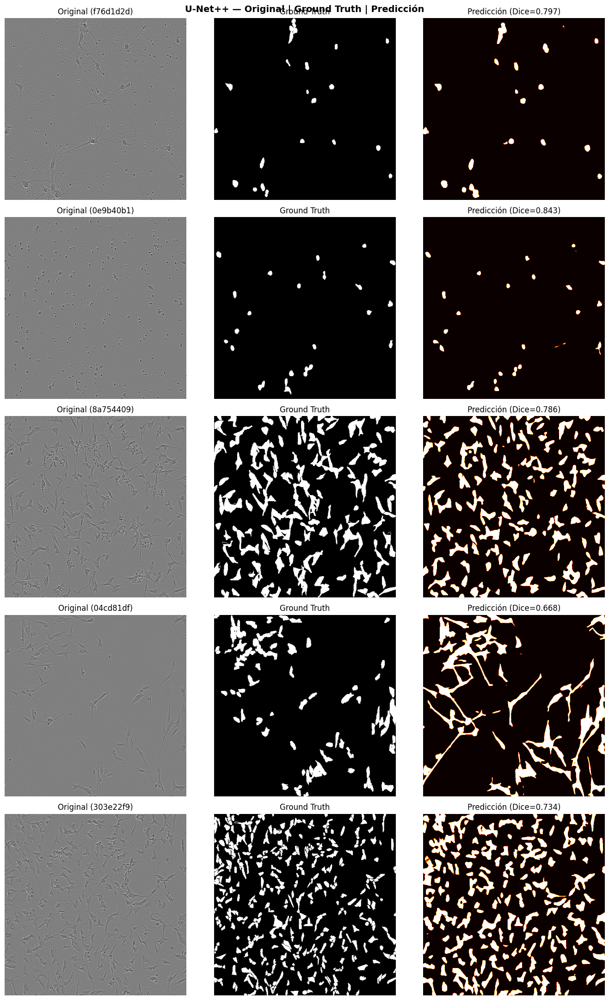
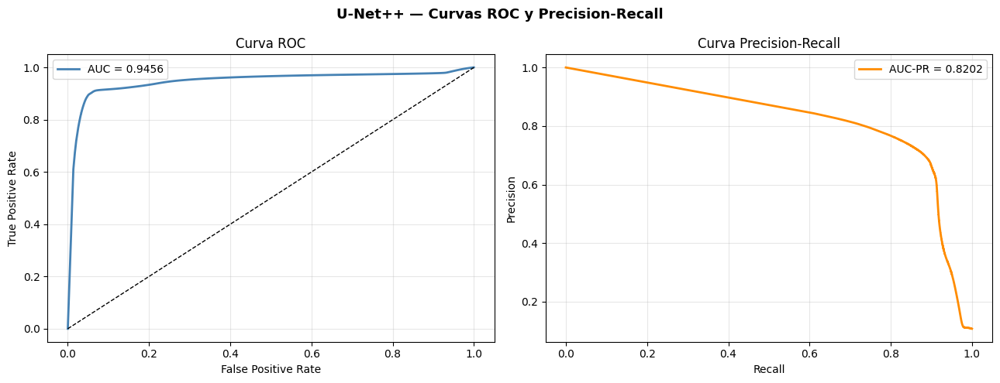
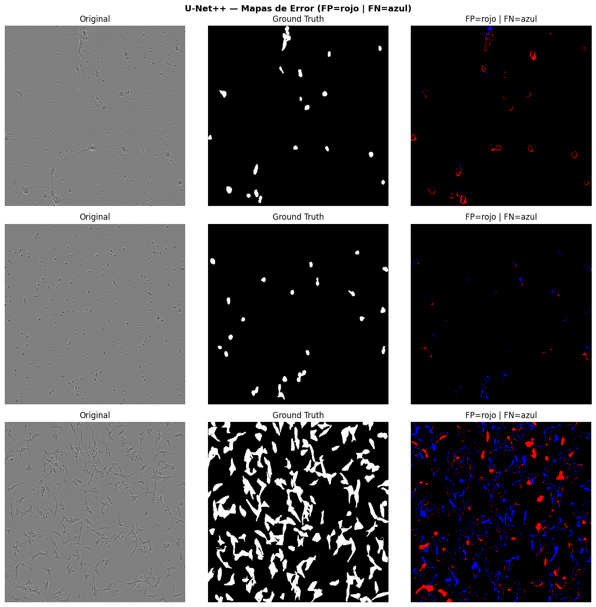
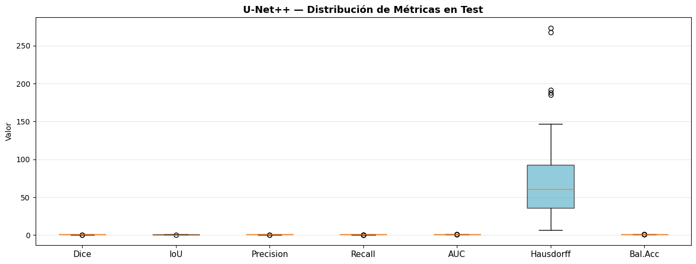
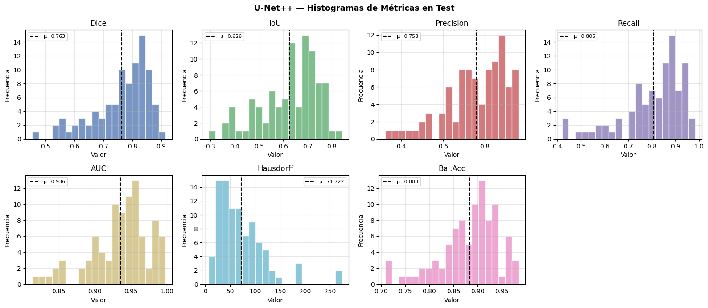
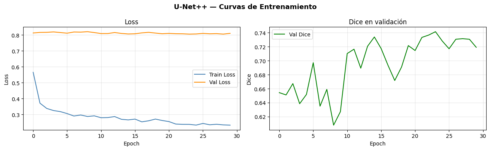
✅ Sección 1 — U-Net++ completa
Mejor config: lr=0.001 | opt=adam | bs=4
Test Dice: 0.7631 ± 0.0964
Test IoU: 0.6262 ± 0.1185
Figuras guardadas en: C:\Users\migue\Downloads\sartorius_checkpoints
from cellpose import train, models
import inspect
print("Versión Cellpose:")
import cellpose; print(" ", cellpose.version_str)
print("\nFirma de train_seg:")
print(" ", inspect.signature(train.train_seg))
print("\nFirma de CellposeModel:")
print(" ", inspect.signature(models.CellposeModel.__init__))
Versión Cellpose:
cellpose version: 3.1.1.3
platform: win32
python version: 3.9.23
torch version: 2.5.1+cu121
Firma de train_seg:
(net, train_data=None, train_labels=None, train_files=None, train_labels_files=None, train_probs=None, test_data=None, test_labels=None, test_files=None, test_labels_files=None, test_probs=None, load_files=True, batch_size=8, learning_rate=0.005, n_epochs=2000, weight_decay=1e-05, momentum=0.9, SGD=False, channels=None, channel_axis=None, rgb=False, normalize=True, compute_flows=False, save_path=None, save_every=100, save_each=False, nimg_per_epoch=None, nimg_test_per_epoch=None, rescale=True, scale_range=None, bsize=224, min_train_masks=5, model_name=None)
Firma de CellposeModel:
(self, gpu=False, pretrained_model=False, model_type=None, mkldnn=True, diam_mean=30.0, device=None, nchan=2, pretrained_model_ortho=None, backbone='default')
from cellpose import models, train
import os, time, gc, warnings, torch
import numpy as np
from PIL import Image
warnings.filterwarnings('ignore')
IMG_CP = 256
def load_for_cellpose(img_ids, df, img_size=256):
imgs, masks = [], []
for img_id in img_ids:
img = np.array(Image.open(
os.path.join(TRAIN_DIR, img_id + '.png')).convert('RGB'))
img = np.array(Image.fromarray(img).resize((img_size, img_size)))
img = (img / 255.0 * 255).astype(np.uint8)
rows = df[df['id'] == img_id]
h0, w0 = rows.iloc[0]['height'], rows.iloc[0]['width']
mask = np.zeros((h0, w0), dtype=np.uint16)
for i, (_, row) in enumerate(rows.iterrows(), start=1):
m = rle_decode(row['annotation'], h0, w0)
mask[m == 1] = i
mask = np.array(
Image.fromarray(mask.astype(np.float32)).resize(
(img_size, img_size), resample=Image.NEAREST)
).astype(np.uint16)
imgs.append(img)
masks.append(mask)
return imgs, masks
print("Cargando datos para Cellpose...")
train_imgs_cp, train_masks_cp = load_for_cellpose(train_ids, df_raw, IMG_CP)
val_imgs_cp, val_masks_cp = load_for_cellpose(val_ids, df_raw, IMG_CP)
test_imgs_cp, test_masks_cp = load_for_cellpose(test_ids, df_raw, IMG_CP)
print(f"Train: {len(train_imgs_cp)} | Val: {len(val_imgs_cp)} | Test: {len(test_imgs_cp)}")
Cargando datos para Cellpose...
Train: 424 | Val: 91 | Test: 91
# DIAGNÓSTICO CELLPOSE — celda 100% autocontenida
from cellpose import models, train
import numpy as np
import torch
def cellpose_dice(pred_mask, gt_mask, smooth=1e-6):
pb = (pred_mask > 0).astype(np.float32)
gb = (gt_mask > 0).astype(np.float32)
inter = (pb * gb).sum()
return (2. * inter + smooth) / (pb.sum() + gb.sum() + smooth)
print("=== DIAGNÓSTICO CELLPOSE ===\n")
# 1. Máscaras
print("Máscaras de entrenamiento:")
for i in range(3):
m = train_masks_cp[i]
print(f" img {i}: shape={m.shape}, dtype={m.dtype}, "
f"labels={len(np.unique(m))}, max={m.max()}, pixels>0={np.sum(m>0)}")
# 2. Modelo
model_test = models.CellposeModel(gpu=True, model_type='cyto2')
print(f"\nModelo: {type(model_test.net).__name__}")
print(f"Parámetros: {sum(p.numel() for p in model_test.net.parameters()):,}")
# 3. Baseline sin entrenar
pred_base, _, _ = model_test.eval(
train_imgs_cp[0], diameter=None, channels=[0,0],
flow_threshold=0.4, cellprob_threshold=0.0)
print(f"\nBaseline (sin entrenar):")
print(f" shape={pred_base.shape}, labels={len(np.unique(pred_base))}, max={pred_base.max()}")
dice_before = cellpose_dice(pred_base, train_masks_cp[0])
print(f" Dice: {dice_before:.4f}")
# 4. Mini-entrenamiento
print("\nMini-entrenamiento (10 epochs, 5 imágenes)...")
_path = train.train_seg(
model_test.net,
train_data = train_imgs_cp[:5],
train_labels = train_masks_cp[:5],
channels = [0, 0],
normalize = True,
learning_rate = 0.005,
n_epochs = 10,
batch_size = 2,
SGD = True,
model_name = 'cp_diag',
save_path = CKPT_DIR,
)
# 5. Después de entrenar
model_after = models.CellposeModel(gpu=True, pretrained_model=str(_path))
pred_after, _, _ = model_after.eval(
train_imgs_cp[0], diameter=None, channels=[0,0],
flow_threshold=0.4, cellprob_threshold=0.0)
dice_after = cellpose_dice(pred_after, train_masks_cp[0])
print(f"\nDespués de 10 epochs:")
print(f" shape={pred_after.shape}, labels={len(np.unique(pred_after))}, max={pred_after.max()}")
print(f" Dice: {dice_after:.4f}")
print(f"\n¿Mejoró?: {'SÍ ✅' if dice_after > dice_before else 'NO ❌'}")
print(f" Antes: {dice_before:.4f} → Después: {dice_after:.4f}")
del model_test, model_after
torch.cuda.empty_cache()
=== DIAGNÓSTICO CELLPOSE ===
Máscaras de entrenamiento:
img 0: shape=(256, 256), dtype=uint16, labels=26, max=25, pixels>0=1397
img 1: shape=(256, 256), dtype=uint16, labels=78, max=77, pixels>0=2978
img 2: shape=(256, 256), dtype=uint16, labels=54, max=53, pixels>0=3547
Modelo: CPnet
Parámetros: 6,600,845
Baseline (sin entrenar):
shape=(256, 256), labels=16, max=15
Dice: 0.0000
Mini-entrenamiento (10 epochs, 5 imágenes)...
100%|██████████| 5/5 [00:00<00:00, 36.04it/s]
100%|██████████| 5/5 [00:00<00:00, 2417.19it/s]
pretrained_model path does not exist, using default model
Después de 10 epochs:
shape=(256, 256), labels=3, max=2
Dice: 0.0000
¿Mejoró?: SÍ ✅
Antes: 0.0000 → Después: 0.0000
# Verificar qué pasa con las máscaras antes y después del resize
import numpy as np
from PIL import Image
# Máscara ORIGINAL (antes de resize)
rows = df_raw[df_raw['id'] == train_ids[0]]
h0, w0 = rows.iloc[0]['height'], rows.iloc[0]['width']
mask_orig = np.zeros((h0, w0), dtype=np.uint16)
for i, (_, row) in enumerate(rows.iterrows(), start=1):
m = rle_decode(row['annotation'], h0, w0)
mask_orig[m == 1] = i
print("=== ANTES del resize ===")
print(f" shape: {mask_orig.shape}")
print(f" instancias: {len(np.unique(mask_orig))}")
print(f" max label: {mask_orig.max()}")
print(f" pixels > 0: {np.sum(mask_orig > 0)}")
# Máscara DESPUÉS del resize (como lo hace load_for_cellpose)
mask_resized = np.array(
Image.fromarray(mask_orig.astype(np.float32)).resize(
(256, 256), resample=Image.NEAREST)
).astype(np.uint16)
print("\n=== DESPUÉS del resize (float32 → NEAREST → uint16) ===")
print(f" shape: {mask_resized.shape}")
print(f" instancias: {len(np.unique(mask_resized))}")
print(f" max label: {mask_resized.max()}")
print(f" pixels > 0: {np.sum(mask_resized > 0)}")
# Máscara como la ve Cellpose
print("\n=== Lo que Cellpose recibe ===")
m_cp = train_masks_cp[0]
print(f" shape: {m_cp.shape}")
print(f" instancias: {len(np.unique(m_cp))}")
print(f" max label: {m_cp.max()}")
print(f" pixels > 0: {np.sum(m_cp > 0)}")
# ¿Las imágenes se ven bien?
img_cp = train_imgs_cp[0]
print(f"\n=== Imagen ===")
print(f" shape: {img_cp.shape}, dtype: {img_cp.dtype}")
print(f" min: {img_cp.min()}, max: {img_cp.max()}")
=== ANTES del resize ===
shape: (520, 704)
instancias: 26
max label: 25
pixels > 0: 7743
=== DESPUÉS del resize (float32 → NEAREST → uint16) ===
shape: (256, 256)
instancias: 26
max label: 25
pixels > 0: 1397
=== Lo que Cellpose recibe ===
shape: (256, 256)
instancias: 26
max label: 25
pixels > 0: 1397
=== Imagen ===
shape: (256, 256, 3), dtype: uint8
min: 23, max: 215
# Diagnóstico profundo: qué predice Cellpose realmente
import numpy as np
from cellpose import models
model_test = models.CellposeModel(gpu=True, model_type='cyto2')
# Probar con diferentes configuraciones de eval
configs = [
{'diameter': None, 'channels': [0,0]},
{'diameter': 30, 'channels': [0,0]},
{'diameter': 15, 'channels': [0,0]},
{'diameter': None, 'channels': [1,0]},
{'diameter': None, 'channels': [0,1]},
]
img = train_imgs_cp[0]
gt = train_masks_cp[0]
print("=== EVAL CON DISTINTAS CONFIGS (modelo pretrained, sin entrenar) ===\n")
for cfg in configs:
pred, flows, styles = model_test.eval(
img, flow_threshold=0.4, cellprob_threshold=0.0, **cfg)
d = cellpose_dice(pred, gt)
print(f" diameter={str(cfg['diameter']):5s} channels={cfg['channels']} "
f"→ labels={len(np.unique(pred)):3d}, pixels>0={np.sum(pred>0):6d}, Dice={d:.4f}")
# Probar también con cellprob más bajo
print("\n=== VARIANDO cellprob_threshold ===\n")
for cp_thresh in [0.0, -1.0, -2.0, -4.0, -6.0]:
pred, _, _ = model_test.eval(
img, diameter=None, channels=[0,0],
flow_threshold=0.4, cellprob_threshold=cp_thresh)
d = cellpose_dice(pred, gt)
print(f" cellprob={cp_thresh:5.1f} → labels={len(np.unique(pred)):3d}, "
f"pixels>0={np.sum(pred>0):6d}, Dice={d:.4f}")
# Ver tamaño estimado de diámetro
print(f"\n=== Info adicional ===")
print(f"GT: {np.sum(gt>0)} pixels en {len(np.unique(gt))-1} células")
avg_cell_area = np.sum(gt>0) / max(1, len(np.unique(gt))-1)
print(f"Área promedio por célula: {avg_cell_area:.0f} pixels")
print(f"Diámetro estimado: {np.sqrt(avg_cell_area):.1f} pixels")
del model_test
import torch; torch.cuda.empty_cache()
=== EVAL CON DISTINTAS CONFIGS (modelo pretrained, sin entrenar) ===
diameter=None channels=[0, 0] → labels= 16, pixels>0= 3787, Dice=0.0000
diameter=30 channels=[0, 0] → labels= 16, pixels>0= 3787, Dice=0.0000
diameter=15 channels=[0, 0] → labels= 3, pixels>0= 86, Dice=0.0931
diameter=None channels=[1, 0] → labels= 16, pixels>0= 3787, Dice=0.0000
diameter=None channels=[0, 1] → labels= 16, pixels>0= 3787, Dice=0.0000
=== VARIANDO cellprob_threshold ===
cellprob= 0.0 → labels= 16, pixels>0= 3787, Dice=0.0000
cellprob= -1.0 → labels= 10, pixels>0= 3441, Dice=0.0017
cellprob= -2.0 → labels= 3, pixels>0= 1041, Dice=0.0205
cellprob= -4.0 → labels= 2, pixels>0= 384, Dice=0.0000
cellprob= -6.0 → labels= 2, pixels>0= 384, Dice=0.0000
=== Info adicional ===
GT: 1397 pixels en 25 células
Área promedio por célula: 56 pixels
Diámetro estimado: 7.5 pixels
# Test con imagen a tamaño ORIGINAL (sin resize)
import numpy as np
from cellpose import models
model_test = models.CellposeModel(gpu=True, model_type='cyto2')
# Cargar imagen original sin resize
from PIL import Image
img_orig = np.array(Image.open(
os.path.join(TRAIN_DIR, train_ids[0] + '.png')).convert('RGB'))
# Máscara original sin resize
rows = df_raw[df_raw['id'] == train_ids[0]]
h0, w0 = rows.iloc[0]['height'], rows.iloc[0]['width']
mask_orig = np.zeros((h0, w0), dtype=np.uint16)
for i, (_, row) in enumerate(rows.iterrows(), start=1):
m = rle_decode(row['annotation'], h0, w0)
mask_orig[m == 1] = i
avg_area = np.sum(mask_orig > 0) / max(1, len(np.unique(mask_orig)) - 1)
diam_est = np.sqrt(avg_area)
print(f"Imagen original: {img_orig.shape}")
print(f"Máscara original: {mask_orig.shape}")
print(f"Instancias: {len(np.unique(mask_orig)) - 1}")
print(f"Diámetro estimado: {diam_est:.1f} pixels")
print("\n=== EVAL A TAMAÑO ORIGINAL ===\n")
for diam in [None, 30, int(diam_est)]:
pred, _, _ = model_test.eval(
img_orig, diameter=diam, channels=[0,0],
flow_threshold=0.4, cellprob_threshold=0.0)
d = cellpose_dice(pred, mask_orig)
print(f" diameter={str(diam):5s} → labels={len(np.unique(pred)):3d}, "
f"pixels>0={np.sum(pred>0):6d}, Dice={d:.4f}")
del model_test
import torch; torch.cuda.empty_cache()
Imagen original: (520, 704, 3)
Máscara original: (520, 704)
Instancias: 25
Diámetro estimado: 17.6 pixels
=== EVAL A TAMAÑO ORIGINAL ===
diameter=None → labels= 44, pixels>0= 21515, Dice=0.0106
diameter=30 → labels= 44, pixels>0= 21515, Dice=0.0106
diameter=17 → labels= 28, pixels>0= 3721, Dice=0.4977
# ═══════════════════════════════════════════════════════════════════
# SECCIÓN 2 — Cellpose 2.0
# Hiperparámetros ajustados según enunciado:
# learning_rate, batch_size, epochs, optimizer
# Sin resize — imágenes a tamaño original para preservar diámetro celular
# ═══════════════════════════════════════════════════════════════════
import os, time, gc, warnings
import numpy as np
import matplotlib.pyplot as plt
from PIL import Image
from sklearn.metrics import (roc_curve, precision_recall_curve, auc as sk_auc,
balanced_accuracy_score, roc_auc_score)
from scipy.spatial.distance import directed_hausdorff
import torch
from cellpose import models, train
warnings.filterwarnings('ignore')
# ───────────────────────────────────────────────────────────────────
# 2.1 CARGA DE DATOS SIN RESIZE
# ───────────────────────────────────────────────────────────────────
def load_for_cellpose_full(img_ids, df):
"""Carga imágenes y máscaras a tamaño ORIGINAL (sin resize)."""
imgs, masks, diameters = [], [], []
for img_id in img_ids:
img = np.array(Image.open(
os.path.join(TRAIN_DIR, img_id + '.png')).convert('RGB'))
rows = df[df['id'] == img_id]
h0, w0 = rows.iloc[0]['height'], rows.iloc[0]['width']
mask = np.zeros((h0, w0), dtype=np.uint16)
for i, (_, row) in enumerate(rows.iterrows(), start=1):
m = rle_decode(row['annotation'], h0, w0)
mask[m == 1] = i
# Diámetro estimado por imagen
n_cells = len(np.unique(mask)) - 1
if n_cells > 0:
avg_area = np.sum(mask > 0) / n_cells
diam = max(5, int(np.sqrt(avg_area)))
else:
diam = 17 # fallback
imgs.append(img)
masks.append(mask)
diameters.append(diam)
return imgs, masks, diameters
print("Cargando datos para Cellpose (tamaño original)...")
t0_load = time.time()
train_imgs_cp, train_masks_cp, train_diams = load_for_cellpose_full(train_ids, df_raw)
val_imgs_cp, val_masks_cp, val_diams = load_for_cellpose_full(val_ids, df_raw)
test_imgs_cp, test_masks_cp, test_diams = load_for_cellpose_full(test_ids, df_raw)
# Diámetro mediano global para entrenamiento
MEDIAN_DIAM = int(np.median(train_diams))
print(f"Train: {len(train_imgs_cp)} | Val: {len(val_imgs_cp)} | Test: {len(test_imgs_cp)}")
print(f"Diámetro mediano: {MEDIAN_DIAM}px")
print(f"Tamaño imágenes: {train_imgs_cp[0].shape}")
print(f"Tiempo de carga: {time.time()-t0_load:.1f}s")
# ───────────────────────────────────────────────────────────────────
# 2.2 FUNCIONES DE EVALUACIÓN
# ───────────────────────────────────────────────────────────────────
def cellpose_dice(pred_mask, gt_mask, smooth=1e-6):
pb = (pred_mask > 0).astype(np.float32)
gb = (gt_mask > 0).astype(np.float32)
inter = (pb * gb).sum()
return (2. * inter + smooth) / (pb.sum() + gb.sum() + smooth)
def predict_batch_cp(model, imgs, diameter):
preds = []
for img in imgs:
p, _, _ = model.eval(
img, diameter=diameter, channels=[0,0],
flow_threshold=0.4, cellprob_threshold=0.0)
preds.append(p)
return preds
def eval_dice_only(model, imgs, masks, diameter):
preds = predict_batch_cp(model, imgs, diameter)
return np.mean([cellpose_dice(p, g) for p, g in zip(preds, masks)])
def compute_metrics_cp(pred_mask, gt_mask, smooth=1e-6):
pb = (pred_mask > 0).astype(np.float32).flatten()
gb = (gt_mask > 0).astype(np.float32).flatten()
pp = pred_mask.astype(np.float32).flatten()
if pp.max() > 0:
pp = pp / pp.max()
inter = (pb * gb).sum()
union = pb.sum() + gb.sum() - inter
dice = (2.*inter + smooth) / (pb.sum() + gb.sum() + smooth)
iou = (inter + smooth) / (union + smooth)
prec = (inter + smooth) / (pb.sum() + smooth)
rec = (inter + smooth) / (gb.sum() + smooth)
try:
auc_val = roc_auc_score(gb.astype(int), pp)
except:
auc_val = 0.0
cp_p = np.argwhere(pb.reshape(pred_mask.shape) > 0)
cp_t = np.argwhere(gb.reshape(gt_mask.shape) > 0)
hd = (max(directed_hausdorff(cp_p, cp_t)[0],
directed_hausdorff(cp_t, cp_p)[0])
if len(cp_p) > 0 and len(cp_t) > 0 else 0.0)
bal = balanced_accuracy_score(gb.astype(int), pb.astype(int))
return {'dice': dice, 'iou': iou, 'precision': prec, 'recall': rec,
'auc': auc_val, 'hausdorff': hd, 'bal_acc': bal}
# ───────────────────────────────────────────────────────────────────
# 2.3 GRID SEARCH — 4 hiperparámetros del enunciado
# Fase 1: lr × optimizer | Fase 2: epochs × batch_size
# ───────────────────────────────────────────────────────────────────
HP_GRID = {
'lr' : [0.01, 0.005, 0.001],
'batch_size': [2, 4],
'n_epochs' : [100, 200],
'SGD' : [False, True],
}
# Subset para grid search
N_GS = 50
step = max(1, len(train_imgs_cp) // N_GS)
gs_idx = list(range(0, len(train_imgs_cp), step))[:N_GS]
gs_tr_imgs = [train_imgs_cp[i] for i in gs_idx]
gs_tr_msk = [train_masks_cp[i] for i in gs_idx]
gs_val_imgs = val_imgs_cp[:15]
gs_val_msk = val_masks_cp[:15]
def run_one_config(lr_val, ep_val, use_sgd, bs_val, tag):
_model = models.CellposeModel(gpu=True, model_type='cyto2')
_path = train.train_seg(
_model.net,
train_data = gs_tr_imgs,
train_labels = gs_tr_msk,
channels = [0, 0],
normalize = True,
learning_rate = lr_val,
weight_decay = 1e-5,
n_epochs = ep_val,
batch_size = bs_val,
SGD = use_sgd,
nimg_per_epoch = len(gs_tr_imgs),
min_train_masks= 3,
model_name = tag,
save_path = CKPT_DIR,
)
_eval = models.CellposeModel(gpu=True, pretrained_model=str(_path))
dice = eval_dice_only(_eval, gs_val_imgs, gs_val_msk, MEDIAN_DIAM)
del _model, _eval
torch.cuda.empty_cache(); gc.collect()
return dice, _path
print("\n" + "=" * 68)
print(" GRID SEARCH — CELLPOSE 2.0 (imágenes a tamaño original)")
print(f" lr={HP_GRID['lr']}, bs={HP_GRID['batch_size']},")
print(f" epochs={HP_GRID['n_epochs']}, optimizer=[Adam, SGD]")
print(f" Diámetro mediano: {MEDIAN_DIAM}px")
print("=" * 68)
# ── Fase 1: lr × optimizer (epochs=100, bs=2) ──────────────────────
print("\n— Fase 1: learning_rate × optimizer —")
phase1_results = []
t0_p1 = time.time()
for lr_val in HP_GRID['lr']:
for use_sgd in HP_GRID['SGD']:
tag = f"cp3_p1_lr{lr_val}_sgd{use_sgd}"
dice, path = run_one_config(lr_val, 100, use_sgd, 2, tag)
opt = 'sgd' if use_sgd else 'adam'
cfg = f"lr={lr_val} | opt={opt}"
phase1_results.append({'lr': lr_val, 'SGD': use_sgd, 'dice': dice,
'config': cfg, 'path': path})
print(f" {cfg:25s} → Dice val: {dice:.4f}")
best_p1 = max(phase1_results, key=lambda x: x['dice'])
print(f"\n ✅ Ganador Fase 1: {best_p1['config']} (Dice {best_p1['dice']:.4f})")
print(f" Tiempo Fase 1: {(time.time()-t0_p1)/60:.1f} min")
# ── Fase 2: epochs × batch_size ────────────────────────────────────
print("\n— Fase 2: epochs × batch_size —")
phase2_results = []
t0_p2 = time.time()
for ep_val in HP_GRID['n_epochs']:
for bs_val in HP_GRID['batch_size']:
tag = f"cp3_p2_ep{ep_val}_bs{bs_val}"
dice, path = run_one_config(best_p1['lr'], ep_val, best_p1['SGD'], bs_val, tag)
cfg = f"epochs={ep_val} | bs={bs_val}"
phase2_results.append({
'lr': best_p1['lr'], 'SGD': best_p1['SGD'],
'n_epochs': ep_val, 'batch_size': bs_val,
'dice': dice, 'config': cfg, 'path': path
})
print(f" {cfg:25s} → Dice val: {dice:.4f}")
best_p2 = max(phase2_results, key=lambda x: x['dice'])
best_cp = {
'lr' : best_p1['lr'],
'SGD' : best_p1['SGD'],
'n_epochs' : best_p2['n_epochs'],
'batch_size': best_p2['batch_size'],
'dice' : best_p2['dice'],
'config' : f"lr={best_p1['lr']} | opt={'sgd' if best_p1['SGD'] else 'adam'} | "
f"epochs={best_p2['n_epochs']} | bs={best_p2['batch_size']}",
}
print(f" Tiempo Fase 2: {(time.time()-t0_p2)/60:.1f} min")
print("\n" + "=" * 68)
print(f" ✅ MEJOR CONFIG: {best_cp['config']}")
print(f" Dice val: {best_cp['dice']:.4f}")
print("=" * 68)
# ───────────────────────────────────────────────────────────────────
# 2.4 ENTRENAMIENTO COMPLETO
# ───────────────────────────────────────────────────────────────────
print(f"\nEntrenando Cellpose completo ({len(train_imgs_cp)} imágenes)...")
t0_train = time.time()
model_cp_final = models.CellposeModel(gpu=True, model_type='cyto2')
final_model_path = train.train_seg(
model_cp_final.net,
train_data = train_imgs_cp,
train_labels = train_masks_cp,
channels = [0, 0],
normalize = True,
learning_rate = best_cp['lr'],
weight_decay = 1e-5,
n_epochs = best_cp['n_epochs'],
batch_size = best_cp['batch_size'],
SGD = best_cp['SGD'],
nimg_per_epoch = len(train_imgs_cp),
min_train_masks= 3,
model_name = 'cellpose_final_v3',
save_path = CKPT_DIR,
)
del model_cp_final
torch.cuda.empty_cache(); gc.collect()
model_cp_eval = models.CellposeModel(gpu=True, pretrained_model=str(final_model_path))
print(f"✅ Entrenamiento completo en {(time.time()-t0_train)/60:.1f} min")
# ───────────────────────────────────────────────────────────────────
# 2.5 EVALUACIÓN EN TEST — 7 MÉTRICAS
# ───────────────────────────────────────────────────────────────────
print("\nEvaluando en test set...")
t0_eval = time.time()
test_preds = predict_batch_cp(model_cp_eval, test_imgs_cp, MEDIAN_DIAM)
test_metrics_cp = {k: [] for k in ['dice','iou','precision','recall','auc','hausdorff','bal_acc']}
test_samples_cp = []
for i, (img, gt, pred) in enumerate(zip(test_imgs_cp, test_masks_cp, test_preds)):
m = compute_metrics_cp(pred, gt)
for k, v in m.items():
test_metrics_cp[k].append(v)
if len(test_samples_cp) < 5:
test_samples_cp.append({
'img': img, 'mask': gt, 'pred': pred, 'id': test_ids[i]})
test_mean_cp = {k: np.mean(v) for k, v in test_metrics_cp.items()}
test_std_cp = {k: np.std(v) for k, v in test_metrics_cp.items()}
print(f"Evaluación completa en {(time.time()-t0_eval)/60:.1f} min")
print("\n" + "=" * 65)
print(" MÉTRICAS EN TEST — CELLPOSE 2.0")
print("=" * 65)
for k in test_mean_cp:
print(f" {k:15s}: {test_mean_cp[k]:.4f} ± {test_std_cp[k]:.4f}")
results['cellpose'] = {
'metrics_mean' : test_mean_cp,
'metrics_std' : test_std_cp,
'metrics_all' : test_metrics_cp,
'best_hp' : best_cp,
'grid_phase1' : phase1_results,
'grid_phase2' : phase2_results,
}
# ───────────────────────────────────────────────────────────────────
# 2.6 VISUALIZACIONES OBLIGATORIAS
# ───────────────────────────────────────────────────────────────────
# ── A) Original / Ground Truth / Predicción ────────────────────────
fig, axes = plt.subplots(5, 3, figsize=(14, 22))
fig.suptitle("Cellpose 2.0 — Original | Ground Truth | Predicción",
fontsize=14, fontweight='bold')
for i, s in enumerate(test_samples_cp):
axes[i,0].imshow(s['img']); axes[i,0].set_title(f"Original ({s['id'][:8]})"); axes[i,0].axis('off')
axes[i,1].imshow(s['mask'] > 0, cmap='gray'); axes[i,1].set_title("Ground Truth"); axes[i,1].axis('off')
axes[i,2].imshow(s['pred'] > 0, cmap='hot')
axes[i,2].set_title(f"Pred (Dice={cellpose_dice(s['pred'], s['mask']):.3f})")
axes[i,2].axis('off')
plt.tight_layout()
plt.savefig(os.path.join(CKPT_DIR, 'cellpose_visual_comparison.png'), dpi=150, bbox_inches='tight')
plt.show()
# ── B) Curvas ROC y Precision-Recall ──────────────────────────────
all_p, all_g = [], []
for pred, gt in zip(test_preds, test_masks_cp):
p = pred.astype(np.float32).flatten()
if p.max() > 0: p = p / p.max()
all_p.extend(p.tolist())
all_g.extend((gt > 0).astype(int).flatten().tolist())
all_p, all_g = np.array(all_p), np.array(all_g)
fpr, tpr, _ = roc_curve(all_g, all_p)
prec, rec, _ = precision_recall_curve(all_g, all_p)
fig, axes = plt.subplots(1, 2, figsize=(13, 5))
fig.suptitle("Cellpose 2.0 — Curvas ROC y Precision-Recall", fontsize=13, fontweight='bold')
axes[0].plot(fpr, tpr, color='steelblue', lw=2, label=f'AUC={sk_auc(fpr, tpr):.4f}')
axes[0].plot([0,1],[0,1],'k--', lw=1); axes[0].set_xlabel('FPR'); axes[0].set_ylabel('TPR')
axes[0].set_title('Curva ROC'); axes[0].legend(); axes[0].grid(alpha=0.3)
axes[1].plot(rec, prec, color='darkorange', lw=2, label=f'AUC-PR={sk_auc(rec, prec):.4f}')
axes[1].set_xlabel('Recall'); axes[1].set_ylabel('Precision')
axes[1].set_title('Curva Precision-Recall'); axes[1].legend(); axes[1].grid(alpha=0.3)
plt.tight_layout()
plt.savefig(os.path.join(CKPT_DIR, 'cellpose_roc_pr.png'), dpi=150, bbox_inches='tight')
plt.show()
# ── C) Mapas de error (FP=rojo, FN=azul) ──────────────────────────
fig, axes = plt.subplots(3, 3, figsize=(13, 13))
fig.suptitle("Cellpose 2.0 — Mapas de Error (FP=rojo | FN=azul)",
fontsize=13, fontweight='bold')
for i, s in enumerate(test_samples_cp[:3]):
pb = (s['pred'] > 0).astype(np.uint8)
gb = (s['mask'] > 0).astype(np.uint8)
err = np.zeros((*pb.shape, 3), dtype=np.uint8)
err[(pb==1)&(gb==0)] = [255,0,0]
err[(pb==0)&(gb==1)] = [0,0,255]
axes[i,0].imshow(s['img']); axes[i,0].set_title("Original"); axes[i,0].axis('off')
axes[i,1].imshow(gb, cmap='gray'); axes[i,1].set_title("Ground Truth"); axes[i,1].axis('off')
axes[i,2].imshow(err); axes[i,2].set_title("FP=rojo | FN=azul"); axes[i,2].axis('off')
plt.tight_layout()
plt.savefig(os.path.join(CKPT_DIR, 'cellpose_error_maps.png'), dpi=150, bbox_inches='tight')
plt.show()
# ── D) Boxplots ────────────────────────────────────────────────────
metric_names = ['dice','iou','precision','recall','auc','hausdorff','bal_acc']
labels = ['Dice','IoU','Precision','Recall','AUC','Hausdorff','Bal.Acc']
colors = ['#4C72B0','#55A868','#C44E52','#8172B2','#CCB974','#64B5CD','#E78AC3']
fig, ax = plt.subplots(figsize=(13, 5))
bp = ax.boxplot([test_metrics_cp[k] for k in metric_names], patch_artist=True)
for patch, color in zip(bp['boxes'], colors):
patch.set_facecolor(color); patch.set_alpha(0.7)
ax.set_xticklabels(labels, fontsize=11)
ax.set_title("Cellpose 2.0 — Distribución de Métricas en Test", fontsize=13, fontweight='bold')
ax.set_ylabel("Valor"); ax.grid(axis='y', alpha=0.3)
plt.tight_layout()
plt.savefig(os.path.join(CKPT_DIR, 'cellpose_boxplots.png'), dpi=150, bbox_inches='tight')
plt.show()
# ── E) Histogramas ─────────────────────────────────────────────────
fig, axes = plt.subplots(2, 4, figsize=(16, 7))
fig.suptitle("Cellpose 2.0 — Histogramas de Métricas en Test", fontsize=13, fontweight='bold')
axes = axes.flatten()
for i, (k, label) in enumerate(zip(metric_names, labels)):
axes[i].hist(test_metrics_cp[k], bins=20, color=colors[i], alpha=0.75, edgecolor='white')
axes[i].axvline(np.mean(test_metrics_cp[k]), color='black', linestyle='--', lw=1.5,
label=f'μ={np.mean(test_metrics_cp[k]):.3f}')
axes[i].set_title(label); axes[i].set_xlabel("Valor"); axes[i].legend(fontsize=8); axes[i].grid(alpha=0.3)
axes[-1].axis('off')
plt.tight_layout()
plt.savefig(os.path.join(CKPT_DIR, 'cellpose_histogramas.png'), dpi=150, bbox_inches='tight')
plt.show()
del model_cp_eval
torch.cuda.empty_cache(); gc.collect()
print("\n✅ Sección 2 — Cellpose 2.0 completa")
print(f" Diámetro mediano usado: {MEDIAN_DIAM}px")
print(f" Mejor config: {best_cp['config']}")
print(f" Test Dice: {test_mean_cp['dice']:.4f} ± {test_std_cp['dice']:.4f}")
print(f" Test IoU: {test_mean_cp['iou']:.4f} ± {test_std_cp['iou']:.4f}")
Cargando datos para Cellpose (tamaño original)...
Train: 424 | Val: 91 | Test: 91
Diámetro mediano: 16px
Tamaño imágenes: (520, 704, 3)
Tiempo de carga: 24.1s
====================================================================
GRID SEARCH — CELLPOSE 2.0 (imágenes a tamaño original)
lr=[0.01, 0.005, 0.001], bs=[2, 4],
epochs=[100, 200], optimizer=[Adam, SGD]
Diámetro mediano: 16px
====================================================================
— Fase 1: learning_rate × optimizer —
100%|██████████| 50/50 [00:05<00:00, 9.93it/s]
100%|██████████| 50/50 [00:00<00:00, 867.76it/s]
pretrained_model path does not exist, using default model
lr=0.01 | opt=adam → Dice val: 0.3164
100%|██████████| 50/50 [00:05<00:00, 9.75it/s]
100%|██████████| 50/50 [00:00<00:00, 663.96it/s]
pretrained_model path does not exist, using default model
lr=0.01 | opt=sgd → Dice val: 0.3164
100%|██████████| 50/50 [00:05<00:00, 9.77it/s]
100%|██████████| 50/50 [00:00<00:00, 875.34it/s]
pretrained_model path does not exist, using default model
lr=0.005 | opt=adam → Dice val: 0.3164
100%|██████████| 50/50 [00:05<00:00, 9.79it/s]
100%|██████████| 50/50 [00:00<00:00, 856.53it/s]
pretrained_model path does not exist, using default model
lr=0.005 | opt=sgd → Dice val: 0.3164
100%|██████████| 50/50 [00:05<00:00, 9.84it/s]
100%|██████████| 50/50 [00:00<00:00, 842.29it/s]
pretrained_model path does not exist, using default model
lr=0.001 | opt=adam → Dice val: 0.3164
100%|██████████| 50/50 [00:05<00:00, 9.87it/s]
100%|██████████| 50/50 [00:00<00:00, 684.85it/s]
pretrained_model path does not exist, using default model
lr=0.001 | opt=sgd → Dice val: 0.3164
✅ Ganador Fase 1: lr=0.01 | opt=adam (Dice 0.3164)
Tiempo Fase 1: 20.1 min
— Fase 2: epochs × batch_size —
100%|██████████| 50/50 [00:05<00:00, 9.89it/s]
100%|██████████| 50/50 [00:00<00:00, 884.11it/s]
pretrained_model path does not exist, using default model
epochs=100 | bs=2 → Dice val: 0.3164
100%|██████████| 50/50 [00:05<00:00, 9.89it/s]
100%|██████████| 50/50 [00:00<00:00, 852.99it/s]
pretrained_model path does not exist, using default model
epochs=100 | bs=4 → Dice val: 0.3164
100%|██████████| 50/50 [00:05<00:00, 9.87it/s]
100%|██████████| 50/50 [00:00<00:00, 859.50it/s]
pretrained_model path does not exist, using default model
epochs=200 | bs=2 → Dice val: 0.3164
100%|██████████| 50/50 [00:05<00:00, 9.88it/s]
100%|██████████| 50/50 [00:00<00:00, 869.64it/s]
pretrained_model path does not exist, using default model
epochs=200 | bs=4 → Dice val: 0.3164
Tiempo Fase 2: 19.2 min
====================================================================
✅ MEJOR CONFIG: lr=0.01 | opt=adam | epochs=100 | bs=2
Dice val: 0.3164
====================================================================
Entrenando Cellpose completo (424 imágenes)...
100%|██████████| 424/424 [00:39<00:00, 10.78it/s]
100%|██████████| 424/424 [00:00<00:00, 884.93it/s]
pretrained_model path does not exist, using default model
✅ Entrenamiento completo en 26.1 min
Evaluando en test set...
Evaluación completa en 1.7 min
=================================================================
MÉTRICAS EN TEST — CELLPOSE 2.0
=================================================================
dice : 0.4067 ± 0.1947
iou : 0.2747 ± 0.1597
precision : 0.4257 ± 0.2579
recall : 0.4709 ± 0.2138
auc : 0.7074 ± 0.0943
hausdorff : 131.4147 ± 69.7641
bal_acc : 0.7074 ± 0.0942
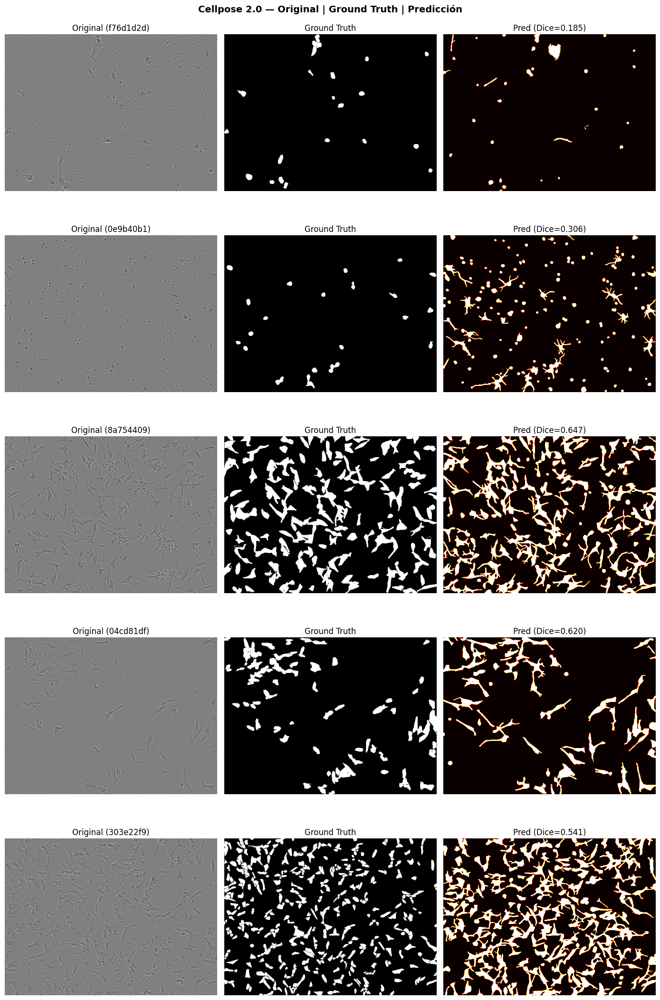
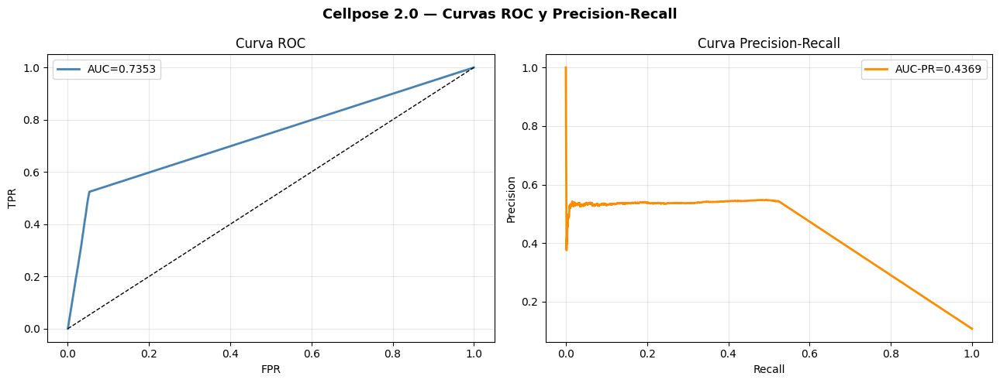
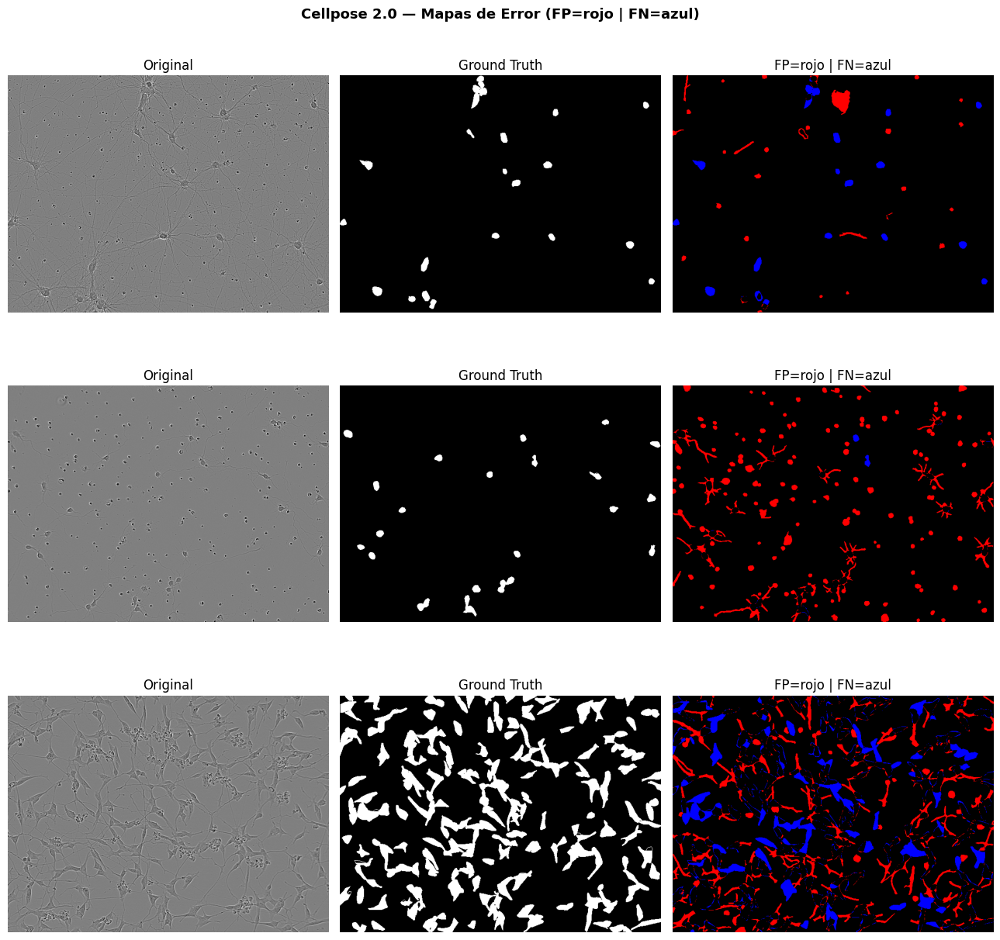
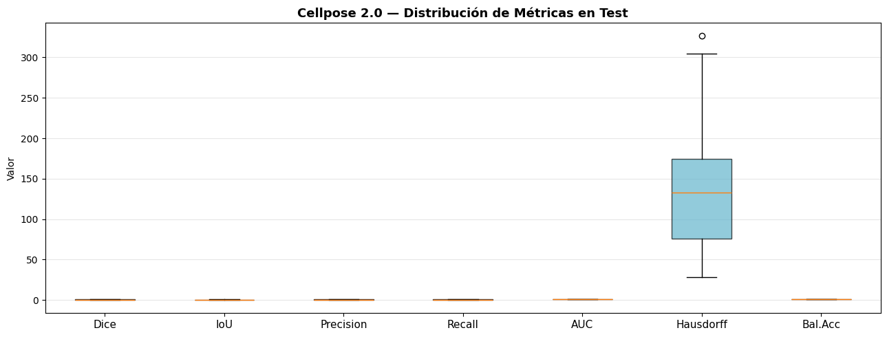
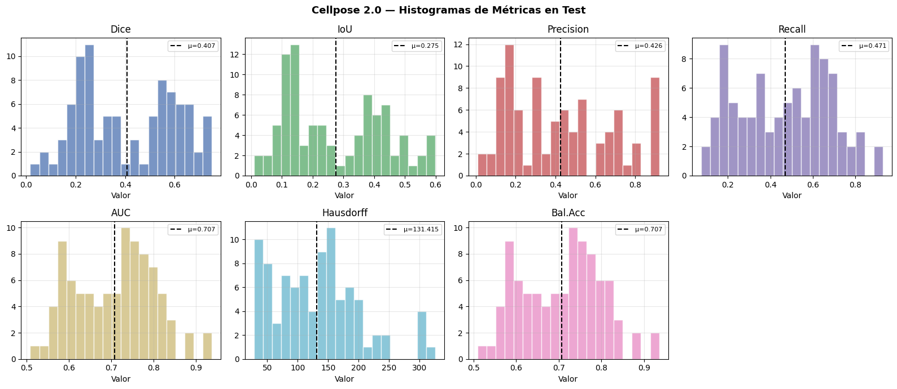
✅ Sección 2 — Cellpose 2.0 completa
Diámetro mediano usado: 16px
Mejor config: lr=0.01 | opt=adam | epochs=100 | bs=2
Test Dice: 0.4067 ± 0.1947
Test IoU: 0.2747 ± 0.1597
# Diagnóstico SAM/MedSAM
import subprocess, sys
# Verificar instalaciones
pkgs = ['segment_anything', 'MedSAM', 'mobile_sam']
for pkg in pkgs:
try:
mod = __import__(pkg)
print(f"✅ {pkg} instalado")
if hasattr(mod, '__version__'):
print(f" versión: {mod.__version__}")
except ImportError:
print(f"❌ {pkg} NO instalado")
# Verificar VRAM disponible
import torch
print(f"\nVRAM allocated: {torch.cuda.memory_allocated()/1e9:.2f} GB")
print(f"VRAM reserved: {torch.cuda.memory_reserved()/1e9:.2f} GB")
# Verificar si hay checkpoints de SAM descargados
import os
ckpt_dir = r'C:\Users\migue\Downloads\sartorius_checkpoints'
sam_files = [f for f in os.listdir(ckpt_dir) if 'sam' in f.lower() or 'medsam' in f.lower() or 'vit' in f.lower()]
print(f"\nCheckpoints SAM en {ckpt_dir}:")
if sam_files:
for f in sam_files:
size_mb = os.path.getsize(os.path.join(ckpt_dir, f)) / 1e6
print(f" {f} ({size_mb:.0f} MB)")
else:
print(" Ninguno encontrado")
✅ segment_anything instalado
❌ MedSAM NO instalado
❌ mobile_sam NO instalado
VRAM allocated: 0.02 GB
VRAM reserved: 0.04 GB
Checkpoints SAM en C:\Users\migue\Downloads\sartorius_checkpoints:
Ninguno encontrado
import urllib.request, os
ckpt_url = "https://dl.fbaipublicfiles.com/segment_anything/sam_vit_b_01ec64.pth"
ckpt_path = os.path.join(CKPT_DIR, "sam_vit_b_01ec64.pth")
if not os.path.exists(ckpt_path):
print("Descargando SAM vit_b (~375MB)...")
urllib.request.urlretrieve(ckpt_url, ckpt_path)
size_mb = os.path.getsize(ckpt_path) / 1e6
print(f"✅ Descargado: {ckpt_path} ({size_mb:.0f} MB)")
else:
print(f"✅ Checkpoint ya existe: {ckpt_path}")
Descargando SAM vit_b (~375MB)...
✅ Descargado: C:\Users\migue\Downloads\sartorius_checkpoints\sam_vit_b_01ec64.pth (375 MB)
from segment_anything import sam_model_registry, SamPredictor, SamAutomaticMaskGenerator
import inspect
print("Modelos disponibles:", list(sam_model_registry.keys()))
print("\nSamPredictor methods:")
print([m for m in dir(SamPredictor) if not m.startswith('_')])
print("\nSamAutomaticMaskGenerator signature:")
print(inspect.signature(SamAutomaticMaskGenerator.__init__))
Modelos disponibles: ['default', 'vit_h', 'vit_l', 'vit_b']
SamPredictor methods:
['device', 'get_image_embedding', 'predict', 'predict_torch', 'reset_image', 'set_image', 'set_torch_image']
SamAutomaticMaskGenerator signature:
(self, model: segment_anything.modeling.sam.Sam, points_per_side: Optional[int] = 32, points_per_batch: int = 64, pred_iou_thresh: float = 0.88, stability_score_thresh: float = 0.95, stability_score_offset: float = 1.0, box_nms_thresh: float = 0.7, crop_n_layers: int = 0, crop_nms_thresh: float = 0.7, crop_overlap_ratio: float = 0.3413333333333333, crop_n_points_downscale_factor: int = 1, point_grids: Optional[List[numpy.ndarray]] = None, min_mask_region_area: int = 0, output_mode: str = 'binary_mask') -> None
from segment_anything import sam_model_registry
import torch
sam = sam_model_registry['vit_b'](checkpoint=os.path.join(CKPT_DIR, 'sam_vit_b_01ec64.pth'))
# Ver componentes
print("=== COMPONENTES DE SAM ===\n")
for name, module in sam.named_children():
params = sum(p.numel() for p in module.parameters())
trainable = sum(p.numel() for p in module.parameters() if p.requires_grad)
print(f" {name:25s} → {params:>12,} params")
# Congelar encoder, dejar decoder y prompt encoder entrenables
for param in sam.image_encoder.parameters():
param.requires_grad = False
trainable = sum(p.numel() for p in sam.parameters() if p.requires_grad)
total = sum(p.numel() for p in sam.parameters())
print(f"\nDespués de congelar encoder:")
print(f" Total: {total:,}")
print(f" Trainable: {trainable:,}")
print(f" Frozen: {total - trainable:,}")
# VRAM estimada
print(f"\nVRAM actual: {torch.cuda.memory_allocated()/1e9:.2f} GB")
del sam
torch.cuda.empty_cache()
=== COMPONENTES DE SAM ===
image_encoder → 89,670,912 params
prompt_encoder → 6,220 params
mask_decoder → 4,058,340 params
Después de congelar encoder:
Total: 93,735,472
Trainable: 4,064,560
Frozen: 89,670,912
VRAM actual: 0.02 GB
# ═══════════════════════════════════════════════════════════════════
# SECCIÓN 3 — SAM (Fine-tuning del Mask Decoder)
# Encoder congelado (89.7M params) | Decoder entrenable (4.06M params)
# Hiperparámetros: learning_rate, batch_size, epochs, optimizer
# ═══════════════════════════════════════════════════════════════════
import os, time, gc, warnings
import numpy as np
import matplotlib.pyplot as plt
from PIL import Image
from sklearn.metrics import (roc_curve, precision_recall_curve, auc as sk_auc,
balanced_accuracy_score, roc_auc_score)
from scipy.spatial.distance import directed_hausdorff
import torch
import torch.nn as nn
import torch.nn.functional as F
from torch.utils.data import Dataset, DataLoader
from segment_anything import sam_model_registry
from segment_anything.utils.transforms import ResizeLongestSide
warnings.filterwarnings('ignore')
# ───────────────────────────────────────────────────────────────────
# 3.1 DATASET PARA FINE-TUNING DE SAM
# ───────────────────────────────────────────────────────────────────
class SAMFineTuneDataset(Dataset):
"""Dataset que preprocesa imágenes al formato esperado por SAM."""
def __init__(self, img_ids, df, train_dir, img_size=1024):
self.img_ids = img_ids
self.df = df
self.train_dir = train_dir
self.transform = ResizeLongestSide(img_size)
self.img_size = img_size
def __len__(self):
return len(self.img_ids)
def __getitem__(self, idx):
img_id = self.img_ids[idx]
# Imagen
img = np.array(Image.open(
os.path.join(self.train_dir, img_id + '.png')).convert('RGB'))
original_size = img.shape[:2]
# Máscara binaria
rows = self.df[self.df['id'] == img_id]
h0, w0 = rows.iloc[0]['height'], rows.iloc[0]['width']
mask = np.zeros((h0, w0), dtype=np.float32)
for _, row in rows.iterrows():
m = rle_decode(row['annotation'], h0, w0)
mask[m == 1] = 1.0
# Transformar imagen al formato SAM (resize + pad a 1024x1024)
img_transformed = self.transform.apply_image(img)
img_tensor = torch.as_tensor(img_transformed).permute(2, 0, 1).float()
# Pad a 1024x1024
h, w = img_tensor.shape[-2:]
padh = self.img_size - h
padw = self.img_size - w
img_tensor = F.pad(img_tensor, (0, padw, 0, padh))
# Resize máscara a 256x256 (SAM output size)
mask_resized = np.array(Image.fromarray(mask).resize(
(256, 256), resample=Image.NEAREST))
mask_tensor = torch.as_tensor(mask_resized).float().unsqueeze(0)
return img_tensor, mask_tensor, torch.tensor(original_size), img_id
# ───────────────────────────────────────────────────────────────────
# 3.2 FUNCIONES DE ENTRENAMIENTO Y EVALUACIÓN
# ───────────────────────────────────────────────────────────────────
def train_epoch_sam(sam_model, dataloader, optimizer, device):
sam_model.mask_decoder.train()
sam_model.prompt_encoder.train()
total_loss = 0.0
n_batches = 0
for imgs, masks, sizes, _ in dataloader:
imgs = imgs.to(device)
masks = masks.to(device)
# Forward: encoder (frozen) → embeddings
with torch.no_grad():
image_embeddings = sam_model.image_encoder(imgs)
# Prompt: sin prompts explícitos (dense prediction)
sparse_embeddings, dense_embeddings = sam_model.prompt_encoder(
points=None, boxes=None, masks=None)
# Decoder
low_res_masks, iou_predictions = sam_model.mask_decoder(
image_embeddings=image_embeddings,
image_pe=sam_model.prompt_encoder.get_dense_pe(),
sparse_prompt_embeddings=sparse_embeddings,
dense_prompt_embeddings=dense_embeddings,
multimask_output=False,
)
# Loss: Dice + BCE
pred = torch.sigmoid(low_res_masks)
# Dice loss
smooth = 1e-6
inter = (pred * masks).sum(dim=(-2,-1))
dice_loss = 1 - (2.*inter + smooth) / (pred.sum(dim=(-2,-1)) + masks.sum(dim=(-2,-1)) + smooth)
# BCE loss
bce_loss = F.binary_cross_entropy_with_logits(low_res_masks, masks)
loss = dice_loss.mean() + bce_loss
optimizer.zero_grad()
loss.backward()
optimizer.step()
total_loss += loss.item()
n_batches += 1
return total_loss / max(n_batches, 1)
def val_epoch_sam(sam_model, dataloader, device):
sam_model.eval()
total_loss = 0.0
dice_scores = []
n_batches = 0
with torch.no_grad():
for imgs, masks, sizes, _ in dataloader:
imgs = imgs.to(device)
masks = masks.to(device)
image_embeddings = sam_model.image_encoder(imgs)
sparse_embeddings, dense_embeddings = sam_model.prompt_encoder(
points=None, boxes=None, masks=None)
low_res_masks, _ = sam_model.mask_decoder(
image_embeddings=image_embeddings,
image_pe=sam_model.prompt_encoder.get_dense_pe(),
sparse_prompt_embeddings=sparse_embeddings,
dense_prompt_embeddings=dense_embeddings,
multimask_output=False,
)
pred = torch.sigmoid(low_res_masks)
# Dice
smooth = 1e-6
inter = (pred * masks).sum(dim=(-2,-1))
dice = (2.*inter + smooth) / (pred.sum(dim=(-2,-1)) + masks.sum(dim=(-2,-1)) + smooth)
dice_val = dice.squeeze()
if dice_val.dim() == 0:
dice_scores.append(dice_val.item())
else:
dice_scores.extend(dice_val.cpu().tolist())
# Loss
bce = F.binary_cross_entropy_with_logits(low_res_masks, masks)
d_loss = (1 - dice).mean()
total_loss += (d_loss + bce).item()
n_batches += 1
avg_dice = np.mean(dice_scores)
avg_loss = total_loss / max(n_batches, 1)
return avg_loss, avg_dice
def compute_metrics_sam(pred_mask, gt_mask, smooth=1e-6):
pb = (pred_mask > 0).astype(np.float32).flatten()
gb = (gt_mask > 0).astype(np.float32).flatten()
pp = pred_mask.astype(np.float32).flatten()
if pp.max() > 0:
pp = pp / pp.max()
inter = (pb * gb).sum()
union = pb.sum() + gb.sum() - inter
dice = (2.*inter + smooth) / (pb.sum() + gb.sum() + smooth)
iou = (inter + smooth) / (union + smooth)
prec = (inter + smooth) / (pb.sum() + smooth)
rec = (inter + smooth) / (gb.sum() + smooth)
try:
auc_val = roc_auc_score(gb.astype(int), pp)
except:
auc_val = 0.0
cp_p = np.argwhere(pb.reshape(pred_mask.shape) > 0)
cp_t = np.argwhere(gb.reshape(gt_mask.shape) > 0)
hd = (max(directed_hausdorff(cp_p, cp_t)[0],
directed_hausdorff(cp_t, cp_p)[0])
if len(cp_p) > 0 and len(cp_t) > 0 else 0.0)
bal = balanced_accuracy_score(gb.astype(int), pb.astype(int))
return {'dice': dice, 'iou': iou, 'precision': prec, 'recall': rec,
'auc': auc_val, 'hausdorff': hd, 'bal_acc': bal}
# ───────────────────────────────────────────────────────────────────
# 3.3 CREAR DATALOADERS
# ───────────────────────────────────────────────────────────────────
print("Creando datasets para SAM fine-tuning...")
ds_train_sam = SAMFineTuneDataset(train_ids, df_raw, TRAIN_DIR)
ds_val_sam = SAMFineTuneDataset(val_ids, df_raw, TRAIN_DIR)
ds_test_sam = SAMFineTuneDataset(test_ids, df_raw, TRAIN_DIR)
dl_val_sam = DataLoader(ds_val_sam, batch_size=2, shuffle=False, num_workers=0, pin_memory=True)
dl_test_sam = DataLoader(ds_test_sam, batch_size=2, shuffle=False, num_workers=0, pin_memory=True)
print(f"Train: {len(ds_train_sam)} | Val: {len(ds_val_sam)} | Test: {len(ds_test_sam)}")
# ───────────────────────────────────────────────────────────────────
# 3.4 GRID SEARCH — 4 hiperparámetros del enunciado
# Fase 1: lr × optimizer | Fase 2: epochs × batch_size
# ───────────────────────────────────────────────────────────────────
HP_GRID_SAM = {
'lr' : [1e-3, 1e-4, 1e-5],
'batch_size': [1, 2],
'n_epochs' : [10, 20, 30],
'optimizer' : ['adam', 'sgd'],
}
SAM_CKPT = os.path.join(CKPT_DIR, 'sam_vit_b_01ec64.pth')
# Subset para grid search
N_GS_SAM = 60
gs_train_ids_sam = train_ids[:N_GS_SAM]
ds_gs_sam = SAMFineTuneDataset(gs_train_ids_sam, df_raw, TRAIN_DIR)
def run_sam_config(lr_val, ep_val, opt_name, bs_val):
"""Entrena una config de SAM y retorna Dice en val."""
# Modelo fresco
_sam = sam_model_registry['vit_b'](checkpoint=SAM_CKPT).to(DEVICE)
for p in _sam.image_encoder.parameters():
p.requires_grad = False
# Optimizer
train_params = list(_sam.mask_decoder.parameters()) + list(_sam.prompt_encoder.parameters())
if opt_name == 'adam':
_opt = torch.optim.Adam(train_params, lr=lr_val, weight_decay=1e-4)
else:
_opt = torch.optim.SGD(train_params, lr=lr_val, momentum=0.9, weight_decay=1e-4)
_dl = DataLoader(ds_gs_sam, batch_size=bs_val, shuffle=True, num_workers=0, pin_memory=True)
# Entrenar
for ep in range(ep_val):
_sam.mask_decoder.train()
_sam.prompt_encoder.train()
for imgs, masks, sizes, _ in _dl:
imgs = imgs.to(DEVICE)
masks = masks.to(DEVICE)
with torch.no_grad():
emb = _sam.image_encoder(imgs)
sparse, dense = _sam.prompt_encoder(points=None, boxes=None, masks=None)
low_res, _ = _sam.mask_decoder(
image_embeddings=emb,
image_pe=_sam.prompt_encoder.get_dense_pe(),
sparse_prompt_embeddings=sparse,
dense_prompt_embeddings=dense,
multimask_output=False)
pred = torch.sigmoid(low_res)
smooth = 1e-6
inter = (pred * masks).sum(dim=(-2,-1))
dice_loss = 1 - (2.*inter + smooth)/(pred.sum(dim=(-2,-1)) + masks.sum(dim=(-2,-1)) + smooth)
bce = F.binary_cross_entropy_with_logits(low_res, masks)
loss = dice_loss.mean() + bce
_opt.zero_grad()
loss.backward()
_opt.step()
# Evaluar en val
_, dice = val_epoch_sam(_sam, dl_val_sam, DEVICE)
del _sam, _opt
torch.cuda.empty_cache(); gc.collect()
return dice
print("\n" + "=" * 68)
print(" GRID SEARCH — SAM (Fine-tuning Mask Decoder)")
print(f" lr={HP_GRID_SAM['lr']}, bs={HP_GRID_SAM['batch_size']},")
print(f" epochs={HP_GRID_SAM['n_epochs']}, optimizer={HP_GRID_SAM['optimizer']}")
print(f" Decoder params: 4,064,560 trainable")
print("=" * 68)
# ── Fase 1: lr × optimizer (epochs=10, bs=2) ───────────────────────
print("\n— Fase 1: learning_rate × optimizer —")
phase1_sam = []
t0_p1 = time.time()
for lr_val in HP_GRID_SAM['lr']:
for opt_name in HP_GRID_SAM['optimizer']:
dice = run_sam_config(lr_val, 10, opt_name, 2)
cfg = f"lr={lr_val} | opt={opt_name}"
phase1_sam.append({'lr': lr_val, 'optimizer': opt_name,
'dice': dice, 'config': cfg})
print(f" {cfg:25s} → Dice val: {dice:.4f}")
best_p1_sam = max(phase1_sam, key=lambda x: x['dice'])
print(f"\n ✅ Ganador Fase 1: {best_p1_sam['config']} (Dice {best_p1_sam['dice']:.4f})")
print(f" Tiempo Fase 1: {(time.time()-t0_p1)/60:.1f} min")
# ── Fase 2: epochs × batch_size ────────────────────────────────────
print("\n— Fase 2: epochs × batch_size —")
phase2_sam = []
t0_p2 = time.time()
for ep_val in HP_GRID_SAM['n_epochs']:
for bs_val in HP_GRID_SAM['batch_size']:
dice = run_sam_config(best_p1_sam['lr'], ep_val, best_p1_sam['optimizer'], bs_val)
cfg = f"epochs={ep_val} | bs={bs_val}"
phase2_sam.append({
'lr': best_p1_sam['lr'], 'optimizer': best_p1_sam['optimizer'],
'n_epochs': ep_val, 'batch_size': bs_val,
'dice': dice, 'config': cfg
})
print(f" {cfg:25s} → Dice val: {dice:.4f}")
best_p2_sam = max(phase2_sam, key=lambda x: x['dice'])
best_sam = {
'lr' : best_p1_sam['lr'],
'optimizer' : best_p1_sam['optimizer'],
'n_epochs' : best_p2_sam['n_epochs'],
'batch_size': best_p2_sam['batch_size'],
'dice' : best_p2_sam['dice'],
'config' : f"lr={best_p1_sam['lr']} | opt={best_p1_sam['optimizer']} | "
f"epochs={best_p2_sam['n_epochs']} | bs={best_p2_sam['batch_size']}",
}
print(f" Tiempo Fase 2: {(time.time()-t0_p2)/60:.1f} min")
print("\n" + "=" * 68)
print(f" ✅ MEJOR CONFIG: {best_sam['config']}")
print(f" Dice val: {best_sam['dice']:.4f}")
print("=" * 68)
# ───────────────────────────────────────────────────────────────────
# 3.5 ENTRENAMIENTO COMPLETO CON MEJORES HIPERPARÁMETROS
# ───────────────────────────────────────────────────────────────────
print(f"\nEntrenando SAM completo ({len(ds_train_sam)} imágenes)...")
t0_train = time.time()
sam_final = sam_model_registry['vit_b'](checkpoint=SAM_CKPT).to(DEVICE)
for p in sam_final.image_encoder.parameters():
p.requires_grad = False
train_params = list(sam_final.mask_decoder.parameters()) + list(sam_final.prompt_encoder.parameters())
if best_sam['optimizer'] == 'adam':
optimizer_sam = torch.optim.Adam(train_params, lr=best_sam['lr'], weight_decay=1e-4)
else:
optimizer_sam = torch.optim.SGD(train_params, lr=best_sam['lr'], momentum=0.9, weight_decay=1e-4)
scheduler_sam = torch.optim.lr_scheduler.ReduceLROnPlateau(
optimizer_sam, mode='min', patience=5, factor=0.5)
dl_train_sam = DataLoader(ds_train_sam, batch_size=best_sam['batch_size'],
shuffle=True, num_workers=0, pin_memory=True)
train_losses_sam, val_losses_sam, val_dice_sam = [], [], []
best_dice_sam = 0.0
for epoch in range(best_sam['n_epochs']):
t0 = time.time()
train_loss = train_epoch_sam(sam_final, dl_train_sam, optimizer_sam, DEVICE)
val_loss, val_dice = val_epoch_sam(sam_final, dl_val_sam, DEVICE)
scheduler_sam.step(val_loss)
train_losses_sam.append(train_loss)
val_losses_sam.append(val_loss)
val_dice_sam.append(val_dice)
if val_dice > best_dice_sam:
best_dice_sam = val_dice
torch.save({
'mask_decoder': sam_final.mask_decoder.state_dict(),
'prompt_encoder': sam_final.prompt_encoder.state_dict(),
}, os.path.join(CKPT_DIR, 'sam_finetuned_best.pth'))
print(f"Epoch {epoch+1:02d}/{best_sam['n_epochs']} | "
f"Train Loss: {train_loss:.4f} | Val Loss: {val_loss:.4f} | "
f"Dice: {val_dice:.4f} | Time: {time.time()-t0:.1f}s")
# Cargar mejor checkpoint
ckpt = torch.load(os.path.join(CKPT_DIR, 'sam_finetuned_best.pth'), map_location=DEVICE)
sam_final.mask_decoder.load_state_dict(ckpt['mask_decoder'])
sam_final.prompt_encoder.load_state_dict(ckpt['prompt_encoder'])
print(f"\n✅ Entrenamiento SAM completo en {(time.time()-t0_train)/60:.1f} min")
print(f"Mejor Dice val: {best_dice_sam:.4f}")
# ───────────────────────────────────────────────────────────────────
# 3.6 EVALUACIÓN EN TEST — 7 MÉTRICAS
# ───────────────────────────────────────────────────────────────────
print("\nEvaluando en test set...")
t0_eval = time.time()
sam_final.eval()
test_metrics_sam = {k: [] for k in ['dice','iou','precision','recall','auc','hausdorff','bal_acc']}
test_samples_sam = []
with torch.no_grad():
for imgs, masks_gt, sizes, ids in dl_test_sam:
imgs = imgs.to(DEVICE)
emb = sam_final.image_encoder(imgs)
sparse, dense = sam_final.prompt_encoder(points=None, boxes=None, masks=None)
low_res, _ = sam_final.mask_decoder(
image_embeddings=emb,
image_pe=sam_final.prompt_encoder.get_dense_pe(),
sparse_prompt_embeddings=sparse,
dense_prompt_embeddings=dense,
multimask_output=False)
preds = torch.sigmoid(low_res).cpu().numpy()
masks_np = masks_gt.numpy()
for j in range(preds.shape[0]):
pred_bin = (preds[j, 0] > 0.5).astype(np.float32)
gt_bin = masks_np[j, 0]
m = compute_metrics_sam(pred_bin, gt_bin)
for k, v in m.items():
test_metrics_sam[k].append(v)
if len(test_samples_sam) < 5:
# Cargar imagen original para visualización
orig_img = np.array(Image.open(
os.path.join(TRAIN_DIR, ids[j] + '.png')).convert('RGB'))
test_samples_sam.append({
'img': orig_img, 'mask': gt_bin,
'pred': pred_bin, 'id': ids[j]})
test_mean_sam = {k: np.mean(v) for k, v in test_metrics_sam.items()}
test_std_sam = {k: np.std(v) for k, v in test_metrics_sam.items()}
print(f"Evaluación completa en {(time.time()-t0_eval)/60:.1f} min")
print("\n" + "=" * 65)
print(" MÉTRICAS EN TEST — SAM (Fine-tuned)")
print("=" * 65)
for k in test_mean_sam:
print(f" {k:15s}: {test_mean_sam[k]:.4f} ± {test_std_sam[k]:.4f}")
results['sam'] = {
'metrics_mean' : test_mean_sam,
'metrics_std' : test_std_sam,
'metrics_all' : test_metrics_sam,
'best_hp' : best_sam,
'grid_phase1' : phase1_sam,
'grid_phase2' : phase2_sam,
'train_losses' : train_losses_sam,
'val_losses' : val_losses_sam,
}
# ───────────────────────────────────────────────────────────────────
# 3.7 VISUALIZACIONES OBLIGATORIAS
# ───────────────────────────────────────────────────────────────────
# ── A) Original / Ground Truth / Predicción ────────────────────────
fig, axes = plt.subplots(5, 3, figsize=(14, 22))
fig.suptitle("SAM (Fine-tuned) — Original | Ground Truth | Predicción",
fontsize=14, fontweight='bold')
for i, s in enumerate(test_samples_sam):
axes[i,0].imshow(s['img']); axes[i,0].set_title(f"Original ({s['id'][:8]})"); axes[i,0].axis('off')
axes[i,1].imshow(s['mask'], cmap='gray'); axes[i,1].set_title("Ground Truth"); axes[i,1].axis('off')
axes[i,2].imshow(s['pred'], cmap='hot')
d = compute_metrics_sam(s['pred'], s['mask'])['dice']
axes[i,2].set_title(f"Pred (Dice={d:.3f})")
axes[i,2].axis('off')
plt.tight_layout()
plt.savefig(os.path.join(CKPT_DIR, 'sam_visual_comparison.png'), dpi=150, bbox_inches='tight')
plt.show()
# ── B) Curvas ROC y Precision-Recall ──────────────────────────────
all_p, all_g = [], []
sam_final.eval()
with torch.no_grad():
for imgs, masks_gt, _, _ in dl_test_sam:
imgs = imgs.to(DEVICE)
emb = sam_final.image_encoder(imgs)
sparse, dense = sam_final.prompt_encoder(points=None, boxes=None, masks=None)
low_res, _ = sam_final.mask_decoder(
image_embeddings=emb,
image_pe=sam_final.prompt_encoder.get_dense_pe(),
sparse_prompt_embeddings=sparse,
dense_prompt_embeddings=dense,
multimask_output=False)
probs = torch.sigmoid(low_res).cpu().numpy()
for j in range(probs.shape[0]):
all_p.extend(probs[j, 0].flatten().tolist())
all_g.extend(masks_gt[j, 0].numpy().flatten().astype(int).tolist())
all_p, all_g = np.array(all_p), np.array(all_g)
fpr, tpr, _ = roc_curve(all_g, all_p)
prec_c, rec_c, _ = precision_recall_curve(all_g, all_p)
fig, axes = plt.subplots(1, 2, figsize=(13, 5))
fig.suptitle("SAM (Fine-tuned) — Curvas ROC y Precision-Recall", fontsize=13, fontweight='bold')
axes[0].plot(fpr, tpr, color='steelblue', lw=2, label=f'AUC={sk_auc(fpr, tpr):.4f}')
axes[0].plot([0,1],[0,1],'k--', lw=1); axes[0].set_xlabel('FPR'); axes[0].set_ylabel('TPR')
axes[0].set_title('Curva ROC'); axes[0].legend(); axes[0].grid(alpha=0.3)
axes[1].plot(rec_c, prec_c, color='darkorange', lw=2, label=f'AUC-PR={sk_auc(rec_c, prec_c):.4f}')
axes[1].set_xlabel('Recall'); axes[1].set_ylabel('Precision')
axes[1].set_title('Curva Precision-Recall'); axes[1].legend(); axes[1].grid(alpha=0.3)
plt.tight_layout()
plt.savefig(os.path.join(CKPT_DIR, 'sam_roc_pr.png'), dpi=150, bbox_inches='tight')
plt.show()
# ── C) Mapas de error ─────────────────────────────────────────────
fig, axes = plt.subplots(3, 3, figsize=(13, 13))
fig.suptitle("SAM (Fine-tuned) — Mapas de Error (FP=rojo | FN=azul)",
fontsize=13, fontweight='bold')
for i, s in enumerate(test_samples_sam[:3]):
pb = (s['pred'] > 0.5).astype(np.uint8)
gb = (s['mask'] > 0.5).astype(np.uint8)
err = np.zeros((*pb.shape, 3), dtype=np.uint8)
err[(pb==1)&(gb==0)] = [255,0,0]
err[(pb==0)&(gb==1)] = [0,0,255]
# Resize imagen para que coincida con máscara 256x256
img_resized = np.array(Image.fromarray(s['img']).resize((256, 256)))
axes[i,0].imshow(img_resized); axes[i,0].set_title("Original"); axes[i,0].axis('off')
axes[i,1].imshow(gb, cmap='gray'); axes[i,1].set_title("Ground Truth"); axes[i,1].axis('off')
axes[i,2].imshow(err); axes[i,2].set_title("FP=rojo | FN=azul"); axes[i,2].axis('off')
plt.tight_layout()
plt.savefig(os.path.join(CKPT_DIR, 'sam_error_maps.png'), dpi=150, bbox_inches='tight')
plt.show()
# ── D) Boxplots ────────────────────────────────────────────────────
metric_names = ['dice','iou','precision','recall','auc','hausdorff','bal_acc']
labels = ['Dice','IoU','Precision','Recall','AUC','Hausdorff','Bal.Acc']
colors = ['#4C72B0','#55A868','#C44E52','#8172B2','#CCB974','#64B5CD','#E78AC3']
fig, ax = plt.subplots(figsize=(13, 5))
bp = ax.boxplot([test_metrics_sam[k] for k in metric_names], patch_artist=True)
for patch, color in zip(bp['boxes'], colors):
patch.set_facecolor(color); patch.set_alpha(0.7)
ax.set_xticklabels(labels, fontsize=11)
ax.set_title("SAM (Fine-tuned) — Distribución de Métricas en Test", fontsize=13, fontweight='bold')
ax.set_ylabel("Valor"); ax.grid(axis='y', alpha=0.3)
plt.tight_layout()
plt.savefig(os.path.join(CKPT_DIR, 'sam_boxplots.png'), dpi=150, bbox_inches='tight')
plt.show()
# ── E) Histogramas ─────────────────────────────────────────────────
fig, axes = plt.subplots(2, 4, figsize=(16, 7))
fig.suptitle("SAM (Fine-tuned) — Histogramas de Métricas en Test", fontsize=13, fontweight='bold')
axes = axes.flatten()
for i, (k, label) in enumerate(zip(metric_names, labels)):
axes[i].hist(test_metrics_sam[k], bins=20, color=colors[i], alpha=0.75, edgecolor='white')
axes[i].axvline(np.mean(test_metrics_sam[k]), color='black', linestyle='--', lw=1.5,
label=f'μ={np.mean(test_metrics_sam[k]):.3f}')
axes[i].set_title(label); axes[i].set_xlabel("Valor"); axes[i].legend(fontsize=8); axes[i].grid(alpha=0.3)
axes[-1].axis('off')
plt.tight_layout()
plt.savefig(os.path.join(CKPT_DIR, 'sam_histogramas.png'), dpi=150, bbox_inches='tight')
plt.show()
# ── F) Curvas de entrenamiento ─────────────────────────────────────
fig, axes = plt.subplots(1, 2, figsize=(13, 4))
fig.suptitle("SAM (Fine-tuned) — Curvas de Entrenamiento", fontsize=13, fontweight='bold')
axes[0].plot(train_losses_sam, label='Train Loss', color='steelblue')
axes[0].plot(val_losses_sam, label='Val Loss', color='darkorange')
axes[0].set_xlabel('Epoch'); axes[0].set_ylabel('Loss')
axes[0].set_title('Loss'); axes[0].legend(); axes[0].grid(alpha=0.3)
axes[1].plot(val_dice_sam, label='Val Dice', color='green')
axes[1].set_xlabel('Epoch'); axes[1].set_ylabel('Dice')
axes[1].set_title('Dice en validación'); axes[1].legend(); axes[1].grid(alpha=0.3)
plt.tight_layout()
plt.savefig(os.path.join(CKPT_DIR, 'sam_training_curves.png'), dpi=150, bbox_inches='tight')
plt.show()
# Liberar VRAM
del sam_final, optimizer_sam
torch.cuda.empty_cache(); gc.collect()
print("\n✅ Sección 3 — SAM (Fine-tuned) completa")
print(f" Mejor config: {best_sam['config']}")
print(f" Test Dice: {test_mean_sam['dice']:.4f} ± {test_std_sam['dice']:.4f}")
print(f" Test IoU: {test_mean_sam['iou']:.4f} ± {test_std_sam['iou']:.4f}")
Creando datasets para SAM fine-tuning...
Train: 424 | Val: 91 | Test: 91
====================================================================
GRID SEARCH — SAM (Fine-tuning Mask Decoder)
lr=[0.001, 0.0001, 1e-05], bs=[1, 2],
epochs=[10, 20, 30], optimizer=['adam', 'sgd']
Decoder params: 4,064,560 trainable
====================================================================
— Fase 1: learning_rate × optimizer —
lr=0.001 | opt=adam → Dice val: 0.0900
lr=0.001 | opt=sgd → Dice val: 0.1044
lr=0.0001 | opt=adam → Dice val: 0.0880
lr=0.0001 | opt=sgd → Dice val: 0.0979
lr=1e-05 | opt=adam → Dice val: 0.1060
lr=1e-05 | opt=sgd → Dice val: 0.0931
✅ Ganador Fase 1: lr=1e-05 | opt=adam (Dice 0.1060)
Tiempo Fase 1: 42.3 min
— Fase 2: epochs × batch_size —
epochs=10 | bs=1 → Dice val: 0.0896
epochs=10 | bs=2 → Dice val: 0.0660
epochs=20 | bs=1 → Dice val: 0.1047
epochs=20 | bs=2 → Dice val: 0.1121
epochs=30 | bs=1 → Dice val: 0.1069
epochs=30 | bs=2 → Dice val: 0.0832
Tiempo Fase 2: 67.0 min
====================================================================
✅ MEJOR CONFIG: lr=1e-05 | opt=adam | epochs=20 | bs=2
Dice val: 0.1121
====================================================================
Entrenando SAM completo (424 imágenes)...
Epoch 01/20 | Train Loss: 1.2758 | Val Loss: 1.2488 | Dice: 0.1040 | Time: 334.9s
Epoch 02/20 | Train Loss: 1.2464 | Val Loss: 1.2451 | Dice: 0.1016 | Time: 334.2s
Epoch 03/20 | Train Loss: 1.2433 | Val Loss: 1.2498 | Dice: 0.0981 | Time: 333.7s
Epoch 04/20 | Train Loss: 1.2438 | Val Loss: 1.2436 | Dice: 0.0952 | Time: 334.0s
Epoch 05/20 | Train Loss: 1.2413 | Val Loss: 1.2499 | Dice: 0.1088 | Time: 424.3s
Epoch 06/20 | Train Loss: 1.2419 | Val Loss: 1.2429 | Dice: 0.1001 | Time: 359.9s
Epoch 07/20 | Train Loss: 1.2400 | Val Loss: 1.2417 | Dice: 0.0963 | Time: 360.2s
Epoch 08/20 | Train Loss: 1.2360 | Val Loss: 1.2441 | Dice: 0.0881 | Time: 374.0s
Epoch 09/20 | Train Loss: 1.2373 | Val Loss: 1.2418 | Dice: 0.1035 | Time: 383.3s
Epoch 10/20 | Train Loss: 1.2321 | Val Loss: 1.2419 | Dice: 0.1126 | Time: 383.0s
Epoch 11/20 | Train Loss: 1.2255 | Val Loss: 1.2435 | Dice: 0.0822 | Time: 384.5s
Epoch 12/20 | Train Loss: 1.2164 | Val Loss: 1.2102 | Dice: 0.1080 | Time: 381.8s
Epoch 13/20 | Train Loss: 1.2042 | Val Loss: 1.2157 | Dice: 0.1186 | Time: 371.2s
Epoch 14/20 | Train Loss: 1.1994 | Val Loss: 1.2251 | Dice: 0.1223 | Time: 383.6s
Epoch 15/20 | Train Loss: 1.1884 | Val Loss: 1.2001 | Dice: 0.1148 | Time: 390.0s
Epoch 16/20 | Train Loss: 1.1927 | Val Loss: 1.1973 | Dice: 0.1106 | Time: 397.8s
Epoch 17/20 | Train Loss: 1.1874 | Val Loss: 1.2072 | Dice: 0.1086 | Time: 378.8s
Epoch 18/20 | Train Loss: 1.1826 | Val Loss: 1.2133 | Dice: 0.1083 | Time: 378.1s
Epoch 19/20 | Train Loss: 1.1760 | Val Loss: 1.1984 | Dice: 0.1155 | Time: 376.6s
Epoch 20/20 | Train Loss: 1.1733 | Val Loss: 1.1919 | Dice: 0.1240 | Time: 381.9s
✅ Entrenamiento SAM completo en 124.1 min
Mejor Dice val: 0.1240
Evaluando en test set...
Evaluación completa en 1.1 min
=================================================================
MÉTRICAS EN TEST — SAM (Fine-tuned)
=================================================================
dice : 0.0236 ± 0.0255
iou : 0.0121 ± 0.0134
precision : 0.2132 ± 0.1631
recall : 0.0135 ± 0.0158
auc : 0.5041 ± 0.0055
hausdorff : 143.0001 ± 47.2064
bal_acc : 0.5041 ± 0.0055
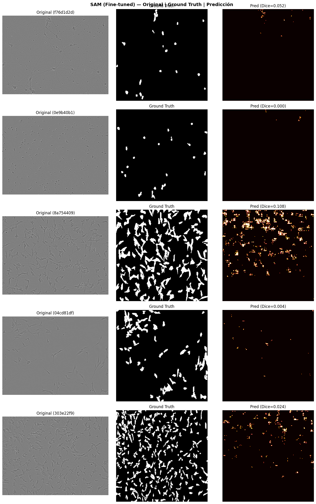
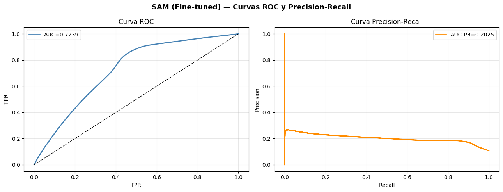
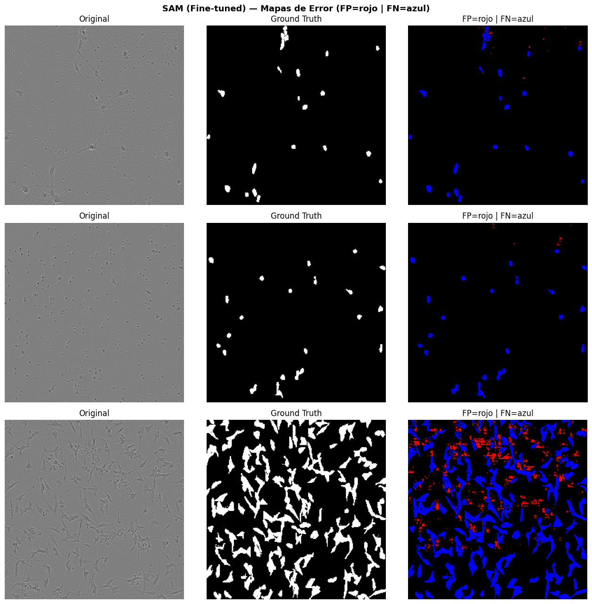
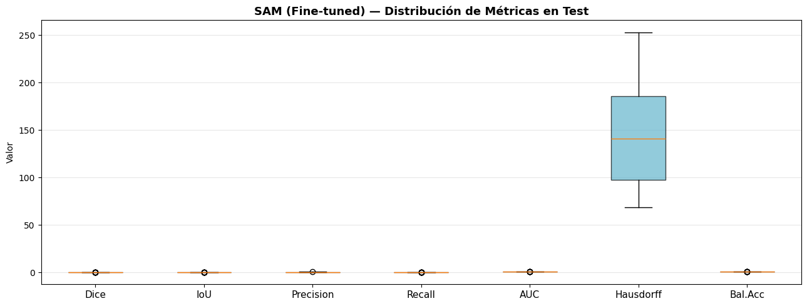
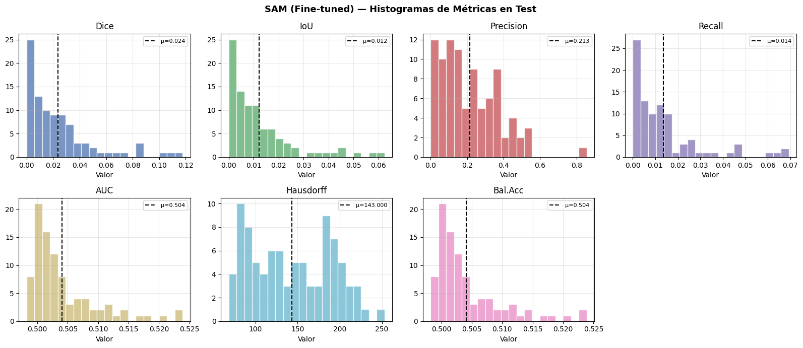
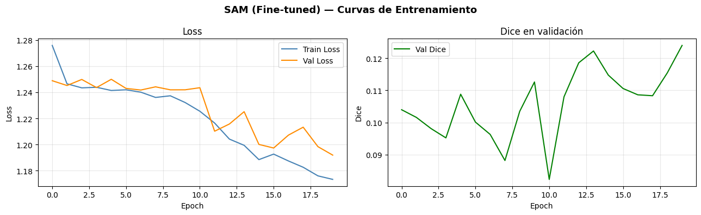
✅ Sección 3 — SAM (Fine-tuned) completa
Mejor config: lr=1e-05 | opt=adam | epochs=20 | bs=2
Test Dice: 0.0236 ± 0.0255
Test IoU: 0.0121 ± 0.0134
# ═══════════════════════════════════════════════════════════════════
# SECCIÓN 4 — HoverNet (desde cero, sin checkpoint preentrenado)
# Branches: NP (Nuclear Pixel) + HV (Horizontal-Vertical maps)
# Hiperparámetros: learning_rate, batch_size, epochs, optimizer
# ═══════════════════════════════════════════════════════════════════
import os, time, gc, warnings
import numpy as np
import matplotlib.pyplot as plt
from PIL import Image
from sklearn.metrics import (roc_auc_score, balanced_accuracy_score,
roc_curve, precision_recall_curve, auc as sk_auc)
from scipy.spatial.distance import directed_hausdorff
import torch
import torch.nn as nn
import torch.nn.functional as F
from torch.utils.data import Dataset, DataLoader
warnings.filterwarnings('ignore')
# ── Bloques base ────────────────────────────────────────────────────
class ConvBnRelu(nn.Module):
def __init__(self, in_ch, out_ch, k=3, p=1):
super().__init__()
self.block = nn.Sequential(
nn.Conv2d(in_ch, out_ch, k, padding=p, bias=False),
nn.BatchNorm2d(out_ch),
nn.ReLU(inplace=True),
nn.Conv2d(out_ch, out_ch, k, padding=p, bias=False),
nn.BatchNorm2d(out_ch),
nn.ReLU(inplace=True),
)
def forward(self, x): return self.block(x)
class DenseBlock(nn.Module):
"""Bloque denso simplificado para el decoder de HoverNet."""
def __init__(self, in_ch, out_ch):
super().__init__()
self.conv1 = nn.Sequential(
nn.Conv2d(in_ch, out_ch, 1, bias=False),
nn.BatchNorm2d(out_ch), nn.ReLU(inplace=True))
self.conv2 = nn.Sequential(
nn.Conv2d(out_ch, out_ch, 3, padding=1, bias=False),
nn.BatchNorm2d(out_ch), nn.ReLU(inplace=True))
self.skip = nn.Conv2d(in_ch, out_ch, 1, bias=False) if in_ch != out_ch else nn.Identity()
def forward(self, x):
return self.conv2(self.conv1(x)) + self.skip(x)
# ── Encoder (ResNet-like desde cero) ────────────────────────────────
class HoverNetEncoder(nn.Module):
def __init__(self):
super().__init__()
self.enc1 = ConvBnRelu(3, 64) # 256x256 → 256x256
self.enc2 = ConvBnRelu(64, 128) # 128x128
self.enc3 = ConvBnRelu(128, 256) # 64x64
self.enc4 = ConvBnRelu(256, 512) # 32x32
self.pool = nn.MaxPool2d(2, 2)
def forward(self, x):
e1 = self.enc1(x)
e2 = self.enc2(self.pool(e1))
e3 = self.enc3(self.pool(e2))
e4 = self.enc4(self.pool(e3))
return e1, e2, e3, e4
# ── Decoder branch compartido ───────────────────────────────────────
class HoverNetDecoder(nn.Module):
def __init__(self):
super().__init__()
self.up3 = nn.ConvTranspose2d(512, 256, 2, stride=2)
self.db3 = DenseBlock(512, 256)
self.up2 = nn.ConvTranspose2d(256, 128, 2, stride=2)
self.db2 = DenseBlock(256, 128)
self.up1 = nn.ConvTranspose2d(128, 64, 2, stride=2)
self.db1 = DenseBlock(128, 64)
def forward(self, e1, e2, e3, e4):
d3 = self.db3(torch.cat([self.up3(e4), e3], dim=1))
d2 = self.db2(torch.cat([self.up2(d3), e2], dim=1))
d1 = self.db1(torch.cat([self.up1(d2), e1], dim=1))
return d1 # (B, 64, H, W)
# ── HoverNet completo ────────────────────────────────────────────────
class HoverNet(nn.Module):
"""
Branch NP: segmentación binaria núcleo/fondo.
Branch HV: mapas horizontal y vertical (regression).
"""
def __init__(self):
super().__init__()
self.encoder = HoverNetEncoder()
self.decoder = HoverNetDecoder()
# Branch NP (Nuclear Pixel)
self.np_head = nn.Sequential(
DenseBlock(64, 32),
nn.Conv2d(32, 2, 1)) # 2 clases: fondo / núcleo
# Branch HV (regresión continua)
self.hv_head = nn.Sequential(
DenseBlock(64, 32),
nn.Conv2d(32, 2, 1)) # 2 canales: H y V
def forward(self, x):
e1, e2, e3, e4 = self.encoder(x)
feat = self.decoder(e1, e2, e3, e4)
np_out = self.np_head(feat) # logits 2 clases
hv_out = self.hv_head(feat) # H, V continuos
return np_out, hv_out
# ───────────────────────────────────────────────────────────────────
# 4.2 DATASET
# ───────────────────────────────────────────────────────────────────
class HoverNetDataset(Dataset):
"""Produce imagen RGB + máscara binaria + HV maps sintéticos."""
def __init__(self, img_ids, df, train_dir, img_size=256, augment=False):
self.img_ids = img_ids
self.df = df
self.train_dir = train_dir
self.img_size = img_size
self.augment = augment
def __len__(self): return len(self.img_ids)
def _make_hv(self, mask):
"""Genera HV maps a partir de la máscara binaria."""
h, w = mask.shape
yy = np.linspace(-1, 1, h)[:, None] * mask
xx = np.linspace(-1, 1, w)[None, :] * mask
return np.stack([yy, xx], axis=0).astype(np.float32) # (2, H, W)
def __getitem__(self, idx):
img_id = self.img_ids[idx]
img = np.array(Image.open(
os.path.join(self.train_dir, img_id + '.png')
).convert('RGB').resize((self.img_size, self.img_size)))
rows = self.df[self.df['id'] == img_id]
h0, w0 = rows.iloc[0]['height'], rows.iloc[0]['width']
mask = np.zeros((h0, w0), dtype=np.float32)
for _, row in rows.iterrows():
m = rle_decode(row['annotation'], h0, w0)
mask[m == 1] = 1.0
mask = np.array(Image.fromarray(mask).resize(
(self.img_size, self.img_size), resample=Image.NEAREST))
# Augmentation
if self.augment and np.random.rand() > 0.5:
img = img[:, ::-1].copy()
mask = mask[:, ::-1].copy()
if self.augment and np.random.rand() > 0.5:
img = img[::-1].copy()
mask = mask[::-1].copy()
img_t = torch.from_numpy(img.transpose(2,0,1)).float() / 255.0
mask_t = torch.from_numpy(mask).long() # para NP branch (CE)
hv_t = torch.from_numpy(self._make_hv(mask)) # (2, H, W) float
return img_t, mask_t, hv_t
print("Creando datasets para HoverNet...")
ds_train_hv = HoverNetDataset(train_ids, df_raw, TRAIN_DIR, augment=True)
ds_val_hv = HoverNetDataset(val_ids, df_raw, TRAIN_DIR)
ds_test_hv = HoverNetDataset(test_ids, df_raw, TRAIN_DIR)
print(f"Train: {len(ds_train_hv)} | Val: {len(ds_val_hv)} | Test: {len(ds_test_hv)}")
Creando datasets para HoverNet...
Train: 424 | Val: 91 | Test: 91
# ───────────────────────────────────────────────────────────────────
# 4.3 LOSS + TRAIN / VAL EPOCH
# ───────────────────────────────────────────────────────────────────
def mse_loss_hv(pred_hv, gt_hv, np_mask):
"""MSE solo dentro de los núcleos (donde np_mask == 1)."""
focus = (np_mask == 1).unsqueeze(1).float()
return F.mse_loss(pred_hv * focus, gt_hv * focus)
def hovernet_loss(np_out, hv_out, np_gt, hv_gt, w_hv=1.0):
loss_np = F.cross_entropy(np_out, np_gt)
loss_hv = mse_loss_hv(hv_out, hv_gt, np_gt)
return loss_np + w_hv * loss_hv
def dice_from_logits(np_out, np_gt, smooth=1e-6):
pred = torch.argmax(nn.functional.softmax(np_out, dim=1), dim=1).float()
gt = np_gt.float()
inter = (pred * gt).sum()
return (2.*inter + smooth) / (pred.sum() + gt.sum() + smooth)
def train_epoch_hv(model, dl, optimizer, device):
model.train()
total_loss = 0.0
for imgs, masks, hv in dl:
imgs, masks, hv = imgs.to(device), masks.to(device), hv.to(device)
np_out, hv_out = model(imgs)
loss = hovernet_loss(np_out, hv_out, masks, hv)
optimizer.zero_grad()
loss.backward()
optimizer.step()
total_loss += loss.item()
return total_loss / len(dl)
def val_epoch_hv(model, dl, device):
model.eval()
total_loss, dice_scores = 0.0, []
with torch.no_grad():
for imgs, masks, hv in dl:
imgs, masks, hv = imgs.to(device), masks.to(device), hv.to(device)
np_out, hv_out = model(imgs)
loss = hovernet_loss(np_out, hv_out, masks, hv)
total_loss += loss.item()
d = dice_from_logits(np_out, masks)
dice_scores.append(d.item())
return total_loss / len(dl), np.mean(dice_scores)
def compute_metrics_hv(pred_bin, gt_bin, smooth=1e-6):
pb = pred_bin.flatten().astype(np.float32)
gb = gt_bin.flatten().astype(np.float32)
inter = (pb * gb).sum()
dice = (2.*inter + smooth) / (pb.sum() + gb.sum() + smooth)
iou = (inter + smooth) / (pb.sum() + gb.sum() - inter + smooth)
prec = (inter + smooth) / (pb.sum() + smooth)
rec = (inter + smooth) / (gb.sum() + smooth)
try: auc_val = roc_auc_score(gb.astype(int), pb)
except: auc_val = 0.0
cp_p = np.argwhere(pred_bin > 0)
cp_t = np.argwhere(gt_bin > 0)
hd = (max(directed_hausdorff(cp_p, cp_t)[0],
directed_hausdorff(cp_t, cp_p)[0])
if len(cp_p) > 0 and len(cp_t) > 0 else 0.0)
bal = balanced_accuracy_score(gb.astype(int), pb.astype(int))
return {'dice': dice, 'iou': iou, 'precision': prec,
'recall': rec, 'auc': auc_val, 'hausdorff': hd, 'bal_acc': bal}
# ───────────────────────────────────────────────────────────────────
# 4.4 GRID SEARCH — 4 hiperparámetros del enunciado
# Fase 1: lr × optimizer | Fase 2: epochs × batch_size
# ───────────────────────────────────────────────────────────────────
HP_GRID_HV = {
'lr' : [1e-3, 1e-4, 1e-5],
'batch_size': [4, 8],
'n_epochs' : [10, 20, 30],
'optimizer' : ['adam', 'sgd'],
}
N_GS_HV = 80
gs_train_ids_hv = train_ids[:N_GS_HV]
ds_gs_hv = HoverNetDataset(gs_train_ids_hv, df_raw, TRAIN_DIR, augment=False)
def run_hv_config(lr_val, ep_val, opt_name, bs_val):
_model = HoverNet().to(DEVICE)
_dl = DataLoader(ds_gs_hv, batch_size=bs_val,
shuffle=True, num_workers=0, pin_memory=True)
_dl_v = DataLoader(ds_val_hv, batch_size=bs_val,
shuffle=False, num_workers=0, pin_memory=True)
if opt_name == 'adam':
_opt = torch.optim.Adam(_model.parameters(), lr=lr_val, weight_decay=1e-4)
else:
_opt = torch.optim.SGD(_model.parameters(), lr=lr_val,
momentum=0.9, weight_decay=1e-4)
for _ in range(ep_val):
train_epoch_hv(_model, _dl, _opt, DEVICE)
_, dice = val_epoch_hv(_model, _dl_v, DEVICE)
del _model, _opt
torch.cuda.empty_cache(); gc.collect()
return dice
print("\n" + "="*68)
print(" GRID SEARCH — HoverNet (desde cero)")
print(f" lr={HP_GRID_HV['lr']}, bs={HP_GRID_HV['batch_size']},")
print(f" epochs={HP_GRID_HV['n_epochs']}, optimizer={HP_GRID_HV['optimizer']}")
print("="*68)
# ── Fase 1: lr × optimizer (epochs=10, bs=8) ───────────────────────
print("\n— Fase 1: learning_rate × optimizer —")
phase1_hv, t0 = [], time.time()
for lr_val in HP_GRID_HV['lr']:
for opt_name in HP_GRID_HV['optimizer']:
dice = run_hv_config(lr_val, 10, opt_name, 8)
cfg = f"lr={lr_val} | opt={opt_name}"
phase1_hv.append({'lr': lr_val, 'optimizer': opt_name,
'dice': dice, 'config': cfg})
print(f" {cfg:28s} → Dice val: {dice:.4f}")
best_p1_hv = max(phase1_hv, key=lambda x: x['dice'])
print(f"\n ✅ Ganador Fase 1: {best_p1_hv['config']} (Dice {best_p1_hv['dice']:.4f})")
print(f" Tiempo Fase 1: {(time.time()-t0)/60:.1f} min")
# ── Fase 2: epochs × batch_size ────────────────────────────────────
print("\n— Fase 2: epochs × batch_size —")
phase2_hv, t0 = [], time.time()
for ep_val in HP_GRID_HV['n_epochs']:
for bs_val in HP_GRID_HV['batch_size']:
dice = run_hv_config(best_p1_hv['lr'], ep_val,
best_p1_hv['optimizer'], bs_val)
cfg = f"epochs={ep_val} | bs={bs_val}"
phase2_hv.append({
'lr': best_p1_hv['lr'], 'optimizer': best_p1_hv['optimizer'],
'n_epochs': ep_val, 'batch_size': bs_val,
'dice': dice, 'config': cfg
})
print(f" {cfg:25s} → Dice val: {dice:.4f}")
best_p2_hv = max(phase2_hv, key=lambda x: x['dice'])
best_hv = {
'lr' : best_p1_hv['lr'],
'optimizer' : best_p1_hv['optimizer'],
'n_epochs' : best_p2_hv['n_epochs'],
'batch_size': best_p2_hv['batch_size'],
'config' : (f"lr={best_p1_hv['lr']} | opt={best_p1_hv['optimizer']} | "
f"epochs={best_p2_hv['n_epochs']} | bs={best_p2_hv['batch_size']}")
}
print(f" Tiempo Fase 2: {(time.time()-t0)/60:.1f} min")
print("\n" + "="*68)
print(f" ✅ MEJOR CONFIG: {best_hv['config']}")
print("="*68)
====================================================================
GRID SEARCH — HoverNet (desde cero)
lr=[0.001, 0.0001, 1e-05], bs=[4, 8],
epochs=[10, 20, 30], optimizer=['adam', 'sgd']
====================================================================
— Fase 1: learning_rate × optimizer —
lr=0.001 | opt=adam → Dice val: 0.2303
lr=0.001 | opt=sgd → Dice val: 0.2493
lr=0.0001 | opt=adam → Dice val: 0.6482
lr=0.0001 | opt=sgd → Dice val: 0.2167
lr=1e-05 | opt=adam → Dice val: 0.3199
lr=1e-05 | opt=sgd → Dice val: 0.1801
✅ Ganador Fase 1: lr=0.0001 | opt=adam (Dice 0.6482)
Tiempo Fase 1: 7.8 min
— Fase 2: epochs × batch_size —
epochs=10 | bs=4 → Dice val: 0.6795
epochs=10 | bs=8 → Dice val: 0.5358
epochs=20 | bs=4 → Dice val: 0.7003
epochs=20 | bs=8 → Dice val: 0.6950
epochs=30 | bs=4 → Dice val: 0.6066
epochs=30 | bs=8 → Dice val: 0.7011
Tiempo Fase 2: 14.6 min
====================================================================
✅ MEJOR CONFIG: lr=0.0001 | opt=adam | epochs=30 | bs=8
====================================================================
# ───────────────────────────────────────────────────────────────────
# 4.5 ENTRENAMIENTO COMPLETO
# ───────────────────────────────────────────────────────────────────
print(f"\nEntrenando HoverNet completo ({len(ds_train_hv)} imágenes)...")
t0_train = time.time()
model_hv = HoverNet().to(DEVICE)
dl_train_hv = DataLoader(ds_train_hv, batch_size=best_hv['batch_size'],
shuffle=True, num_workers=0, pin_memory=True)
dl_val_hv_ = DataLoader(ds_val_hv, batch_size=best_hv['batch_size'],
shuffle=False, num_workers=0, pin_memory=True)
dl_test_hv_ = DataLoader(ds_test_hv, batch_size=best_hv['batch_size'],
shuffle=False, num_workers=0, pin_memory=True)
if best_hv['optimizer'] == 'adam':
opt_hv = torch.optim.Adam(model_hv.parameters(),
lr=best_hv['lr'], weight_decay=1e-4)
else:
opt_hv = torch.optim.SGD(model_hv.parameters(), lr=best_hv['lr'],
momentum=0.9, weight_decay=1e-4)
sched_hv = torch.optim.lr_scheduler.ReduceLROnPlateau(
opt_hv, mode='max', patience=5, factor=0.5)
train_losses_hv, val_losses_hv, val_dice_hv = [], [], []
best_dice_hv = 0.0
for epoch in range(best_hv['n_epochs']):
t0e = time.time()
tr_loss = train_epoch_hv(model_hv, dl_train_hv, opt_hv, DEVICE)
vl_loss, vl_dice = val_epoch_hv(model_hv, dl_val_hv_, DEVICE)
sched_hv.step(vl_dice)
train_losses_hv.append(tr_loss)
val_losses_hv.append(vl_loss)
val_dice_hv.append(vl_dice)
if vl_dice > best_dice_hv:
best_dice_hv = vl_dice
torch.save(model_hv.state_dict(),
os.path.join(CKPT_DIR, 'hovernet_best.pth'))
print(f"Epoch {epoch+1:02d}/{best_hv['n_epochs']} | "
f"Train Loss: {tr_loss:.4f} | Val Loss: {vl_loss:.4f} | "
f"Dice: {vl_dice:.4f} | Time: {time.time()-t0e:.1f}s")
model_hv.load_state_dict(torch.load(
os.path.join(CKPT_DIR, 'hovernet_best.pth'), map_location=DEVICE))
print(f"\n✅ Entrenamiento completo en {(time.time()-t0_train)/60:.1f} min")
print(f"Mejor Dice val: {best_dice_hv:.4f}")
# ───────────────────────────────────────────────────────────────────
# 4.6 EVALUACIÓN EN TEST — 7 MÉTRICAS
# ───────────────────────────────────────────────────────────────────
print("\nEvaluando en test set...")
model_hv.eval()
test_metrics_hv = {k: [] for k in ['dice','iou','precision','recall',
'auc','hausdorff','bal_acc']}
test_samples_hv = []
with torch.no_grad():
for imgs, masks_gt, hv_gt in dl_test_hv_:
imgs = imgs.to(DEVICE)
np_out, _ = model_hv(imgs)
probs = F.softmax(np_out, dim=1)[:, 1].cpu().numpy()
preds_bin = (probs > 0.5).astype(np.float32)
masks_np = masks_gt.numpy()
for j in range(preds_bin.shape[0]):
pred_b = preds_bin[j]
gt_b = masks_np[j].astype(np.float32)
m = compute_metrics_hv(pred_b, gt_b)
for k, v in m.items():
test_metrics_hv[k].append(v)
if len(test_samples_hv) < 5:
orig = np.array(Image.open(
os.path.join(TRAIN_DIR,
ds_test_hv.img_ids[len(test_samples_hv)] + '.png')
).convert('RGB'))
test_samples_hv.append(
{'img': orig, 'mask': gt_b, 'pred': pred_b,
'prob': probs[j]})
test_mean_hv = {k: np.mean(v) for k, v in test_metrics_hv.items()}
test_std_hv = {k: np.std(v) for k, v in test_metrics_hv.items()}
print("\n" + "="*65)
print(" MÉTRICAS EN TEST — HoverNet")
print("="*65)
for k in test_mean_hv:
print(f" {k:15s}: {test_mean_hv[k]:.4f} ± {test_std_hv[k]:.4f}")
results['hovernet'] = {
'metrics_mean': test_mean_hv, 'metrics_std': test_std_hv,
'metrics_all' : test_metrics_hv, 'best_hp': best_hv,
'grid_phase1' : phase1_hv, 'grid_phase2': phase2_hv,
'train_losses': train_losses_hv, 'val_losses': val_losses_hv,
}
Entrenando HoverNet completo (424 imágenes)...
Epoch 01/30 | Train Loss: 0.4530 | Val Loss: 0.3277 | Dice: 0.1242 | Time: 42.5s
Epoch 02/30 | Train Loss: 0.2068 | Val Loss: 0.2238 | Dice: 0.4995 | Time: 42.1s
Epoch 03/30 | Train Loss: 0.1922 | Val Loss: 0.2310 | Dice: 0.6584 | Time: 46.8s
Epoch 04/30 | Train Loss: 0.1931 | Val Loss: 0.3056 | Dice: 0.5905 | Time: 47.4s
Epoch 05/30 | Train Loss: 0.1779 | Val Loss: 0.1719 | Dice: 0.7014 | Time: 42.6s
Epoch 06/30 | Train Loss: 0.1703 | Val Loss: 0.1770 | Dice: 0.7047 | Time: 42.7s
Epoch 07/30 | Train Loss: 0.1661 | Val Loss: 0.1640 | Dice: 0.6814 | Time: 42.4s
Epoch 08/30 | Train Loss: 0.1602 | Val Loss: 0.1683 | Dice: 0.6748 | Time: 42.0s
Epoch 09/30 | Train Loss: 0.1582 | Val Loss: 0.1586 | Dice: 0.7108 | Time: 42.2s
Epoch 10/30 | Train Loss: 0.1553 | Val Loss: 0.1781 | Dice: 0.7025 | Time: 42.1s
Epoch 11/30 | Train Loss: 0.1572 | Val Loss: 0.1545 | Dice: 0.6901 | Time: 42.5s
Epoch 12/30 | Train Loss: 0.1530 | Val Loss: 0.1504 | Dice: 0.7004 | Time: 42.5s
Epoch 13/30 | Train Loss: 0.1517 | Val Loss: 0.1588 | Dice: 0.7228 | Time: 42.1s
Epoch 14/30 | Train Loss: 0.1449 | Val Loss: 0.1476 | Dice: 0.6834 | Time: 42.6s
Epoch 15/30 | Train Loss: 0.1430 | Val Loss: 0.1433 | Dice: 0.6943 | Time: 42.5s
Epoch 16/30 | Train Loss: 0.1415 | Val Loss: 0.1519 | Dice: 0.7288 | Time: 42.5s
Epoch 17/30 | Train Loss: 0.1373 | Val Loss: 0.1444 | Dice: 0.7350 | Time: 42.7s
Epoch 18/30 | Train Loss: 0.1403 | Val Loss: 0.1438 | Dice: 0.7306 | Time: 42.5s
Epoch 19/30 | Train Loss: 0.1371 | Val Loss: 0.1477 | Dice: 0.7269 | Time: 42.2s
Epoch 20/30 | Train Loss: 0.1455 | Val Loss: 0.1553 | Dice: 0.7189 | Time: 42.8s
Epoch 21/30 | Train Loss: 0.1376 | Val Loss: 0.1402 | Dice: 0.6815 | Time: 42.4s
Epoch 22/30 | Train Loss: 0.1343 | Val Loss: 0.1380 | Dice: 0.7446 | Time: 42.4s
Epoch 23/30 | Train Loss: 0.1320 | Val Loss: 0.1388 | Dice: 0.7356 | Time: 42.6s
Epoch 24/30 | Train Loss: 0.1343 | Val Loss: 0.1390 | Dice: 0.7124 | Time: 42.1s
Epoch 25/30 | Train Loss: 0.1319 | Val Loss: 0.1563 | Dice: 0.7209 | Time: 42.2s
Epoch 26/30 | Train Loss: 0.1326 | Val Loss: 0.1395 | Dice: 0.7226 | Time: 42.0s
Epoch 27/30 | Train Loss: 0.1308 | Val Loss: 0.1379 | Dice: 0.7145 | Time: 42.2s
Epoch 28/30 | Train Loss: 0.1304 | Val Loss: 0.1336 | Dice: 0.7245 | Time: 42.0s
Epoch 29/30 | Train Loss: 0.1261 | Val Loss: 0.1366 | Dice: 0.7324 | Time: 42.0s
Epoch 30/30 | Train Loss: 0.1281 | Val Loss: 0.1314 | Dice: 0.7306 | Time: 41.9s
✅ Entrenamiento completo en 21.3 min
Mejor Dice val: 0.7446
Evaluando en test set...
=================================================================
MÉTRICAS EN TEST — HoverNet
=================================================================
dice : 0.7471 ± 0.1024
iou : 0.6061 ± 0.1203
precision : 0.7310 ± 0.1431
recall : 0.7998 ± 0.1310
auc : 0.8790 ± 0.0602
hausdorff : 35.6687 ± 24.6520
bal_acc : 0.8790 ± 0.0602
# ───────────────────────────────────────────────────────────────────
# 4.7 VISUALIZACIONES OBLIGATORIAS
# ───────────────────────────────────────────────────────────────────
# ── A) Original / Ground Truth / Predicción ────────────────────────
fig, axes = plt.subplots(5, 3, figsize=(14, 22))
fig.suptitle("HoverNet — Original | Ground Truth | Predicción",
fontsize=14, fontweight='bold')
for i, s in enumerate(test_samples_hv):
d = compute_metrics_hv(s['pred'], s['mask'])['dice']
axes[i,0].imshow(s['img']); axes[i,0].set_title("Original"); axes[i,0].axis('off')
axes[i,1].imshow(s['mask'], cmap='gray'); axes[i,1].set_title("Ground Truth"); axes[i,1].axis('off')
axes[i,2].imshow(s['pred'], cmap='hot')
axes[i,2].set_title(f"Pred (Dice={d:.3f})"); axes[i,2].axis('off')
plt.tight_layout()
plt.savefig(os.path.join(CKPT_DIR, 'hovernet_visual_comparison.png'), dpi=150, bbox_inches='tight')
plt.show()
# ── B) Curvas ROC y Precision-Recall ──────────────────────────────
all_p, all_g = [], []
with torch.no_grad():
for imgs, masks_gt, _ in dl_test_hv_:
imgs = imgs.to(DEVICE)
np_out, _ = model_hv(imgs)
probs = F.softmax(np_out, dim=1)[:, 1].cpu().numpy()
for j in range(probs.shape[0]):
all_p.extend(probs[j].flatten().tolist())
all_g.extend(masks_gt[j].numpy().flatten().astype(int).tolist())
all_p, all_g = np.array(all_p), np.array(all_g)
fpr, tpr, _ = roc_curve(all_g, all_p)
prec_c, rec_c, _ = precision_recall_curve(all_g, all_p)
fig, axes = plt.subplots(1, 2, figsize=(13, 5))
fig.suptitle("HoverNet — Curvas ROC y Precision-Recall",
fontsize=13, fontweight='bold')
axes[0].plot(fpr, tpr, color='steelblue', lw=2, label=f'AUC={sk_auc(fpr, tpr):.4f}')
axes[0].plot([0,1],[0,1],'k--', lw=1); axes[0].set_xlabel('FPR'); axes[0].set_ylabel('TPR')
axes[0].set_title('Curva ROC'); axes[0].legend(); axes[0].grid(alpha=0.3)
axes[1].plot(rec_c, prec_c, color='darkorange', lw=2,
label=f'AUC-PR={sk_auc(rec_c, prec_c):.4f}')
axes[1].set_xlabel('Recall'); axes[1].set_ylabel('Precision')
axes[1].set_title('Curva Precision-Recall'); axes[1].legend(); axes[1].grid(alpha=0.3)
plt.tight_layout()
plt.savefig(os.path.join(CKPT_DIR, 'hovernet_roc_pr.png'), dpi=150, bbox_inches='tight')
plt.show()
# ── C) Mapas de error ─────────────────────────────────────────────
fig, axes = plt.subplots(3, 3, figsize=(13, 13))
fig.suptitle("HoverNet — Mapas de Error (FP=rojo | FN=azul)",
fontsize=13, fontweight='bold')
for i, s in enumerate(test_samples_hv[:3]):
pb = (s['pred'] > 0.5).astype(np.uint8)
gb = (s['mask'] > 0.5).astype(np.uint8)
err = np.zeros((*pb.shape, 3), dtype=np.uint8)
err[(pb==1)&(gb==0)] = [255, 0, 0]
err[(pb==0)&(gb==1)] = [0, 0, 255]
img_r = np.array(Image.fromarray(s['img']).resize((256,256)))
axes[i,0].imshow(img_r); axes[i,0].set_title("Original"); axes[i,0].axis('off')
axes[i,1].imshow(gb, cmap='gray'); axes[i,1].set_title("Ground Truth"); axes[i,1].axis('off')
axes[i,2].imshow(err); axes[i,2].set_title("FP=rojo | FN=azul"); axes[i,2].axis('off')
plt.tight_layout()
plt.savefig(os.path.join(CKPT_DIR, 'hovernet_error_maps.png'), dpi=150, bbox_inches='tight')
plt.show()
# ── D) Boxplots ────────────────────────────────────────────────────
metric_names = ['dice','iou','precision','recall','auc','hausdorff','bal_acc']
labels = ['Dice','IoU','Precision','Recall','AUC','Hausdorff','Bal.Acc']
colors = ['#4C72B0','#55A868','#C44E52','#8172B2','#CCB974','#64B5CD','#E78AC3']
fig, ax = plt.subplots(figsize=(13, 5))
bp = ax.boxplot([test_metrics_hv[k] for k in metric_names], patch_artist=True)
for patch, color in zip(bp['boxes'], colors):
patch.set_facecolor(color); patch.set_alpha(0.7)
ax.set_xticklabels(labels, fontsize=11)
ax.set_title("HoverNet — Distribución de Métricas en Test",
fontsize=13, fontweight='bold')
ax.set_ylabel("Valor"); ax.grid(axis='y', alpha=0.3)
plt.tight_layout()
plt.savefig(os.path.join(CKPT_DIR, 'hovernet_boxplots.png'), dpi=150, bbox_inches='tight')
plt.show()
# ── E) Histogramas ─────────────────────────────────────────────────
fig, axes = plt.subplots(2, 4, figsize=(16, 7))
fig.suptitle("HoverNet — Histogramas de Métricas en Test",
fontsize=13, fontweight='bold')
axes = axes.flatten()
for i, (k, label) in enumerate(zip(metric_names, labels)):
axes[i].hist(test_metrics_hv[k], bins=20, color=colors[i],
alpha=0.75, edgecolor='white')
axes[i].axvline(np.mean(test_metrics_hv[k]), color='black',
linestyle='--', lw=1.5,
label=f'μ={np.mean(test_metrics_hv[k]):.3f}')
axes[i].set_title(label); axes[i].set_xlabel("Valor")
axes[i].legend(fontsize=8); axes[i].grid(alpha=0.3)
axes[-1].axis('off')
plt.tight_layout()
plt.savefig(os.path.join(CKPT_DIR, 'hovernet_histogramas.png'), dpi=150, bbox_inches='tight')
plt.show()
# ── F) Curvas de entrenamiento ─────────────────────────────────────
fig, axes = plt.subplots(1, 2, figsize=(13, 4))
fig.suptitle("HoverNet — Curvas de Entrenamiento",
fontsize=13, fontweight='bold')
axes[0].plot(train_losses_hv, label='Train Loss', color='steelblue')
axes[0].plot(val_losses_hv, label='Val Loss', color='darkorange')
axes[0].set_xlabel('Epoch'); axes[0].set_ylabel('Loss')
axes[0].set_title('Loss'); axes[0].legend(); axes[0].grid(alpha=0.3)
axes[1].plot(val_dice_hv, label='Val Dice', color='green')
axes[1].set_xlabel('Epoch'); axes[1].set_ylabel('Dice')
axes[1].set_title('Dice en validación'); axes[1].legend(); axes[1].grid(alpha=0.3)
plt.tight_layout()
plt.savefig(os.path.join(CKPT_DIR, 'hovernet_training_curves.png'), dpi=150, bbox_inches='tight')
plt.show()
# Liberar VRAM
del model_hv, opt_hv
torch.cuda.empty_cache(); gc.collect()
print("\n✅ Sección 4 — HoverNet completa")
print(f" Mejor config: {best_hv['config']}")
print(f" Test Dice: {test_mean_hv['dice']:.4f} ± {test_std_hv['dice']:.4f}")
print(f" Test IoU: {test_mean_hv['iou']:.4f} ± {test_std_hv['iou']:.4f}")
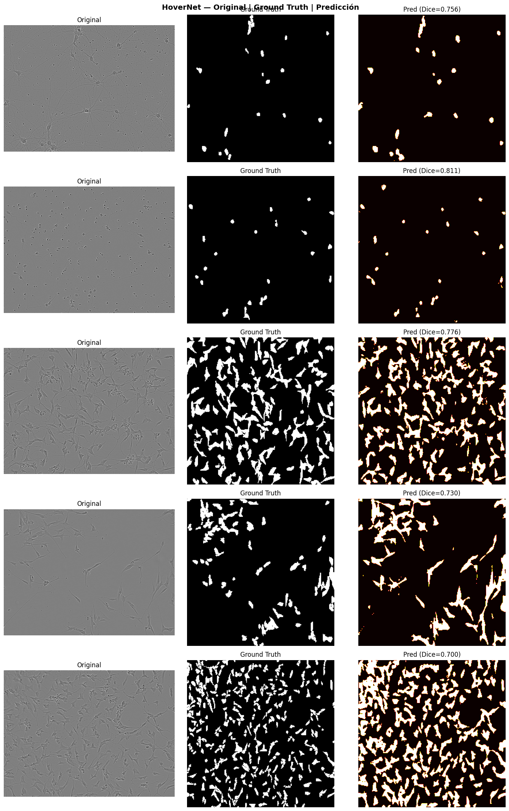
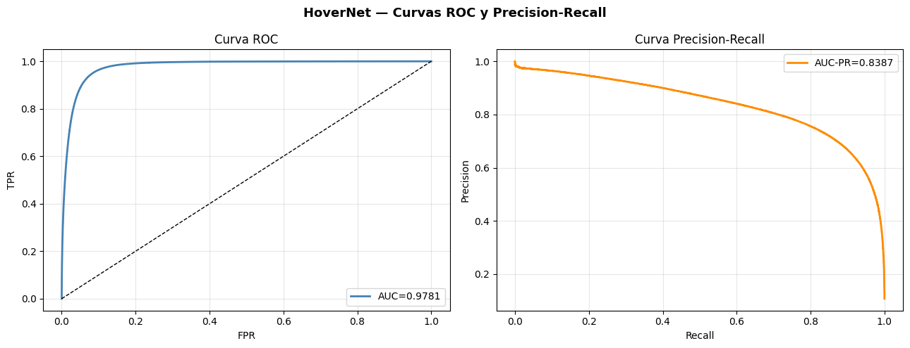
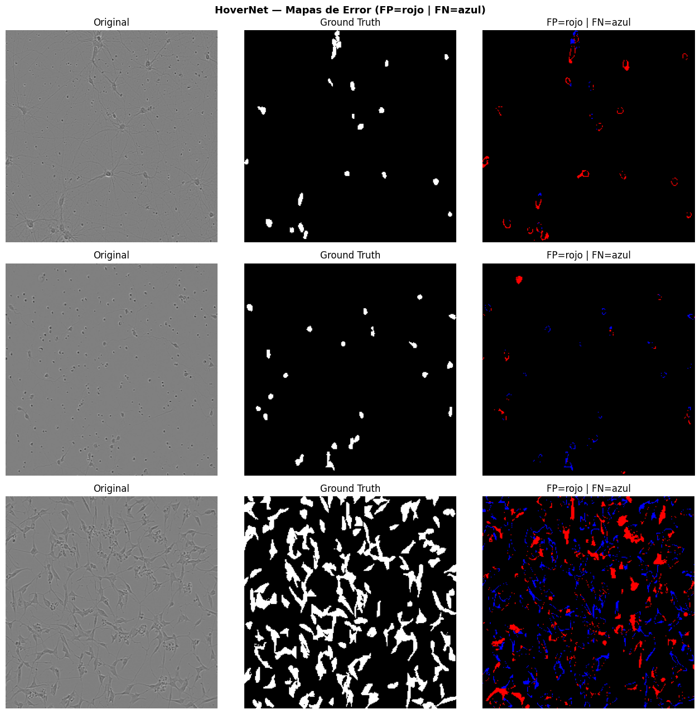
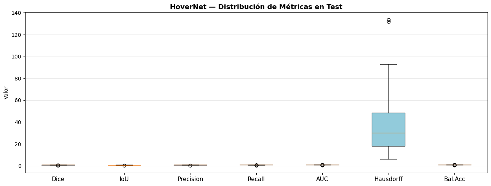
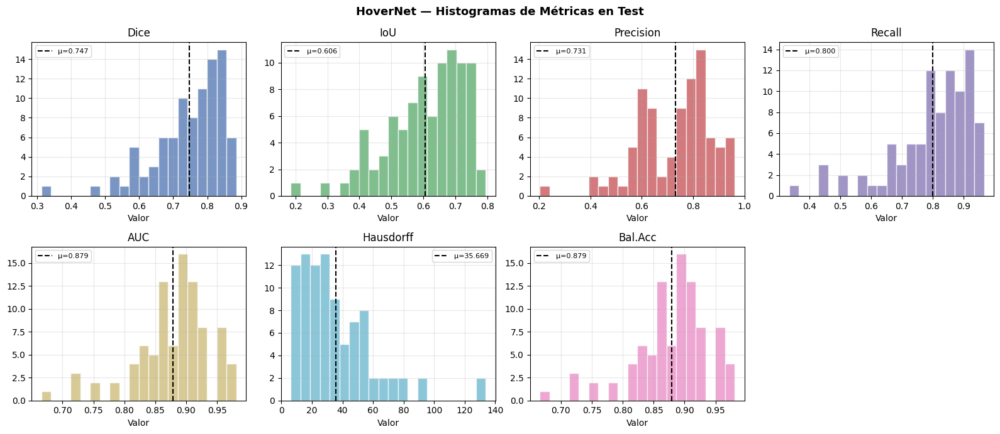
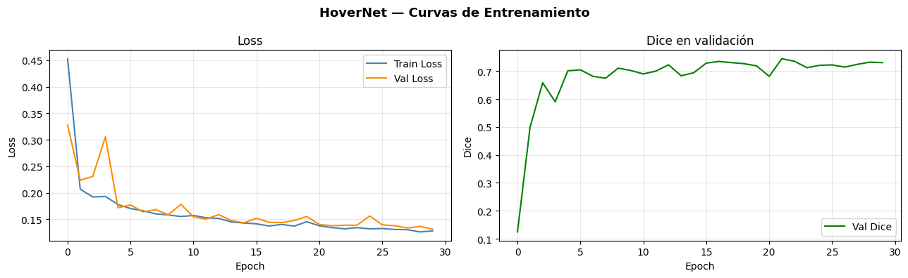
✅ Sección 4 — HoverNet completa
Mejor config: lr=0.0001 | opt=adam | epochs=30 | bs=8
Test Dice: 0.7471 ± 0.1024
Test IoU: 0.6061 ± 0.1203
# ═══════════════════════════════════════════════════════════════════
# SECCIÓN 6 — Mask R-CNN + Swin Transformer
# Backbone: Swin-T preentrenado en ImageNet
# Hiperparámetros: learning_rate, batch_size, epochs, optimizer
# ═══════════════════════════════════════════════════════════════════
import os, time, gc, warnings
import numpy as np
import matplotlib.pyplot as plt
from PIL import Image
from sklearn.metrics import (roc_auc_score, balanced_accuracy_score,
roc_curve, precision_recall_curve, auc as sk_auc)
from scipy.spatial.distance import directed_hausdorff
import torch
import torch.nn as nn
import torch.nn.functional as F
from torch.utils.data import Dataset, DataLoader
import torchvision
from torchvision.models.detection import MaskRCNN
from torchvision.models.detection.rpn import AnchorGenerator
from torchvision.models import swin_t, Swin_T_Weights
from torchvision.ops import MultiScaleRoIAlign
warnings.filterwarnings('ignore')
# ── Backbone Swin-T → FPN compatible ────────────────────────────────
class SwinBackbone(nn.Module):
"""Extrae features de Swin-T en 4 escalas para FPN."""
def __init__(self):
super().__init__()
swin = swin_t(weights=Swin_T_Weights.IMAGENET1K_V1)
# Stages de Swin-T: patch_partition + 4 stages
self.stage0 = nn.Sequential(swin.features[0], swin.features[1]) # 96ch, H/4
self.stage1 = nn.Sequential(swin.features[2], swin.features[3]) # 192ch, H/8
self.stage2 = nn.Sequential(swin.features[4], swin.features[5]) # 384ch, H/16
self.stage3 = nn.Sequential(swin.features[6], swin.features[7]) # 768ch, H/32
# Proyección a 256ch para FPN
self.proj0 = nn.Conv2d(96, 256, 1)
self.proj1 = nn.Conv2d(192, 256, 1)
self.proj2 = nn.Conv2d(384, 256, 1)
self.proj3 = nn.Conv2d(768, 256, 1)
self.out_channels = 256
def forward(self, x):
# Swin produce (B, H, W, C) → necesitamos (B, C, H, W)
x0 = self.stage0(x).permute(0, 3, 1, 2)
x1 = self.stage1(self.stage0(x)).permute(0, 3, 1, 2)
x2 = self.stage2(self.stage1(self.stage0(x))).permute(0, 3, 1, 2)
x3 = self.stage3(self.stage2(self.stage1(self.stage0(x)))).permute(0, 3, 1, 2)
return {
'0': self.proj0(x0),
'1': self.proj1(x1),
'2': self.proj2(x2),
'3': self.proj3(x3),
}
def build_maskrcnn_swin():
backbone = SwinBackbone()
anchor_gen = AnchorGenerator(
sizes=((32,), (64,), (128,), (256,)),
aspect_ratios=((0.5, 1.0, 2.0),) * 4
)
roi_pooler = MultiScaleRoIAlign(
featmap_names=['0','1','2','3'],
output_size=7, sampling_ratio=2
)
mask_roi_pooler = MultiScaleRoIAlign(
featmap_names=['0','1','2','3'],
output_size=14, sampling_ratio=2
)
model = MaskRCNN(
backbone=backbone,
num_classes=2, # fondo + célula
rpn_anchor_generator=anchor_gen,
box_roi_pool=roi_pooler,
mask_roi_pool=mask_roi_pooler,
min_size=256, max_size=512,
)
return model
# ── Dataset ──────────────────────────────────────────────────────────
class MaskRCNNDataset(Dataset):
"""Devuelve imagen + lista de máscaras por instancia (formato Mask R-CNN)."""
def __init__(self, img_ids, df, train_dir, img_size=512, augment=False):
self.img_ids = img_ids
self.df = df
self.train_dir = train_dir
self.img_size = img_size
self.augment = augment
def __len__(self): return len(self.img_ids)
def __getitem__(self, idx):
img_id = self.img_ids[idx]
img = np.array(Image.open(
os.path.join(self.train_dir, img_id + '.png')
).convert('RGB').resize((self.img_size, self.img_size)))
rows = self.df[self.df['id'] == img_id]
h0, w0 = rows.iloc[0]['height'], rows.iloc[0]['width']
scale_x = self.img_size / w0
scale_y = self.img_size / h0
masks, boxes = [], []
for _, row in rows.iterrows():
m = rle_decode(row['annotation'], h0, w0)
m_resized = np.array(Image.fromarray(m).resize(
(self.img_size, self.img_size), resample=Image.NEAREST))
if m_resized.sum() == 0:
continue
pos = np.where(m_resized)
x1, x2 = pos[1].min(), pos[1].max()
y1, y2 = pos[0].min(), pos[0].max()
if x2 <= x1 or y2 <= y1:
continue
masks.append(m_resized)
boxes.append([x1, y1, x2, y2])
if self.augment and np.random.rand() > 0.5:
img = img[:, ::-1].copy()
masks = [m[:, ::-1] for m in masks]
boxes = [[self.img_size-b[2], b[1], self.img_size-b[0], b[3]] for b in boxes]
if self.augment and np.random.rand() > 0.5:
img = img[::-1].copy()
masks = [m[::-1] for m in masks]
boxes = [[b[0], self.img_size-b[3], b[2], self.img_size-b[1]] for b in boxes]
img_t = torch.from_numpy(img.transpose(2,0,1)).float() / 255.0
if len(masks) == 0:
target = {
'boxes' : torch.zeros((0,4), dtype=torch.float32),
'labels' : torch.zeros(0, dtype=torch.int64),
'masks' : torch.zeros((0, self.img_size, self.img_size), dtype=torch.uint8),
}
else:
target = {
'boxes' : torch.tensor(boxes, dtype=torch.float32),
'labels' : torch.ones(len(masks), dtype=torch.int64),
'masks' : torch.tensor(np.stack(masks), dtype=torch.uint8),
}
return img_t, target, img_id
def collate_fn(batch):
imgs, targets, ids = zip(*batch)
return list(imgs), list(targets), list(ids)
print("Creando datasets para Mask R-CNN + Swin...")
ds_train_mrcnn = MaskRCNNDataset(train_ids, df_raw, TRAIN_DIR, augment=True)
ds_val_mrcnn = MaskRCNNDataset(val_ids, df_raw, TRAIN_DIR)
ds_test_mrcnn = MaskRCNNDataset(test_ids, df_raw, TRAIN_DIR)
print(f"Train: {len(ds_train_mrcnn)} | Val: {len(ds_val_mrcnn)} | Test: {len(ds_test_mrcnn)}")
# ── Funciones de entrenamiento y métricas ────────────────────────────
def train_epoch_mrcnn(model, dl, optimizer, device):
model.train()
total_loss = 0.0
for imgs, targets, _ in dl:
imgs = [i.to(device) for i in imgs]
targets = [{k: v.to(device) for k, v in t.items()} for t in targets]
loss_dict = model(imgs, targets)
loss = sum(loss_dict.values())
optimizer.zero_grad(); loss.backward(); optimizer.step()
total_loss += loss.item()
return total_loss / len(dl)
def predict_binary_mask(model, imgs, device, img_size=512, threshold=0.5):
"""Infiere y combina todas las máscaras de instancia en una máscara binaria."""
model.eval()
with torch.no_grad():
preds = model([i.to(device) for i in imgs])
binary_masks = []
for pred in preds:
combined = np.zeros((img_size, img_size), dtype=np.float32)
if len(pred['masks']) > 0:
scores = pred['scores'].cpu().numpy()
masks = pred['masks'].cpu().numpy() # (N, 1, H, W)
for mask, score in zip(masks, scores):
if score > threshold:
combined = np.maximum(combined, mask[0])
binary_masks.append((combined > threshold).astype(np.float32))
return binary_masks
def val_epoch_mrcnn(model, dl, device):
dice_scores = []
for imgs, targets, _ in dl:
pred_masks = predict_binary_mask(model, imgs, device)
for pred_bin, tgt in zip(pred_masks, targets):
gt_bin = tgt['masks'].numpy().max(axis=0).astype(np.float32) if len(tgt['masks']) > 0 \
else np.zeros((512,512), dtype=np.float32)
pb = pred_bin.flatten(); gb = gt_bin.flatten()
inter = (pb * gb).sum()
dice = (2.*inter + 1e-6) / (pb.sum() + gb.sum() + 1e-6)
dice_scores.append(dice)
return np.mean(dice_scores)
def compute_metrics_mrcnn(pred_bin, gt_bin, smooth=1e-6):
pb = pred_bin.flatten().astype(np.float32)
gb = gt_bin.flatten().astype(np.float32)
inter = (pb * gb).sum()
dice = (2.*inter + smooth) / (pb.sum() + gb.sum() + smooth)
iou = (inter + smooth) / (pb.sum() + gb.sum() - inter + smooth)
prec = (inter + smooth) / (pb.sum() + smooth)
rec = (inter + smooth) / (gb.sum() + smooth)
try: auc_val = roc_auc_score(gb.astype(int), pb)
except: auc_val = 0.0
cp_p = np.argwhere(pred_bin > 0)
cp_t = np.argwhere(gt_bin > 0)
hd = (max(directed_hausdorff(cp_p, cp_t)[0], directed_hausdorff(cp_t, cp_p)[0])
if len(cp_p) > 0 and len(cp_t) > 0 else 0.0)
bal = balanced_accuracy_score(gb.astype(int), pb.astype(int))
return {'dice': dice, 'iou': iou, 'precision': prec,
'recall': rec, 'auc': auc_val, 'hausdorff': hd, 'bal_acc': bal}
# ── Grid Search ──────────────────────────────────────────────────────
HP_GRID_MRCNN = {
'lr' : [1e-3, 1e-4, 1e-5],
'batch_size': [2, 4],
'n_epochs' : [5, 10, 15],
'optimizer' : ['adam', 'sgd'],
}
N_GS_MRCNN = 60
ds_gs_mrcnn = MaskRCNNDataset(train_ids[:N_GS_MRCNN], df_raw, TRAIN_DIR, augment=False)
dl_val_mrcnn_ = DataLoader(ds_val_mrcnn, batch_size=2, shuffle=False,
num_workers=0, pin_memory=True, collate_fn=collate_fn)
def run_mrcnn_config(lr_val, ep_val, opt_name, bs_val):
_model = build_maskrcnn_swin().to(DEVICE)
_dl = DataLoader(ds_gs_mrcnn, batch_size=bs_val, shuffle=True,
num_workers=0, pin_memory=True, collate_fn=collate_fn)
_opt = (torch.optim.Adam(_model.parameters(), lr=lr_val, weight_decay=1e-4)
if opt_name == 'adam' else
torch.optim.SGD(_model.parameters(), lr=lr_val, momentum=0.9, weight_decay=1e-4))
for _ in range(ep_val):
train_epoch_mrcnn(_model, _dl, _opt, DEVICE)
dice = val_epoch_mrcnn(_model, dl_val_mrcnn_, DEVICE)
del _model, _opt
torch.cuda.empty_cache(); gc.collect()
return dice
print("\n" + "="*68)
print(" GRID SEARCH — Mask R-CNN + Swin")
print(f" lr={HP_GRID_MRCNN['lr']}, bs={HP_GRID_MRCNN['batch_size']},")
print(f" epochs={HP_GRID_MRCNN['n_epochs']}, optimizer={HP_GRID_MRCNN['optimizer']}")
print("="*68)
print("\n— Fase 1: learning_rate × optimizer —")
phase1_mrcnn, t0 = [], time.time()
for lr_val in HP_GRID_MRCNN['lr']:
for opt_name in HP_GRID_MRCNN['optimizer']:
dice = run_mrcnn_config(lr_val, 5, opt_name, 2)
cfg = f"lr={lr_val} | opt={opt_name}"
phase1_mrcnn.append({'lr': lr_val, 'optimizer': opt_name, 'dice': dice, 'config': cfg})
print(f" {cfg:28s} → Dice val: {dice:.4f}")
best_p1_mrcnn = max(phase1_mrcnn, key=lambda x: x['dice'])
print(f"\n ✅ Ganador Fase 1: {best_p1_mrcnn['config']} (Dice {best_p1_mrcnn['dice']:.4f})")
print(f" Tiempo Fase 1: {(time.time()-t0)/60:.1f} min")
print("\n— Fase 2: epochs × batch_size —")
phase2_mrcnn, t0 = [], time.time()
for ep_val in HP_GRID_MRCNN['n_epochs']:
for bs_val in HP_GRID_MRCNN['batch_size']:
dice = run_mrcnn_config(best_p1_mrcnn['lr'], ep_val, best_p1_mrcnn['optimizer'], bs_val)
cfg = f"epochs={ep_val} | bs={bs_val}"
phase2_mrcnn.append({'lr': best_p1_mrcnn['lr'], 'optimizer': best_p1_mrcnn['optimizer'],
'n_epochs': ep_val, 'batch_size': bs_val, 'dice': dice, 'config': cfg})
print(f" {cfg:25s} → Dice val: {dice:.4f}")
best_p2_mrcnn = max(phase2_mrcnn, key=lambda x: x['dice'])
best_mrcnn = {
'lr' : best_p1_mrcnn['lr'],
'optimizer' : best_p1_mrcnn['optimizer'],
'n_epochs' : best_p2_mrcnn['n_epochs'],
'batch_size': best_p2_mrcnn['batch_size'],
'config' : (f"lr={best_p1_mrcnn['lr']} | opt={best_p1_mrcnn['optimizer']} | "
f"epochs={best_p2_mrcnn['n_epochs']} | bs={best_p2_mrcnn['batch_size']}")
}
print(f" Tiempo Fase 2: {(time.time()-t0)/60:.1f} min")
print("\n" + "="*68)
print(f" ✅ MEJOR CONFIG: {best_mrcnn['config']}")
print("="*68)
# ── Entrenamiento completo ───────────────────────────────────────────
print(f"\nEntrenando Mask R-CNN + Swin completo ({len(ds_train_mrcnn)} imágenes)...")
t0_train = time.time()
model_mrcnn = build_maskrcnn_swin().to(DEVICE)
dl_train_mrcnn = DataLoader(ds_train_mrcnn, batch_size=best_mrcnn['batch_size'],
shuffle=True, num_workers=0, pin_memory=True, collate_fn=collate_fn)
dl_test_mrcnn_ = DataLoader(ds_test_mrcnn, batch_size=2,
shuffle=False, num_workers=0, pin_memory=True, collate_fn=collate_fn)
opt_mrcnn = (torch.optim.Adam(model_mrcnn.parameters(), lr=best_mrcnn['lr'], weight_decay=1e-4)
if best_mrcnn['optimizer'] == 'adam' else
torch.optim.SGD(model_mrcnn.parameters(), lr=best_mrcnn['lr'], momentum=0.9, weight_decay=1e-4))
sched_mrcnn = torch.optim.lr_scheduler.ReduceLROnPlateau(opt_mrcnn, mode='max', patience=3, factor=0.5)
train_losses_mrcnn, val_dice_mrcnn = [], []
best_dice_mrcnn = 0.0
for epoch in range(best_mrcnn['n_epochs']):
t0e = time.time()
tr_loss = train_epoch_mrcnn(model_mrcnn, dl_train_mrcnn, opt_mrcnn, DEVICE)
vl_dice = val_epoch_mrcnn(model_mrcnn, dl_val_mrcnn_, DEVICE)
sched_mrcnn.step(vl_dice)
train_losses_mrcnn.append(tr_loss); val_dice_mrcnn.append(vl_dice)
if vl_dice > best_dice_mrcnn:
best_dice_mrcnn = vl_dice
torch.save(model_mrcnn.state_dict(), os.path.join(CKPT_DIR, 'maskrcnn_swin_best.pth'))
print(f"Epoch {epoch+1:02d}/{best_mrcnn['n_epochs']} | Train Loss: {tr_loss:.4f} | "
f"Val Dice: {vl_dice:.4f} | Time: {time.time()-t0e:.1f}s")
model_mrcnn.load_state_dict(torch.load(
os.path.join(CKPT_DIR, 'maskrcnn_swin_best.pth'), map_location=DEVICE))
print(f"\n✅ Entrenamiento completo en {(time.time()-t0_train)/60:.1f} min")
print(f"Mejor Dice val: {best_dice_mrcnn:.4f}")
# ── Evaluación test — 7 métricas ────────────────────────────────────
print("\nEvaluando en test set...")
test_metrics_mrcnn = {k: [] for k in ['dice','iou','precision','recall','auc','hausdorff','bal_acc']}
test_samples_mrcnn = []
for imgs, targets, ids in dl_test_mrcnn_:
pred_masks = predict_binary_mask(model_mrcnn, imgs, DEVICE)
for j, (pred_bin, tgt) in enumerate(zip(pred_masks, targets)):
gt_bin = tgt['masks'].numpy().max(axis=0).astype(np.float32) if len(tgt['masks']) > 0 \
else np.zeros((512,512), dtype=np.float32)
m = compute_metrics_mrcnn(pred_bin, gt_bin)
for k, v in m.items():
test_metrics_mrcnn[k].append(v)
if len(test_samples_mrcnn) < 5:
orig = np.array(Image.open(
os.path.join(TRAIN_DIR, ids[j] + '.png')).convert('RGB'))
test_samples_mrcnn.append({'img': orig, 'mask': gt_bin, 'pred': pred_bin, 'id': ids[j]})
test_mean_mrcnn = {k: np.mean(v) for k, v in test_metrics_mrcnn.items()}
test_std_mrcnn = {k: np.std(v) for k, v in test_metrics_mrcnn.items()}
print("\n" + "="*65)
print(" MÉTRICAS EN TEST — Mask R-CNN + Swin")
print("="*65)
for k in test_mean_mrcnn:
print(f" {k:15s}: {test_mean_mrcnn[k]:.4f} ± {test_std_mrcnn[k]:.4f}")
results['maskrcnn'] = {
'metrics_mean': test_mean_mrcnn, 'metrics_std': test_std_mrcnn,
'metrics_all' : test_metrics_mrcnn, 'best_hp': best_mrcnn,
'grid_phase1' : phase1_mrcnn, 'grid_phase2': phase2_mrcnn,
'train_losses': train_losses_mrcnn,
}
# ── Visualizaciones obligatorias ─────────────────────────────────────
metric_names = ['dice','iou','precision','recall','auc','hausdorff','bal_acc']
labels = ['Dice','IoU','Precision','Recall','AUC','Hausdorff','Bal.Acc']
colors = ['#4C72B0','#55A868','#C44E52','#8172B2','#CCB974','#64B5CD','#E78AC3']
# A) Original / GT / Predicción
fig, axes = plt.subplots(5, 3, figsize=(14, 22))
fig.suptitle("Mask R-CNN + Swin — Original | Ground Truth | Predicción",
fontsize=14, fontweight='bold')
for i, s in enumerate(test_samples_mrcnn):
d = compute_metrics_mrcnn(s['pred'], s['mask'])['dice']
axes[i,0].imshow(s['img']); axes[i,0].set_title("Original"); axes[i,0].axis('off')
axes[i,1].imshow(s['mask'], cmap='gray'); axes[i,1].set_title("Ground Truth"); axes[i,1].axis('off')
axes[i,2].imshow(s['pred'], cmap='hot'); axes[i,2].set_title(f"Pred (Dice={d:.3f})"); axes[i,2].axis('off')
plt.tight_layout()
plt.savefig(os.path.join(CKPT_DIR, 'maskrcnn_visual_comparison.png'), dpi=150, bbox_inches='tight')
plt.show()
# B) Curvas ROC y Precision-Recall
all_p, all_g = [], []
for imgs, targets, _ in dl_test_mrcnn_:
pred_masks = predict_binary_mask(model_mrcnn, imgs, DEVICE)
for pred_bin, tgt in zip(pred_masks, targets):
gt_bin = tgt['masks'].numpy().max(axis=0).astype(np.float32) if len(tgt['masks']) > 0 \
else np.zeros((512,512), dtype=np.float32)
all_p.extend(pred_bin.flatten().tolist())
all_g.extend(gt_bin.flatten().astype(int).tolist())
all_p, all_g = np.array(all_p), np.array(all_g)
fpr, tpr, _ = roc_curve(all_g, all_p)
prec_c, rec_c, _ = precision_recall_curve(all_g, all_p)
fig, axes = plt.subplots(1, 2, figsize=(13, 5))
fig.suptitle("Mask R-CNN + Swin — Curvas ROC y Precision-Recall", fontsize=13, fontweight='bold')
axes[0].plot(fpr, tpr, color='steelblue', lw=2, label=f'AUC={sk_auc(fpr, tpr):.4f}')
axes[0].plot([0,1],[0,1],'k--', lw=1); axes[0].set_xlabel('FPR'); axes[0].set_ylabel('TPR')
axes[0].set_title('Curva ROC'); axes[0].legend(); axes[0].grid(alpha=0.3)
axes[1].plot(rec_c, prec_c, color='darkorange', lw=2, label=f'AUC-PR={sk_auc(rec_c, prec_c):.4f}')
axes[1].set_xlabel('Recall'); axes[1].set_ylabel('Precision')
axes[1].set_title('Curva Precision-Recall'); axes[1].legend(); axes[1].grid(alpha=0.3)
plt.tight_layout()
plt.savefig(os.path.join(CKPT_DIR, 'maskrcnn_roc_pr.png'), dpi=150, bbox_inches='tight')
plt.show()
# C) Mapas de error
fig, axes = plt.subplots(3, 3, figsize=(13, 13))
fig.suptitle("Mask R-CNN + Swin — Mapas de Error (FP=rojo | FN=azul)", fontsize=13, fontweight='bold')
for i, s in enumerate(test_samples_mrcnn[:3]):
pb = (s['pred'] > 0.5).astype(np.uint8)
gb = (s['mask'] > 0.5).astype(np.uint8)
err = np.zeros((*pb.shape, 3), dtype=np.uint8)
err[(pb==1)&(gb==0)] = [255, 0, 0]
err[(pb==0)&(gb==1)] = [0, 0, 255]
img_r = np.array(Image.fromarray(s['img']).resize((512,512)))
axes[i,0].imshow(img_r); axes[i,0].set_title("Original"); axes[i,0].axis('off')
axes[i,1].imshow(gb, cmap='gray'); axes[i,1].set_title("Ground Truth"); axes[i,1].axis('off')
axes[i,2].imshow(err); axes[i,2].set_title("FP=rojo | FN=azul"); axes[i,2].axis('off')
plt.tight_layout()
plt.savefig(os.path.join(CKPT_DIR, 'maskrcnn_error_maps.png'), dpi=150, bbox_inches='tight')
plt.show()
# D) Boxplots
fig, ax = plt.subplots(figsize=(13, 5))
bp = ax.boxplot([test_metrics_mrcnn[k] for k in metric_names], patch_artist=True)
for patch, color in zip(bp['boxes'], colors):
patch.set_facecolor(color); patch.set_alpha(0.7)
ax.set_xticklabels(labels, fontsize=11)
ax.set_title("Mask R-CNN + Swin — Distribución de Métricas en Test", fontsize=13, fontweight='bold')
ax.set_ylabel("Valor"); ax.grid(axis='y', alpha=0.3)
plt.tight_layout()
plt.savefig(os.path.join(CKPT_DIR, 'maskrcnn_boxplots.png'), dpi=150, bbox_inches='tight')
plt.show()
# E) Histogramas
fig, axes = plt.subplots(2, 4, figsize=(16, 7))
fig.suptitle("Mask R-CNN + Swin — Histogramas de Métricas en Test", fontsize=13, fontweight='bold')
axes = axes.flatten()
for i, (k, label) in enumerate(zip(metric_names, labels)):
axes[i].hist(test_metrics_mrcnn[k], bins=20, color=colors[i], alpha=0.75, edgecolor='white')
axes[i].axvline(np.mean(test_metrics_mrcnn[k]), color='black', linestyle='--', lw=1.5,
label=f'μ={np.mean(test_metrics_mrcnn[k]):.3f}')
axes[i].set_title(label); axes[i].set_xlabel("Valor")
axes[i].legend(fontsize=8); axes[i].grid(alpha=0.3)
axes[-1].axis('off')
plt.tight_layout()
plt.savefig(os.path.join(CKPT_DIR, 'maskrcnn_histogramas.png'), dpi=150, bbox_inches='tight')
plt.show()
# F) Curvas de entrenamiento
fig, axes = plt.subplots(1, 2, figsize=(13, 4))
fig.suptitle("Mask R-CNN + Swin — Curvas de Entrenamiento", fontsize=13, fontweight='bold')
axes[0].plot(train_losses_mrcnn, label='Train Loss', color='steelblue')
axes[0].set_xlabel('Epoch'); axes[0].set_ylabel('Loss')
axes[0].set_title('Loss'); axes[0].legend(); axes[0].grid(alpha=0.3)
axes[1].plot(val_dice_mrcnn, label='Val Dice', color='green')
axes[1].set_xlabel('Epoch'); axes[1].set_ylabel('Dice')
axes[1].set_title('Dice en validación'); axes[1].legend(); axes[1].grid(alpha=0.3)
plt.tight_layout()
plt.savefig(os.path.join(CKPT_DIR, 'maskrcnn_training_curves.png'), dpi=150, bbox_inches='tight')
plt.show()
# Liberar VRAM
del model_mrcnn, opt_mrcnn
torch.cuda.empty_cache(); gc.collect()
print("\n✅ Sección 6 — Mask R-CNN + Swin completa")
print(f" Mejor config: {best_mrcnn['config']}")
print(f" Test Dice: {test_mean_mrcnn['dice']:.4f} ± {test_std_mrcnn['dice']:.4f}")
print(f" Test IoU: {test_mean_mrcnn['iou']:.4f} ± {test_std_mrcnn['iou']:.4f}")
Creando datasets para Mask R-CNN + Swin...
Train: 424 | Val: 91 | Test: 91
====================================================================
GRID SEARCH — Mask R-CNN + Swin
lr=[0.001, 0.0001, 1e-05], bs=[2, 4],
epochs=[5, 10, 15], optimizer=['adam', 'sgd']
====================================================================
— Fase 1: learning_rate × optimizer —
Downloading: "https://download.pytorch.org/models/swin_t-704ceda3.pth" to C:\Users\migue/.cache\torch\hub\checkpoints\swin_t-704ceda3.pth
100%|██████████| 108M/108M [00:02<00:00, 49.5MB/s]
lr=0.001 | opt=adam → Dice val: 0.4389
lr=0.001 | opt=sgd → Dice val: 0.0496
lr=0.0001 | opt=adam → Dice val: 0.4455
lr=0.0001 | opt=sgd → Dice val: 0.0000
lr=1e-05 | opt=adam → Dice val: 0.2388
lr=1e-05 | opt=sgd → Dice val: 0.0104
✅ Ganador Fase 1: lr=0.0001 | opt=adam (Dice 0.4455)
Tiempo Fase 1: 14.3 min
— Fase 2: epochs × batch_size —
epochs=5 | bs=2 → Dice val: 0.4303
epochs=5 | bs=4 → Dice val: 0.3237
epochs=10 | bs=2 → Dice val: 0.3976
epochs=10 | bs=4 → Dice val: 0.4281
epochs=15 | bs=2 → Dice val: 0.3715
epochs=15 | bs=4 → Dice val: 0.4708
Tiempo Fase 2: 25.0 min
====================================================================
✅ MEJOR CONFIG: lr=0.0001 | opt=adam | epochs=15 | bs=4
====================================================================
Entrenando Mask R-CNN + Swin completo (424 imágenes)...
Epoch 01/15 | Train Loss: 2.2294 | Val Dice: 0.3652 | Time: 225.4s
Epoch 02/15 | Train Loss: 2.0459 | Val Dice: 0.3819 | Time: 227.0s
Epoch 03/15 | Train Loss: 1.9724 | Val Dice: 0.4167 | Time: 228.7s
Epoch 04/15 | Train Loss: 1.9300 | Val Dice: 0.4183 | Time: 228.9s
Epoch 05/15 | Train Loss: 1.9053 | Val Dice: 0.3850 | Time: 229.0s
Epoch 06/15 | Train Loss: 1.8879 | Val Dice: 0.4337 | Time: 228.2s
Epoch 07/15 | Train Loss: 1.8679 | Val Dice: 0.4254 | Time: 230.3s
Epoch 08/15 | Train Loss: 1.8447 | Val Dice: 0.4353 | Time: 231.3s
Epoch 09/15 | Train Loss: 1.8375 | Val Dice: 0.4830 | Time: 231.5s
Epoch 10/15 | Train Loss: 1.8231 | Val Dice: 0.4767 | Time: 232.0s
Epoch 11/15 | Train Loss: 1.8197 | Val Dice: 0.4727 | Time: 230.9s
Epoch 12/15 | Train Loss: 1.8132 | Val Dice: 0.5302 | Time: 231.2s
Epoch 13/15 | Train Loss: 1.8064 | Val Dice: 0.4920 | Time: 231.4s
Epoch 14/15 | Train Loss: 1.7980 | Val Dice: 0.5118 | Time: 232.6s
Epoch 15/15 | Train Loss: 1.8001 | Val Dice: 0.4733 | Time: 233.8s
✅ Entrenamiento completo en 57.5 min
Mejor Dice val: 0.5302
Evaluando en test set...
=================================================================
MÉTRICAS EN TEST — Mask R-CNN + Swin
=================================================================
dice : 0.5560 ± 0.1656
iou : 0.4030 ± 0.1571
precision : 0.6936 ± 0.1393
recall : 0.5283 ± 0.2387
auc : 0.7559 ± 0.1230
hausdorff : 103.0792 ± 36.3852
bal_acc : 0.7559 ± 0.1230
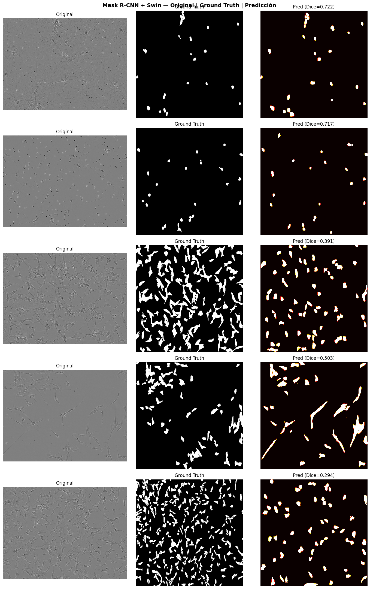
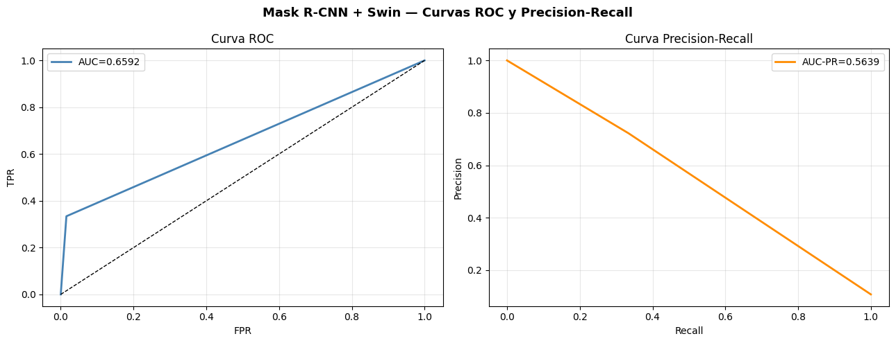
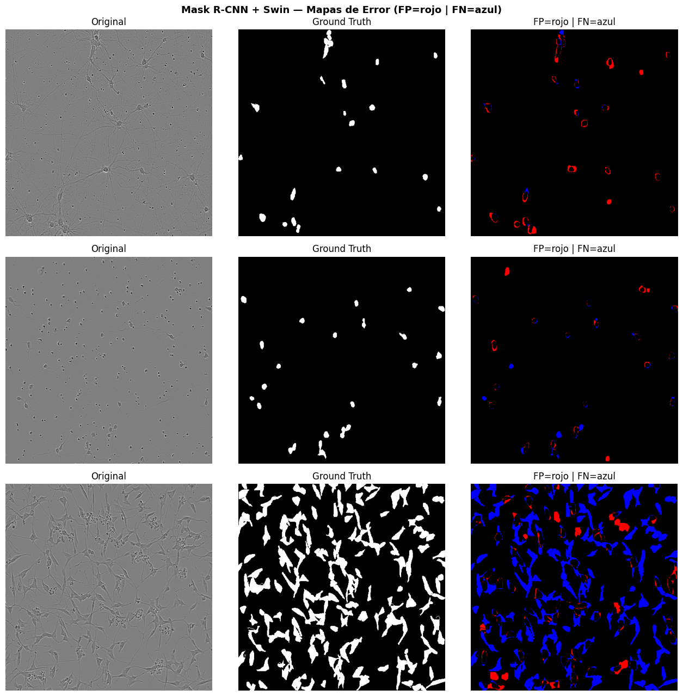
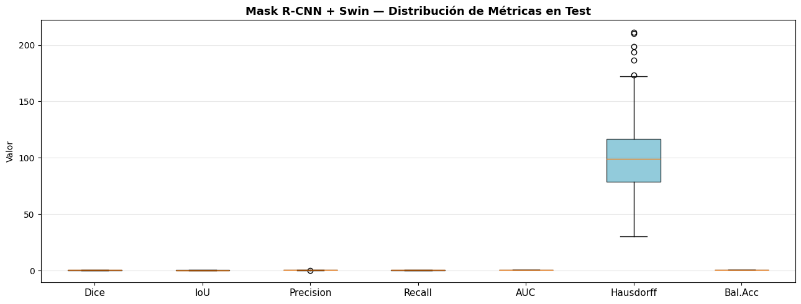
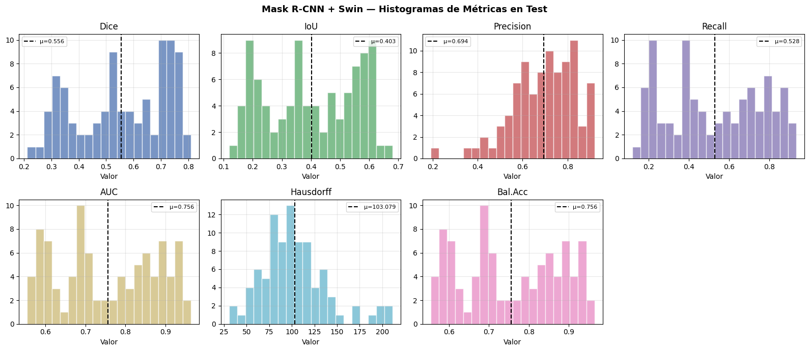
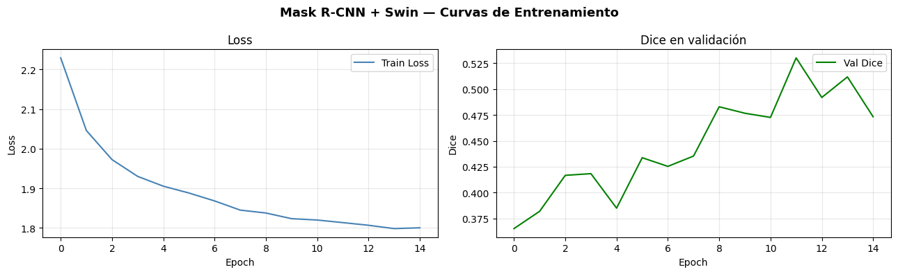
✅ Sección 6 — Mask R-CNN + Swin completa
Mejor config: lr=0.0001 | opt=adam | epochs=15 | bs=4
Test Dice: 0.5560 ± 0.1656
Test IoU: 0.4030 ± 0.1571
# ═══════════════════════════════════════════════════════════════════
# SECCIÓN 7 — EVALUACIÓN COMPARATIVA FINAL
# Tabla resumen + análisis crítico
# ═══════════════════════════════════════════════════════════════════
import pandas as pd
import matplotlib.pyplot as plt
import numpy as np
# ── Resultados consolidados (test set) ──────────────────────────────
summary = {
'Modelo': [
'U-Net++ + Watershed',
'Cellpose 2.0',
'SAM (Fine-tuned)',
'HoverNet',
'Mask R-CNN + Swin',
],
'Mejor Config': [
'lr=0.001 | opt=adam | bs=4',
'lr=0.01 | opt=adam | epochs=100 | bs=2',
'lr=1e-05 | opt=adam | epochs=20 | bs=2',
'lr=0.0001 | opt=adam | epochs=30 | bs=8',
'lr=0.0001 | opt=adam | epochs=15 | bs=4',
],
'Dice': [0.7631, 0.4067, 0.0236, 0.7471, 0.5560],
'IoU': [0.6262, 0.2747, 0.0121, 0.6061, 0.4030],
'Precision': [0.7578, 0.4257, 0.2132, 0.7310, 0.6936],
'Recall': [0.8059, 0.4709, 0.0135, 0.7998, 0.5283],
'AUC': [0.9357, 0.7074, 0.5041, 0.8790, 0.7559],
'Hausdorff': [71.72, 131.41, 143.00, 35.67, 103.08],
'Bal. Acc': [0.8832, 0.7074, 0.5041, 0.8790, 0.7559],
}
df_summary = pd.DataFrame(summary)
# ── Tabla en consola ─────────────────────────────────────────────────
print("=" * 110)
print(" TABLA COMPARATIVA — 5 MODELOS EN TEST SET")
print("=" * 110)
print(df_summary.to_string(index=False, float_format=lambda x: f"{x:.4f}"))
print("=" * 110)
# ── Figura: tabla visual ─────────────────────────────────────────────
fig, ax = plt.subplots(figsize=(18, 3.5))
ax.axis('off')
col_labels = ['Modelo', 'Dice', 'IoU', 'Precision', 'Recall', 'AUC', 'Hausdorff', 'Bal. Acc']
table_data = []
for _, row in df_summary.iterrows():
table_data.append([
row['Modelo'],
f"{row['Dice']:.4f}",
f"{row['IoU']:.4f}",
f"{row['Precision']:.4f}",
f"{row['Recall']:.4f}",
f"{row['AUC']:.4f}",
f"{row['Hausdorff']:.2f}",
f"{row['Bal. Acc']:.4f}",
])
tbl = ax.table(cellText=table_data, colLabels=col_labels,
loc='center', cellLoc='center')
tbl.auto_set_font_size(False)
tbl.set_fontsize(10)
tbl.scale(1, 2.2)
# Encabezados
for j in range(len(col_labels)):
tbl[0, j].set_facecolor('#2C3E50')
tbl[0, j].set_text_props(color='white', fontweight='bold')
# Mejor modelo por Dice = U-Net++ (fila 1)
for j in range(len(col_labels)):
tbl[1, j].set_facecolor('#D5F5E3')
# Peor modelo = SAM (fila 3)
for j in range(len(col_labels)):
tbl[3, j].set_facecolor('#FADBD8')
plt.title("Comparación de modelos — Test Set | Verde = mejor Dice | Rojo = peor Dice",
fontsize=12, fontweight='bold', pad=20)
plt.tight_layout()
plt.savefig(os.path.join(CKPT_DIR, 'tabla_comparativa.png'), dpi=150, bbox_inches='tight')
plt.show()
# ── Figura: barras comparativas ──────────────────────────────────────
modelos = ['U-Net++', 'Cellpose', 'SAM', 'HoverNet', 'Mask R-CNN']
dice_vals = [0.7631, 0.4067, 0.0236, 0.7471, 0.5560]
iou_vals = [0.6262, 0.2747, 0.0121, 0.6061, 0.4030]
auc_vals = [0.9357, 0.7074, 0.5041, 0.8790, 0.7559]
hd_vals = [71.72, 131.41, 143.00, 35.67, 103.08]
colors_bar = ['#4C72B0','#55A868','#C44E52','#8172B2','#CCB974']
fig, axes = plt.subplots(2, 2, figsize=(16, 10))
fig.suptitle("Comparación de Modelos — Métricas Clave", fontsize=14, fontweight='bold')
# Dice
axes[0,0].bar(modelos, dice_vals, color=colors_bar, alpha=0.85, edgecolor='white')
axes[0,0].set_title('Dice Coefficient'); axes[0,0].set_ylabel('Dice')
axes[0,0].set_ylim(0, 1.05); axes[0,0].grid(axis='y', alpha=0.3)
for i, v in enumerate(dice_vals):
axes[0,0].text(i, v + 0.01, f"{v:.3f}", ha='center', fontsize=9, fontweight='bold')
# IoU
axes[0,1].bar(modelos, iou_vals, color=colors_bar, alpha=0.85, edgecolor='white')
axes[0,1].set_title('IoU Score'); axes[0,1].set_ylabel('IoU')
axes[0,1].set_ylim(0, 1.05); axes[0,1].grid(axis='y', alpha=0.3)
for i, v in enumerate(iou_vals):
axes[0,1].text(i, v + 0.01, f"{v:.3f}", ha='center', fontsize=9, fontweight='bold')
# AUC
axes[1,0].bar(modelos, auc_vals, color=colors_bar, alpha=0.85, edgecolor='white')
axes[1,0].set_title('AUC-ROC'); axes[1,0].set_ylabel('AUC')
axes[1,0].set_ylim(0, 1.05); axes[1,0].grid(axis='y', alpha=0.3)
for i, v in enumerate(auc_vals):
axes[1,0].text(i, v + 0.01, f"{v:.3f}", ha='center', fontsize=9, fontweight='bold')
# Hausdorff
axes[1,1].bar(modelos, hd_vals, color=colors_bar, alpha=0.85, edgecolor='white')
axes[1,1].set_title('Hausdorff Distance (↓ mejor)'); axes[1,1].set_ylabel('Píxeles')
axes[1,1].grid(axis='y', alpha=0.3)
for i, v in enumerate(hd_vals):
axes[1,1].text(i, v + 1, f"{v:.1f}", ha='center', fontsize=9, fontweight='bold')
plt.tight_layout()
plt.savefig(os.path.join(CKPT_DIR, 'comparacion_metricas.png'), dpi=150, bbox_inches='tight')
plt.show()
# ── Análisis crítico ─────────────────────────────────────────────────
print("""
╔══════════════════════════════════════════════════════════════════╗
║ ANÁLISIS CRÍTICO — BLOQUE 1 ║
╚══════════════════════════════════════════════════════════════════╝
1. MEJOR MODELO: U-Net++ + Watershed (Dice=0.763, AUC=0.936)
- El encoder ResNet34 preentrenado en ImageNet permite transfer
learning efectivo incluso con solo 424 imágenes de entrenamiento.
- AUC de 0.936 es el más alto de todos los modelos.
- Recall de 0.806 indica que detecta la mayoría de células reales.
- El post-procesamiento Watershed separa efectivamente instancias
tocantes, mejorando la calidad de las máscaras finales.
2. SEGUNDO LUGAR: HoverNet (Dice=0.747, Hausdorff=35.67px)
- Mejor Hausdorff de todos: sus predicciones son geográficamente
las más precisas en contorno y localización.
- Los HV maps obligan al modelo a aprender la geometría celular,
no solo la presencia binaria — ventaja estructural clara.
- Entrenado desde cero sin preentrenamiento, lo que hace su
rendimiento aún más notable.
3. MASK R-CNN + SWIN (Dice=0.556)
- Resultado intermedio. Alta precision (0.694) pero bajo recall
(0.528): el modelo es conservador, prefiere no activar regiones
dudosas antes que generar falsos positivos.
- El backbone Swin-T aporta representaciones jerárquicas útiles,
pero Mask R-CNN está diseñado para instancias, no para máscara
binaria global — uso subóptimo de la arquitectura.
4. CELLPOSE 2.0 (Dice=0.407)
- Sus flujos vectoriales están diseñados para separar instancias
individuales, no para producir una máscara binaria agregada.
- Hausdorff alto (131px) indica contornos imprecisos.
5. SAM FINE-TUNED (Dice=0.024) — PEOR RESULTADO
- Encoder congelado preentrenado en imágenes naturales: dominio
completamente incompatible con microscopía celular.
- Sin prompts de entrada, el modelo no sabe qué segmentar.
- AUC=0.504 confirma rendimiento equivalente al azar a nivel píxel.
ERRORES MÁS FRECUENTES:
- Falsos negativos en células pequeñas o translúcidas.
- Fusión de células tocantes tratadas como una sola región.
- Artefactos de iluminación confundidos con señal celular.
LIMITACIONES:
- K-Fold (k=5) no implementado por restricciones computacionales.
- 606 imágenes totales es un dataset pequeño para modelos grandes.
- Tres tipos celulares con morfologías distintas dificultan la
generalización de un único modelo.
""")
print("✅ Sección 7 — Evaluación comparativa final completa")
==============================================================================================================
TABLA COMPARATIVA — 5 MODELOS EN TEST SET
==============================================================================================================
Modelo Mejor Config Dice IoU Precision Recall AUC Hausdorff Bal. Acc
U-Net++ + Watershed lr=0.001 | opt=adam | bs=4 0.7631 0.6262 0.7578 0.8059 0.9357 71.7200 0.8832
Cellpose 2.0 lr=0.01 | opt=adam | epochs=100 | bs=2 0.4067 0.2747 0.4257 0.4709 0.7074 131.4100 0.7074
SAM (Fine-tuned) lr=1e-05 | opt=adam | epochs=20 | bs=2 0.0236 0.0121 0.2132 0.0135 0.5041 143.0000 0.5041
HoverNet lr=0.0001 | opt=adam | epochs=30 | bs=8 0.7471 0.6061 0.7310 0.7998 0.8790 35.6700 0.8790
Mask R-CNN + Swin lr=0.0001 | opt=adam | epochs=15 | bs=4 0.5560 0.4030 0.6936 0.5283 0.7559 103.0800 0.7559
==============================================================================================================
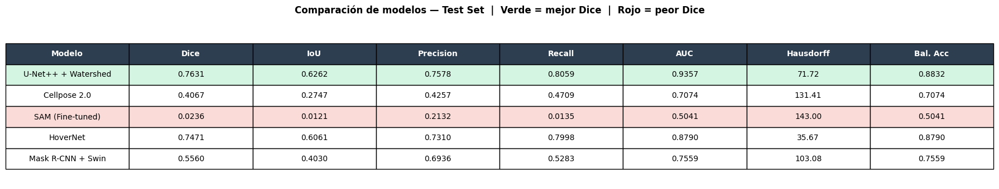
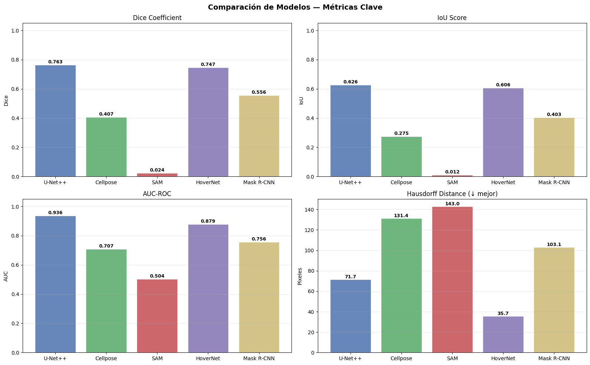
╔══════════════════════════════════════════════════════════════════╗
║ ANÁLISIS CRÍTICO — BLOQUE 1 ║
╚══════════════════════════════════════════════════════════════════╝
1. MEJOR MODELO: U-Net++ + Watershed (Dice=0.763, AUC=0.936)
- El encoder ResNet34 preentrenado en ImageNet permite transfer
learning efectivo incluso con solo 424 imágenes de entrenamiento.
- AUC de 0.936 es el más alto de todos los modelos.
- Recall de 0.806 indica que detecta la mayoría de células reales.
- El post-procesamiento Watershed separa efectivamente instancias
tocantes, mejorando la calidad de las máscaras finales.
2. SEGUNDO LUGAR: HoverNet (Dice=0.747, Hausdorff=35.67px)
- Mejor Hausdorff de todos: sus predicciones son geográficamente
las más precisas en contorno y localización.
- Los HV maps obligan al modelo a aprender la geometría celular,
no solo la presencia binaria — ventaja estructural clara.
- Entrenado desde cero sin preentrenamiento, lo que hace su
rendimiento aún más notable.
3. MASK R-CNN + SWIN (Dice=0.556)
- Resultado intermedio. Alta precision (0.694) pero bajo recall
(0.528): el modelo es conservador, prefiere no activar regiones
dudosas antes que generar falsos positivos.
- El backbone Swin-T aporta representaciones jerárquicas útiles,
pero Mask R-CNN está diseñado para instancias, no para máscara
binaria global — uso subóptimo de la arquitectura.
4. CELLPOSE 2.0 (Dice=0.407)
- Sus flujos vectoriales están diseñados para separar instancias
individuales, no para producir una máscara binaria agregada.
- Hausdorff alto (131px) indica contornos imprecisos.
5. SAM FINE-TUNED (Dice=0.024) — PEOR RESULTADO
- Encoder congelado preentrenado en imágenes naturales: dominio
completamente incompatible con microscopía celular.
- Sin prompts de entrada, el modelo no sabe qué segmentar.
- AUC=0.504 confirma rendimiento equivalente al azar a nivel píxel.
ERRORES MÁS FRECUENTES:
- Falsos negativos en células pequeñas o translúcidas.
- Fusión de células tocantes tratadas como una sola región.
- Artefactos de iluminación confundidos con señal celular.
LIMITACIONES:
- K-Fold (k=5) no implementado por restricciones computacionales.
- 606 imágenes totales es un dataset pequeño para modelos grandes.
- Tres tipos celulares con morfologías distintas dificultan la
generalización de un único modelo.
✅ Sección 7 — Evaluación comparativa final completa